Isomers are two or more compounds having the same molecular formula, hence the same molecular weight.
Isomers share the same molecular formula (same number of each type of atom), so they also have the same molecular weight.
Question 2 of 56
Structural (constitutional) isomers have:
A. The same molecular formula but atoms bonded in a different order
B. The same order of bonding but a different arrangement in space
C. Different molecular formulas
D. Identical physical and chemical properties
A. The same molecular formula but atoms bonded in a different order
Structural isomers have the same molecular formula, but their atoms are bonded in different orders, so they have different physical and chemical properties.
Same atoms, but connected in a different order. Because the connectivity changes, the physical and chemical properties change too.
Question 3 of 56
Dimethyl ether (CH₃OCH₃) and ethanol (CH₃CH₂OH) have the same physical properties.
True
False
False
Both are C₂H₆O, but dimethyl ether is a gas with a very low boiling point, while ethanol is a liquid with a higher boiling point.
They are structural isomers (both C₂H₆O), and structural isomers have different properties: dimethyl ether is a gas, ethanol is a liquid.
Question 4 of 56
Which of the following is NOT a structural isomer of C₄H₈?
A. 1-Butene (CH₂=CHCH₂CH₃)
B. Cyclobutane
C. Methylcyclopropane
D. Butane (CH₃CH₂CH₂CH₃)
D. Butane (CH₃CH₂CH₂CH₃)
Butane is C₄H₁₀, not C₄H₈. The other three are all C₄H₈. The doctor's figure below shows all the C₄H₈ structural isomers (1-butene, 2-methylpropene, cyclobutane, methylcyclopropane, trans-2-butene, and in brackets cis-2-butene); butane is not among them.
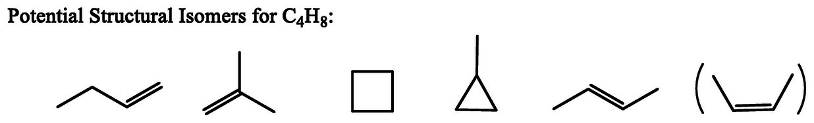
Count the hydrogens: butane has 10 H (C₄H₁₀), while the other three have 8 H (C₄H₈).
Question 5 of 56
Which of the following is NOT an isomer of C₄H₁₀O?
A. 1-Butanol
B. 2-Methyl-2-propanol
C. Diethyl ether (CH₃CH₂OCH₂CH₃)
D. 1-Propanol
D. 1-Propanol
1-Propanol is C₃H₈O (only 3 carbons). The others are all C₄H₁₀O.
1-Propanol has only 3 carbons (C₃H₈O), so it cannot be an isomer of a C₄ compound.
Question 6 of 56
Which compound is a structural isomer of this compound, (CH₃)₃CBr (2-bromo-2-methylpropane)?
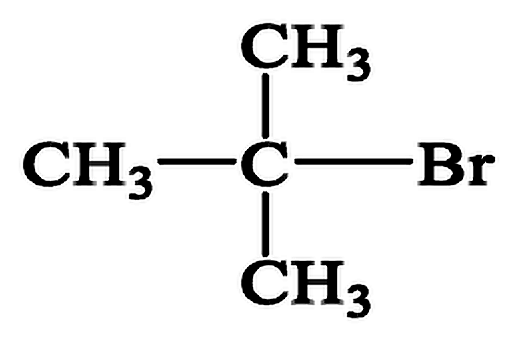
A. CH₃CH(CH₃)CH₂Br
B. (CH₃)₃CCl
C. CH₃CH₂Br
D. CH₃C(CH₃)₂Br
A. CH₃CH(CH₃)CH₂Br
(CH₃)₃CBr has the formula C₄H₉Br (4 C, 9 H, 1 Br). CH₃CH(CH₃)CH₂Br also has 4 C, 9 H and 1 Br, but the Br is on an end carbon instead of the middle carbon, so the atoms are bonded in a different order → structural isomer. • (CH₃)₃CCl has Cl instead of Br → different formula. • CH₃CH₂Br has only 2 carbons → different formula. • CH₃C(CH₃)₂Br is the same molecule, just written in a different way. In the doctor's answer below, the compound on the left is the question compound; the ones on the right (after the ≡ sign, and in brackets) are its structural isomers. Here the ≡ sign only separates the question compound from its isomers; it does not mean "identical".
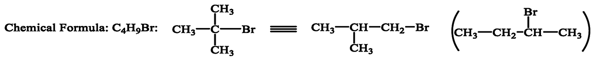
Keep the formula C₄H₉Br and only move the Br to another carbon. CH₃C(CH₃)₂Br is the same molecule written differently, and swapping Br for Cl changes the formula.
Question 7 of 56
This compound (C₈H₉NO₂) has the OH at the para position (opposite the NH group). Which is a structural isomer of it?
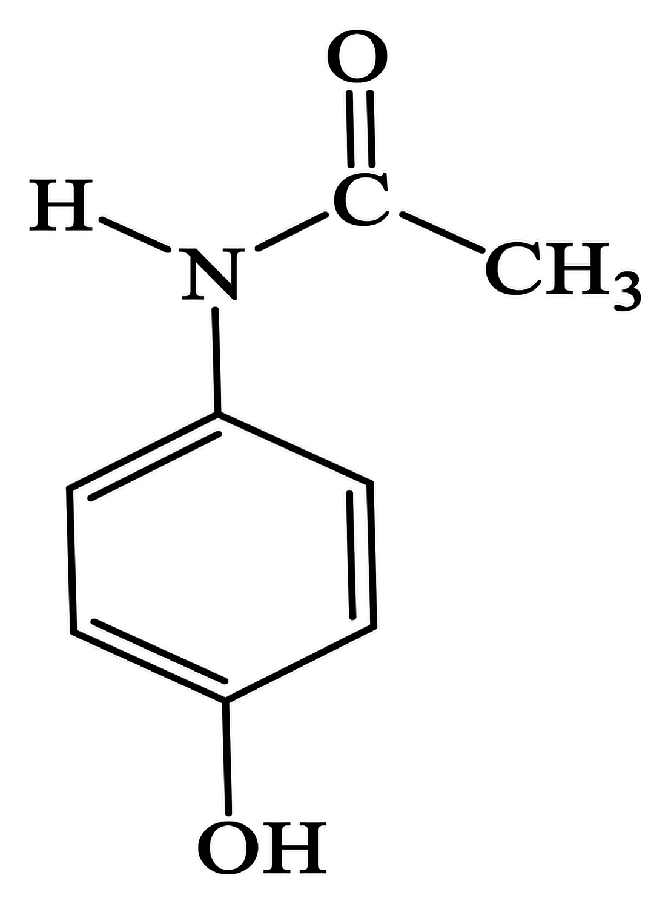
A. The same compound with the OH at the meta position
B. The same compound without the OH group
C. The same compound drawn upside down
D. The same compound with two OH groups
A. The same compound with the OH at the meta position
Moving the OH group to the meta (or ortho) position keeps the formula C₈H₉NO₂ but changes the bonding order → structural isomer. Removing or adding an OH changes the formula, and turning the drawing upside down does not change the molecule. In the doctor's answer below, the compound on the left is the question compound; the ones on the right are its isomers (OH at meta, and in brackets at ortho). The ≡ sign only separates the question compound from its isomers; it does not mean "identical".
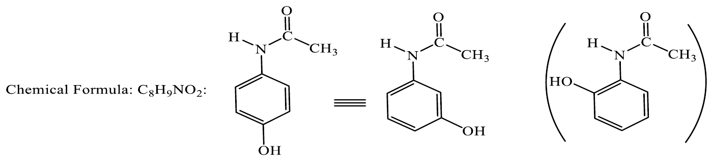
Moving the OH around the ring keeps the same atoms in a different order. Removing or adding an OH changes the formula.
Question 8 of 56
Which of the following pairs represent structural isomers?
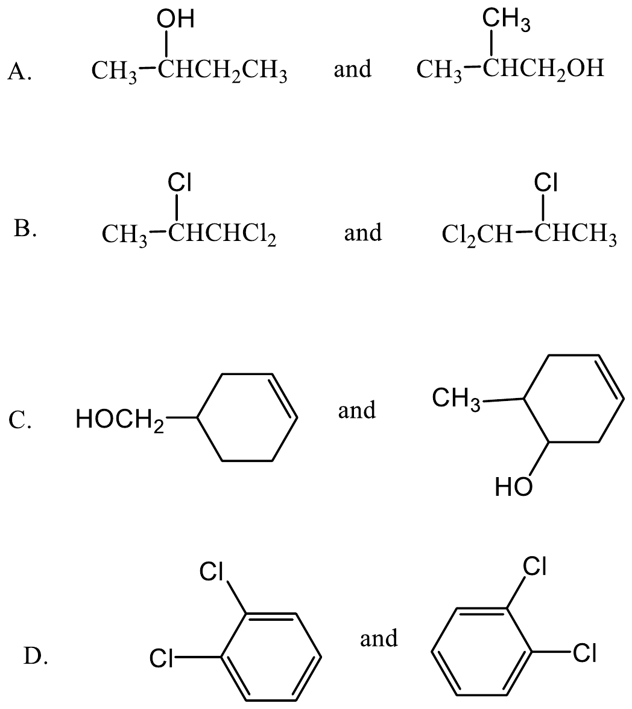
A. A and C
B. A only
C. B and D
D. A, B, C and D
A. A and C
A: C₄H₁₀O and C₄H₁₀O, different order → isomers. B: same compound written in reverse. C: both C₇H₁₂O, different structures → isomers. D: both 1,2-dichlorobenzene → same compound. (Not solved in the doctor's file.)
First check that both compounds have the same formula, then check the order of bonding. B and D are traps: each pair is the same compound drawn differently.
Question 9 of 56
Which is a structural isomer of 2-bromo-2-methylbutane, shown below?
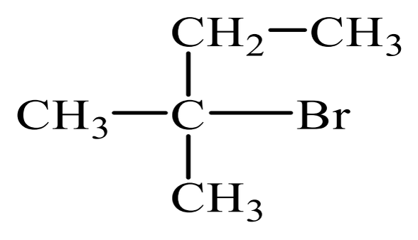
A. 1-Bromopentane
B. 2-Bromobutane
C. 2-Bromo-2-methylpropane
D. 1-Bromopropane
A. 1-Bromopentane
The compound is C₅H₁₁Br. 1-Bromopentane (CH₃CH₂CH₂CH₂CH₂Br) is also C₅H₁₁Br. The other choices have fewer carbons. (Not solved in the doctor's file.)
Count the carbons: the compound has 5. Only 1-bromopentane also has 5 carbons and one Br.
Question 10 of 56
Which pair are structural isomers?
A. CH₃CH₂CH₂OH and CH₃CH(OH)CH₃
B. CH₃CH₂OH and CH₃CH₂CH₂OH
C. C₂H₆ and C₂H₄
D. CH₄ and C₂H₆
A. CH₃CH₂CH₂OH and CH₃CH(OH)CH₃
Both are C₃H₈O with the OH on different carbons.
Rule 1: same molecular formula. Only 1-propanol and 2-propanol share the same formula (C₃H₈O).
Question 11 of 56
Which is NOT an isomer of C₃H₈O?
A. 1-Propanol
B. 2-Propanol
C. Ethyl methyl ether (CH₃OCH₂CH₃)
D. Propanal (CH₃CH₂CHO)
D. Propanal (CH₃CH₂CHO)
Propanal is C₃H₆O (2 hydrogens fewer).
Propanal is C₃H₆O — it has 2 fewer hydrogens than C₃H₈O.
Question 12 of 56
Propanal (CH₃CH₂CHO) and acetone (CH₃COCH₃) are structural isomers.
True
False
True
Both are C₃H₆O with a different bonding order (aldehyde vs ketone) → functional isomers.
Same formula (C₃H₆O): one is an aldehyde and the other a ketone → functional isomers.
Question 13 of 56
How many structural isomers does C₅H₁₂ have?
A. 2
B. 3
C. 4
D. 5
B. 3
Pentane, 2-methylbutane and 2,2-dimethylpropane → 3.
Start with the 5-carbon chain, then a 4-carbon chain with one branch, then a 3-carbon chain with two branches: 3 isomers.
Question 14 of 56
1-Butanol and 2-butanol are:
A. Skeletal isomers
B. Positional isomers
C. Functional isomers
D. Geometric isomers
B. Positional isomers
Same functional group (OH) in a different position → positional isomers.
The functional group (OH) stays the same; only its position changes → positional isomers.
Question 15 of 56
Ethanol and dimethyl ether are:
A. Skeletal isomers
B. Positional isomers
C. Functional isomers
D. The same compound
C. Functional isomers
Different functional groups (alcohol vs ether) → functional isomers.
The functional group itself changes (alcohol → ether) → functional isomers.
2. Stereoisomers & Geometric Isomerism
7 questions
Question 16 of 56
What type of isomerism exists in compounds containing carbon-carbon double bonds and cyclic compounds?
A. Geometric isomerism
B. Structural isomerism
C. Meso isomerism
D. Functional isomerism
A. Geometric isomerism
Geometric (cis/trans) isomerism, because rotation around a C=C double bond or within a ring is restricted, so groups can be locked on the same side (cis) or on opposite sides (trans).
Double bonds and rings cannot rotate, so groups are locked on the same side (cis) or opposite sides (trans).
Question 17 of 56
What is the major difference between constitutional isomers and stereoisomers?
A. Constitutional isomers are bonded in different orders; stereoisomers are bonded in the same order but oriented differently in space
B. Stereoisomers are bonded in different orders; constitutional isomers differ only in space
C. Stereoisomers have different molecular formulas
D. There is no difference
A. Constitutional isomers are bonded in different orders; stereoisomers are bonded in the same order but oriented differently in space
Structural isomers have their atoms bonded in different orders, while stereoisomers are bonded in the same order but are oriented in space differently.
Constitutional = different connectivity. Stereo = same connectivity, different 3D arrangement.
Question 18 of 56
Which of the following is NOT a type of stereoisomer?
A. Geometric isomers
B. Enantiomers
C. Diastereomers
D. Constitutional isomers
D. Constitutional isomers
Types of isomers: structural (constitutional) isomers, and stereoisomers (geometric isomers, enantiomers, diastereomers, meso compounds). Constitutional isomers have a different bonding order, so they are not stereoisomers.
Constitutional isomers are a separate main type; they are not stereoisomers.
Question 19 of 56
Which compound can show geometric (cis/trans) isomerism?
A. CH₂=CHCH₃
B. CH₃CH=CHCH₃
C. (CH₃)₂C=CHCH₃
D. CH₂=CH₂
B. CH₃CH=CHCH₃
In 2-butene each carbon of the double bond has two different groups (H and CH₃).
Each carbon of the double bond must carry two different groups. In 2-butene each carbon has H and CH₃.
Question 20 of 56
1,2-Dimethylcyclopentane can exist as cis and trans isomers.
True
False
True
The ring cannot rotate, so the two CH₃ groups can be on the same side (cis) or opposite sides (trans).
The ring prevents rotation, so the two CH₃ groups can be cis (same side) or trans (opposite sides).
Question 21 of 56
Stereoisomers have:
A. Different molecular formulas
B. The same order of bonding but a different arrangement in space
C. A different order of bonding
D. Different molecular weights
B. The same order of bonding but a different arrangement in space
Stereoisomers: same bonding order, different orientation in space.
Stereoisomers differ only in the spatial arrangement; the bonding order is identical.
Question 22 of 56
cis-2-Butene and trans-2-butene are structural isomers.
True
False
False
They have the same bonding order → geometric isomers (stereoisomers).
The bonding order is the same, only the orientation differs → geometric isomers, which are stereoisomers.
3. Chirality & Chiral Carbon
9 questions
Question 23 of 56
Which of the following is a chiral object?
A. A hand
B. A ball
C. A cup
D. A conical flask
A. A hand
A chiral object cannot be superposed on its mirror image, e.g. a hand or a foot. A ball, a cup and a conical flask are achiral.
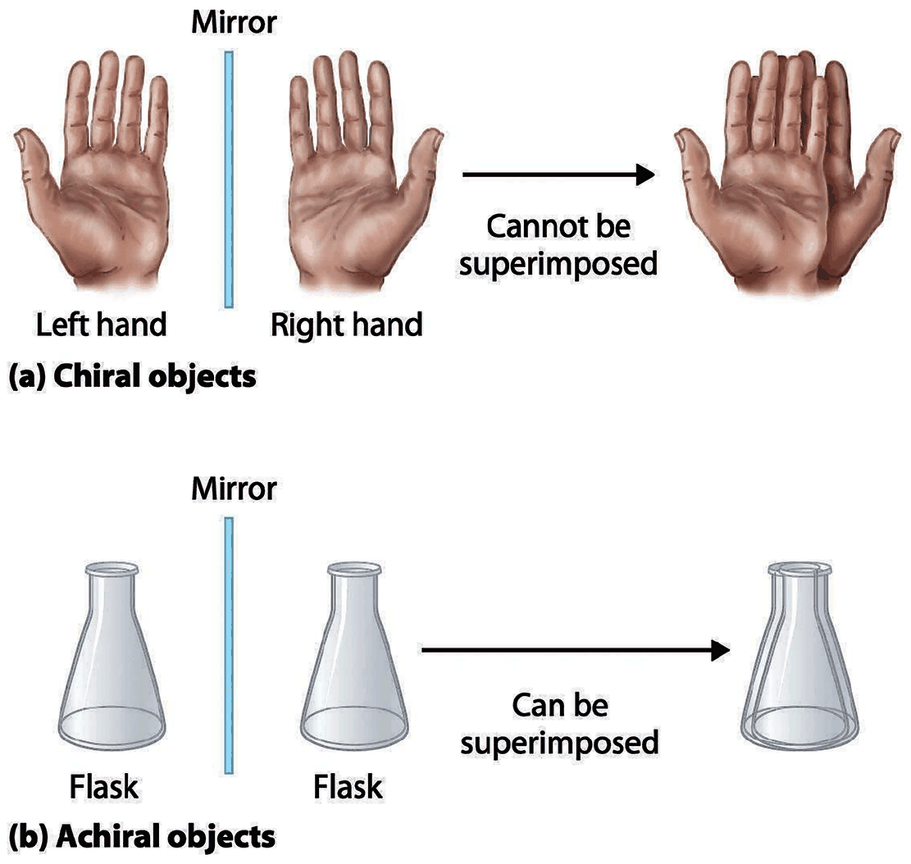
Your left and right hands are mirror images that cannot be superimposed → chiral.
Question 24 of 56
An achiral object can be superposed on its mirror image.
True
False
True
An achiral object can be superposed on its mirror image, e.g. a ball, a cup or a conical flask.
Achiral means the object and its mirror image match exactly (e.g. a ball or a cup).
Question 25 of 56
A chiral carbon is an sp³-hybridized carbon with:
A. Four different atoms or groups attached
B. Two identical groups attached
C. A double bond
D. Four identical groups attached
A. Four different atoms or groups attached
A chiral carbon (C*) is an sp³ carbon with four different atoms or groups attached to it. Two examples from the doctor's file are shown below; in each, the carbon marked * carries four different groups.
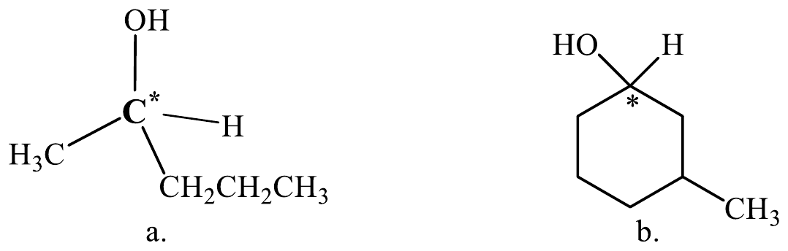
Think of the carbon holding four different groups, like four different hands → chiral carbon (marked C*).
Question 26 of 56
Another name for a chiral carbon is:
A. Stereocenter
B. Meso center
C. Achiral carbon
D. sp² carbon
A. Stereocenter
Also called asymmetric carbon, asymmetric center, stereocenter or stereogenic center.
Check each carbon separately: both middle carbons carry four different groups.
Question 30 of 56
3-Pentanol, CH₃CH₂CH(OH)CH₂CH₃, is a chiral molecule.
True
False
False
C-3 has two identical ethyl groups, so it is not a chiral carbon.
C-3 carries two identical ethyl groups, so it does not have four different groups.
Question 31 of 56
Which object is achiral?
A. A glove
B. A screw
C. A sphere
D. A foot
C. A sphere
A sphere can be superposed on its mirror image.
A sphere looks exactly the same in a mirror.
4. Optical Activity & Enantiomers
10 questions
Question 32 of 56
A dextrorotatory enantiomer rotates plane-polarized light:
A. To the right (clockwise)
B. To the left (counterclockwise)
C. It does not rotate light
D. In both directions
A. To the right (clockwise)
Dextrorotatory (Latin dexter, right) rotates plane-polarized light to the right (clockwise). Levorotatory rotates it to the left (counterclockwise).
Dextro = right (clockwise, +). Levo = left (counterclockwise, −).
Question 33 of 56
Which instrument measures the rotation of plane-polarized light by a chiral compound?
A. Polarimeter
B. Spectrometer
C. Thermometer
D. Barometer
A. Polarimeter
Polarimeter: instrument for measuring the rotation of plane-polarized light by a chiral compound.
A polarimeter measures how many degrees a compound rotates plane-polarized light.
Question 34 of 56
A compound that rotates plane-polarized light is called optically active.
True
False
True
Optically active indicates that a compound rotates plane-polarized light.
Optically active simply means the compound rotates plane-polarized light.
Question 35 of 56
Which property is different for a pair of enantiomers?
A. Interaction with plane-polarized light
B. Boiling point
C. Molecular weight
D. Molecular formula
A. Interaction with plane-polarized light
Enantiomers have the same boiling point, molecular weight and molecular formula. They differ only in two properties: chemical, their interactions with other chiral substances; physical, their interaction with plane-polarized light (they rotate it in opposite directions).
Enantiomers are almost identical; they differ only with plane-polarized light and with other chiral substances.
Question 36 of 56
Which of the following is NOT a property of enantiomers?
A. They are non-superimposable mirror images
B. They rotate plane-polarized light in opposite directions
C. They have a plane of symmetry
D. They differ in their interactions with other chiral substances
C. They have a plane of symmetry
Enantiomers do NOT have a plane of symmetry. They are non-superimposable mirror images, rotate light in opposite directions, have almost identical properties and differ with other chiral substances.
Enantiomers have NO plane of symmetry — that is why they are chiral.
Question 37 of 56
L(+)-Lactic acid is produced in muscles during exercise. Where is D(−)-lactic acid found? (The two mirror-image forms of lactic acid are shown below.)
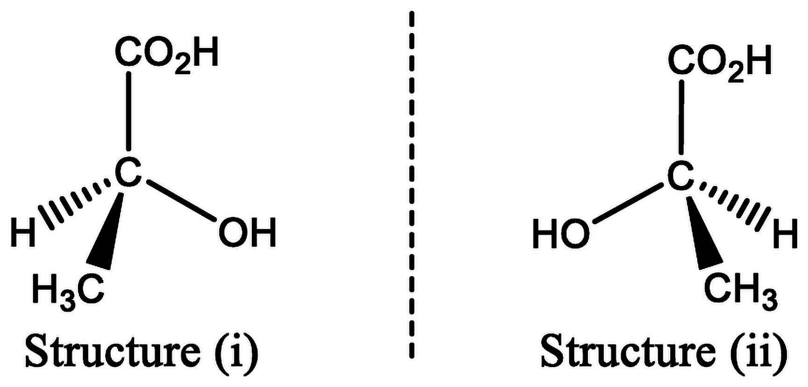
A. Sour milk
B. Blood
C. Muscles
D. Sea water
A. Sour milk
D(−)-Lactic acid is found in sour milk. The two forms are a pair of enantiomers (C₃H₆O₃).
L(+)-lactic acid is in muscles; D(−)-lactic acid is in sour milk.
Question 38 of 56
Compounds having the same order of bonded atoms but differing only in the direction of rotation of plane-polarized light are:
A. Constitutional isomers
B. Diastereomers
C. Enantiomers
D. Geometric isomers
C. Enantiomers
Enantiomers: they have the same bonding order and differ only in the direction in which they rotate plane-polarized light (same angle, opposite directions). (Not solved in the doctor's file.)
Same bonding order + the only difference is the direction of rotation of light → enantiomers.
Question 39 of 56
An enantiomer rotates plane-polarized light +12°. Its mirror image rotates it:
A. +12°
B. −12°
C. 0°
D. +24°
B. −12°
Same magnitude, opposite direction.
Enantiomers rotate light by the same amount in opposite directions.
Question 40 of 56
A pair of enantiomers have different boiling points.
True
False
False
Enantiomers have almost identical physical properties, including the same boiling point. They differ only in the direction they rotate plane-polarized light.
Enantiomers have the same boiling point, melting point and solubility.
Question 41 of 56
Which molecule is optically active?
A. CH₃CH(OH)CH₂CH₃
B. CH₃CH₂CH₂OH
C. CH₃OH
D. CH₃CH₂OCH₃
A. CH₃CH(OH)CH₂CH₃
2-Butanol has a chiral carbon (C-2 carries OH, H, CH₃ and CH₂CH₃), so it rotates plane-polarized light. The other molecules have no chiral carbon, so they are optically inactive.
Only the molecule with a chiral carbon (2-butanol) rotates plane-polarized light.
5. Diastereomers & Meso Compounds
15 questions
Question 42 of 56
How many stereoisomers are expected for compound (i), 2,3,4-trihydroxybutanal?
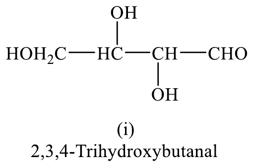
A. 2
B. 3
C. 4
D. 8
C. 4
It has 2 dissimilar chiral carbons (C-2 and C-3): 2ⁿ = 2² = 4 isomers. The doctor's figure below shows the 4 stereoisomers (A–D) as Fischer projections; the dashed lines are mirrors.
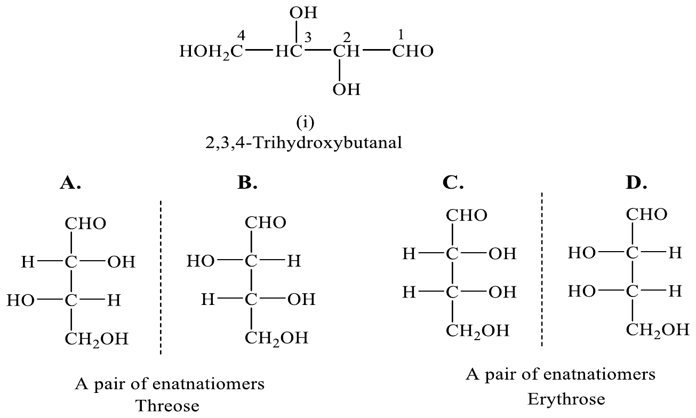
Two different chiral carbons → 2ⁿ = 2² = 4 stereoisomers.
Question 43 of 56
The four stereoisomers of compound (i), 2,3,4-trihydroxybutanal, are shown below as Fischer projections. A and C are:
A
B
C
D
A. Enantiomers
B. Diastereomers
C. Meso compounds
D. The same compound
B. Diastereomers
A and B are enantiomers; C and D are enantiomers. A and C, A and D, B and C, B and D are diastereomers (stereoisomers that are not mirror images).
A and C are stereoisomers but not mirror images → diastereomers.
Question 44 of 56
How many different stereoisomers does compound (ii), 2,3-dihydroxysuccinic acid, have?
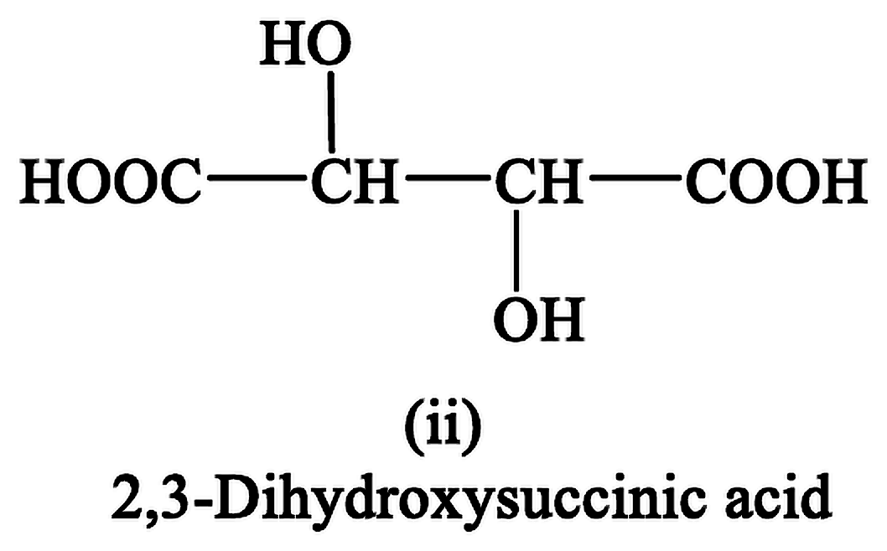
A. 2
B. 3
C. 4
D. 8
B. 3
2 similar chiral carbons → 2² = 4 expected, but G and H are the same meso compound → 2 enantiomers + 1 meso form = 3. In the doctor's figure below, E and F are the pair of enantiomers, and G and H (the red box marks the internal plane of symmetry) are the same meso compound.
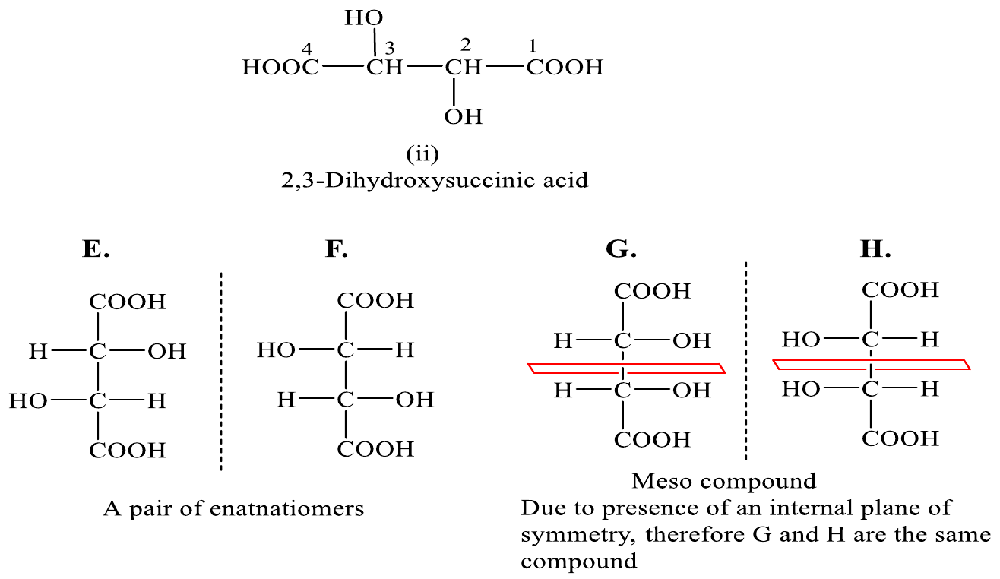
The two chiral carbons carry the same groups, so two of the four structures are the same meso compound → 3.
Question 45 of 56
Two of the stereoisomers of compound (ii), 2,3-dihydroxysuccinic acid, are shown below as Fischer projections. G and H are:
G
H
A. Enantiomers
B. Diastereomers
C. The same meso compound
D. Geometric isomers
C. The same meso compound
G and H have an internal plane of symmetry, so they are the same compound (meso compound): turning H by 180° in the plane gives G. The red boxes in the doctor's figure mark the plane of symmetry.
G and H have an internal plane of symmetry, so they are one and the same meso compound.
Question 46 of 56
A meso compound:
A. Has an internal plane of symmetry and is optically inactive
B. Has only one stereocenter
C. Rotates plane-polarized light
D. Is a pair of enantiomers
A. Has an internal plane of symmetry and is optically inactive
A meso compound requires at least two stereocenters, contains an internal plane of symmetry, and is achiral (does not rotate plane-polarized light).
In a meso compound the two halves mirror each other and cancel out, so it does not rotate light.
Question 47 of 56
Which Fischer projection is the meso form?
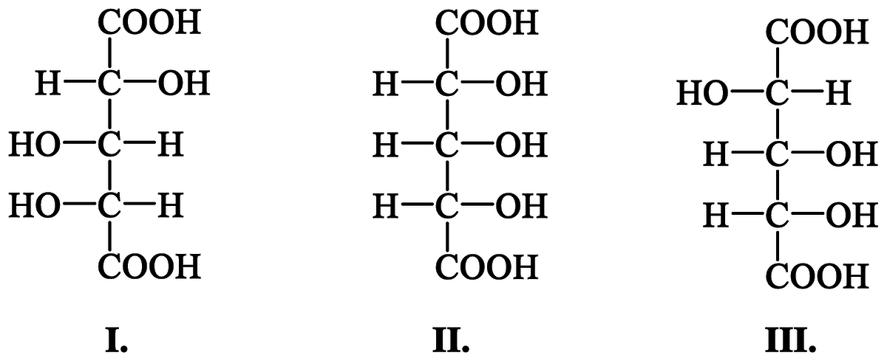
A. I
B. II
C. III
D. None
B. II
II has an internal plane of symmetry: the upper and lower halves are mirror images of each other. In the doctor's figure below, the box through the middle carbon marks this internal plane of symmetry ("pane" is a typo for "plane").
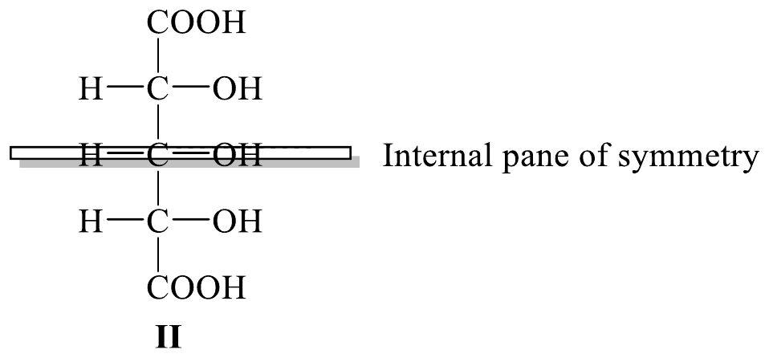
Draw a horizontal line through the middle of II: the top half is the mirror image of the bottom half.
Question 48 of 56
In the Fischer projections shown below, which pair are enantiomers?
A. I and II
B. I and III
C. II and III
D. None
B. I and III
I and III are mirror images → enantiomers. I and II, and II and III, are diastereomers (stereoisomers that are not mirror images).
Between I and III every H and OH is switched → mirror images → enantiomers.
Question 49 of 56
Which molecule is the meso form?
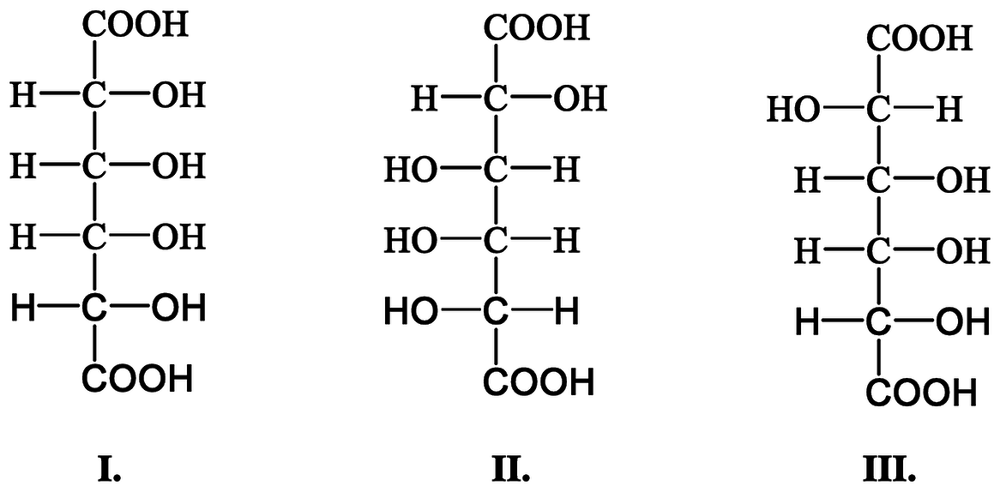
A. I
B. II
C. III
D. None
A. I
In I all OH groups are on the same side → internal plane of symmetry between C-3 and C-4 → meso. (Not solved in the doctor's file.)
In I all OH groups are on the same side, so the top half mirrors the bottom half → meso.
Question 50 of 56
In the Fischer projections shown below, II and III are:
A. Enantiomers
B. Diastereomers
C. Meso forms
D. The same compound
A. Enantiomers
Every OH is switched between II and III → mirror images → enantiomers. I with II, and I with III, are diastereomers.
Every OH is switched between II and III → mirror images → enantiomers.
Question 51 of 56
How many stereoisomers would you expect for the molecule shown below?
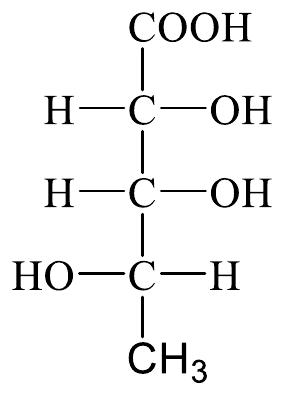
A. 2
B. 4
C. 8
D. 16
E. 32
C. 8
3 chiral carbons and no symmetry (COOH at one end, CH₃ at the other): 2³ = 8. (Not solved in the doctor's file.)
Count the chiral carbons (3). The two ends are different (COOH and CH₃), so there is no meso form: 2³ = 8.
Question 52 of 56
What is the maximum number of stereoisomers for a compound with 4 chiral carbons?
A. 4
B. 8
C. 16
D. 32
C. 16
2ⁿ = 2⁴ = 16.
Use 2ⁿ with n = 4.
Question 53 of 56
How many stereoisomers does 2,3-dichlorobutane (CH₃CHClCHClCH₃) have?
A. 2
B. 3
C. 4
D. 8
B. 3
2 similar chiral carbons → a pair of enantiomers + 1 meso form = 3.
Same pattern as 2,3-dihydroxysuccinic acid: two similar chiral carbons → a pair of enantiomers + 1 meso form.
Question 54 of 56
2-Bromo-3-chlorobutane (CH₃CHBrCHClCH₃) has a meso form.
True
False
False
The two chiral carbons are dissimilar (Br vs Cl), so there is no plane of symmetry → 4 stereoisomers, no meso.
Br and Cl are different, so the molecule cannot have an internal plane of symmetry → no meso form.
Question 55 of 56
Which Fischer projection is a meso compound?
A
B
A. A
B. B
C. Both
D. Neither
A. A
In A both Cl atoms are on the same side → internal plane of symmetry → meso.
Draw a line between the two carbons: in A the top half mirrors the bottom half.
Question 56 of 56
Diastereomers are mirror images of each other.
True
False
False
Diastereomers are stereoisomers that are NOT mirror images.
Mirror images = enantiomers. Stereoisomers that are not mirror images = diastereomers.
Lecture 2Geometric Isomerism
69 questions
1. Geometric Isomerism (cis / trans)
15 questions
Question 1 of 69
Geometric isomerism is a result of:
A. Restricted rotation (rigidity) about a double bond or in a ring
B. A different order of bonded atoms
C. Different molecular formulas
D. The presence of a chiral carbon
A. Restricted rotation (rigidity) about a double bond or in a ring
Geometric isomerism is a result of rigidity in molecules: there is no free rotation about the C=C double bond or about the bonds of a ring.
Rotation is blocked, so the groups are locked on one side or the other. That is what creates two different isomers.
Question 2 of 69
Geometric isomerism occurs in:
A. Alkenes and cyclic compounds
B. Alkanes only
C. Alkynes only
D. Compounds with a chiral carbon only
A. Alkenes and cyclic compounds
It occurs in two classes of compounds: alkenes (C=C) and cyclic compounds.
Both a C=C bond and a ring stop free rotation. Open-chain single bonds rotate freely, so alkanes do not show it.
Question 3 of 69
Geometric isomers have the same molecular formula and the same order of bonded atoms.
True
False
True
Geometric isomers have the same molecular formula, the same molecular weight and the same order of bonding; they differ only in the orientation of the groups in space (different configurations).
They are stereoisomers: same atoms, same connections, different arrangement in space.
Question 4 of 69
A molecule is designated cis when the two groups are:
A. On the same side of the double bond
B. On opposite sides of the double bond
C. On the same carbon atom
D. Perpendicular to the double bond
A. On the same side of the double bond
cis (Latin, “on this side”): the two groups are on the same side of the double bond. trans (Latin, “across”): on opposite sides.
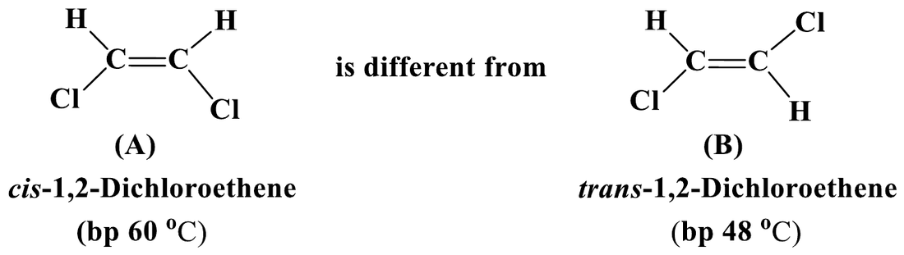
cis = same side, trans = across.
Question 5 of 69
Which statement about the two isomers of 1,2-dichloroethene is correct?
A. cis-1,2-Dichloroethene boils at 60 °C, higher than the trans isomer (48 °C)
B. trans-1,2-Dichloroethene boils at 60 °C, higher than the cis isomer
C. Both isomers have the same boiling point
D. They have different molecular formulas
A. cis-1,2-Dichloroethene boils at 60 °C, higher than the trans isomer (48 °C)
cis-1,2-Dichloroethene: bp 60 °C. trans-1,2-Dichloroethene: bp 48 °C.
Geometric isomers are different compounds, so their physical properties (such as boiling point) are different.
Question 6 of 69
Rotation about a C–C sigma (single) bond is free, but rotation about a C=C double bond is restricted.
True
False
True
A sigma bond allows free rotation. Rotating about a double bond would require breaking the pi bond (the side-by-side p orbitals), so rotation is restricted.
The pi bond holds the two carbons flat and locked, like two hands holding each other.
Question 7 of 69
Molecules A and B are:
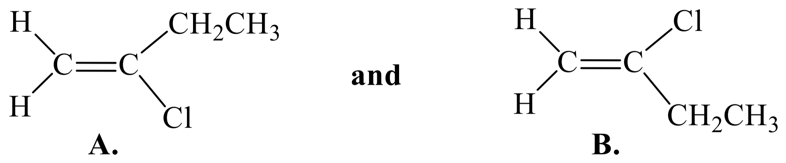
A. The same molecule
B. cis/trans isomers
C. Structural isomers
D. Enantiomers
A. The same molecule
A is the same as B.
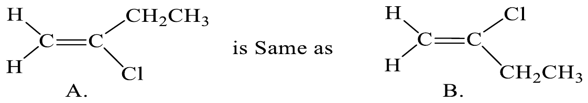
The left carbon carries two H atoms. When one carbon of the C=C has two identical groups, there is no geometric isomerism; B is just A flipped over.
Question 8 of 69
Molecules C and D are:
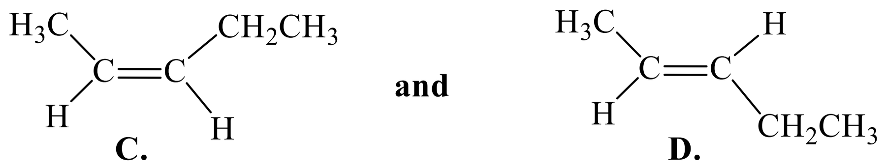
A. Geometric isomers: cis-2-pentene and trans-2-pentene
B. The same molecule
C. Structural isomers
D. Not isomers
A. Geometric isomers: cis-2-pentene and trans-2-pentene
C is different from D: C is cis-2-pentene and D is trans-2-pentene.
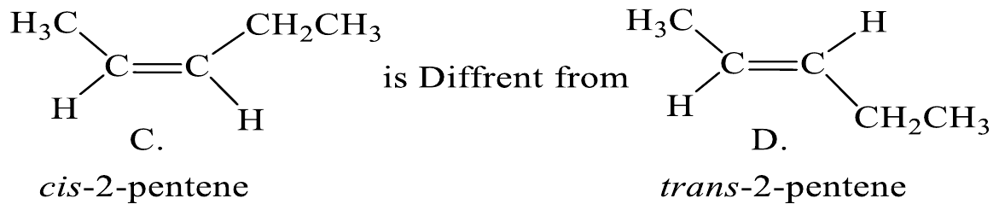
Each carbon of the C=C has two different groups. In C the CH₃ and CH₂CH₃ are on the same side (cis); in D they are across (trans).
Question 9 of 69
Molecules E and F are:
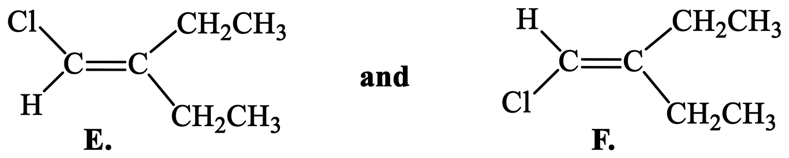
A. The same molecule
B. cis/trans isomers
C. Structural isomers
D. Enantiomers
A. The same molecule
E is the same as F.
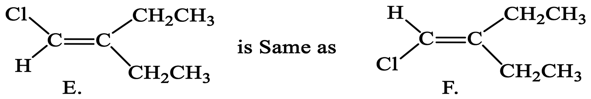
The right carbon carries two identical ethyl groups, so swapping sides changes nothing.
Question 10 of 69
Molecules G and H are:
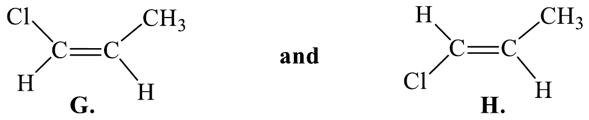
A. cis-1-chloropropene and trans-1-chloropropene
B. The same molecule
C. trans-1-chloropropene and cis-1-chloropropene
D. Structural isomers
A. cis-1-chloropropene and trans-1-chloropropene
G is different from H: G is cis-1-chloropropene and H is trans-1-chloropropene.
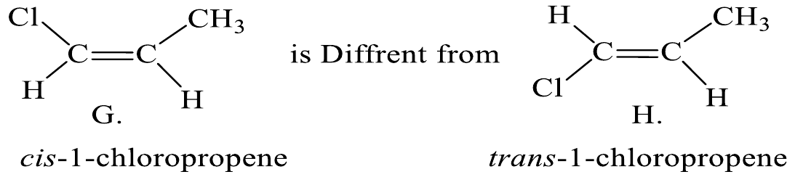
In G, Cl and CH₃ are on the same side (cis). In H, Cl is down and CH₃ is up (trans).
Question 11 of 69
Which compound can exist as cis and trans isomers?
A. ClCH=CHCl
B. CH₂=CCl₂
C. CH₂=CHCl
D. Cl₂C=CCl₂
A. ClCH=CHCl
In ClCH=CHCl each carbon of the double bond carries two different groups (H and Cl).
Check each carbon of the C=C: if either carbon has two identical groups, no cis/trans is possible.
Question 12 of 69
Which alkene does NOT show geometric isomerism?
A. 2-Methyl-2-butene, (CH₃)₂C=CHCH₃
B. 2-Butene, CH₃CH=CHCH₃
C. 2-Pentene, CH₃CH=CHCH₂CH₃
D. 1-Chloropropene, ClCH=CHCH₃
A. 2-Methyl-2-butene, (CH₃)₂C=CHCH₃
In 2-methyl-2-butene, C-2 carries two identical CH₃ groups.
Two identical groups on one carbon means no cis/trans.
C-1 carries two H atoms, so no cis/trans isomers are possible.
Terminal alkenes (=CH₂) never show cis/trans isomerism.
Question 14 of 69
In trans-2-butene, the two CH₃ groups are on the same side of the double bond.
True
False
False
In trans-2-butene the CH₃ groups are on opposite sides; in cis-2-butene they are on the same side.
trans = across.
Question 15 of 69
cis and trans isomers have identical physical properties.
True
False
False
They are different compounds with different physical properties (for example, cis- and trans-1,2-dichloroethene boil at 60 °C and 48 °C).
Different shapes give different boiling points, melting points and polarities.
2. E / Z System & Priority Rules
19 questions
Question 16 of 69
The letter Z comes from the German word zusammen, which means:
A. Together
B. Across
C. Right
D. Left
A. Together
(Z) is from the German zusammen (“together”); (E) is from entgegen (“across”).
Z = “ze zame zide”: higher-priority groups on the same side.
Question 17 of 69
The configuration is (E) when the higher-priority atoms or groups are:
A. On opposite sides of the C=C double bond
B. On the same side of the C=C double bond
C. On the same carbon atom
D. Both hydrogen atoms
A. On opposite sides of the C=C double bond
The configuration is (Z) if the higher-priority atoms or groups are on the same side of the C=C, and (E) if they are on opposite sides.
First pick the higher-priority group on each carbon, then compare their sides.
Question 18 of 69
By sequence rule 1, which atom has the highest priority?
A. I
B. Br
C. Cl
D. F
A. I
For atoms, the sequence order is by atomic number: I (53) > Br (35) > Cl (17) > F (9).
Higher atomic number = higher priority.
Question 19 of 69
What is the configuration of molecule (ii), 1-bromo-2-chloro-2-fluoro-1-iodoethene?
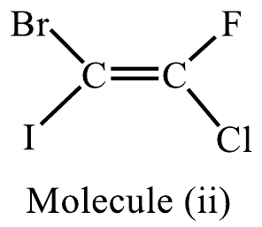
A. (Z)
B. (E)
C. It has no E/Z configuration
D. Cannot be decided
A. (Z)
On the left carbon I > Br; on the right carbon Cl > F. I and Cl are on the same side of the C=C, so the compound is (Z)-1-bromo-2-chloro-2-fluoro-1-iodoethene.
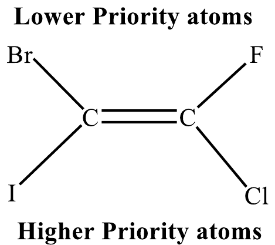
I and Cl are the higher-priority atoms and both are at the bottom, so Z.
Question 20 of 69
In molecule (i), which group on the right-hand carbon has the higher priority?
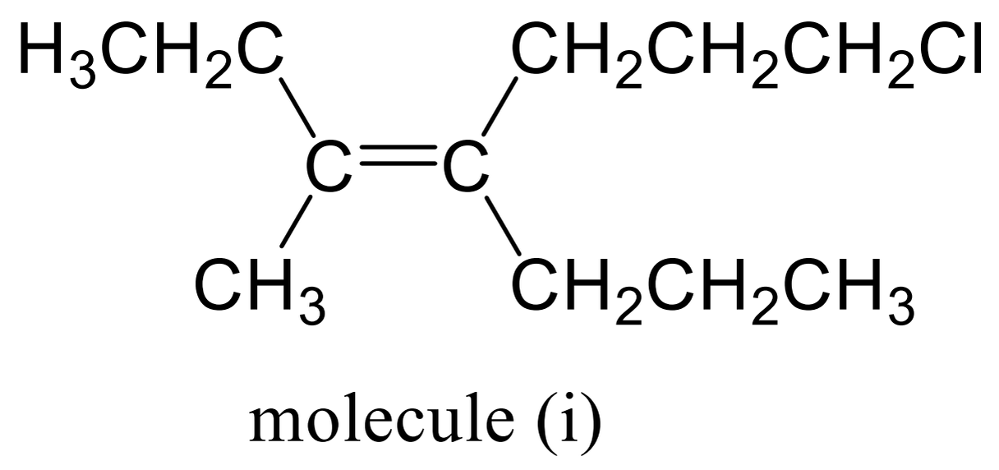
A. –CH₂CH₂CH₂Cl
B. –CH₂CH₂CH₃
C. They have equal priority
D. It cannot be determined
A. –CH₂CH₂CH₂Cl
Both groups are attached through a CH₂ carbon (C,H,H), and the next carbon is also CH₂ (C,H,H), so there is still a tie. At the third carbon, –CH₂Cl has (Cl,H,H) while –CH₃ has (H,H,H); Cl beats H, so –CH₂CH₂CH₂Cl has the higher priority (rule 4). The figure shows the two right-hand groups written out atom by atom.
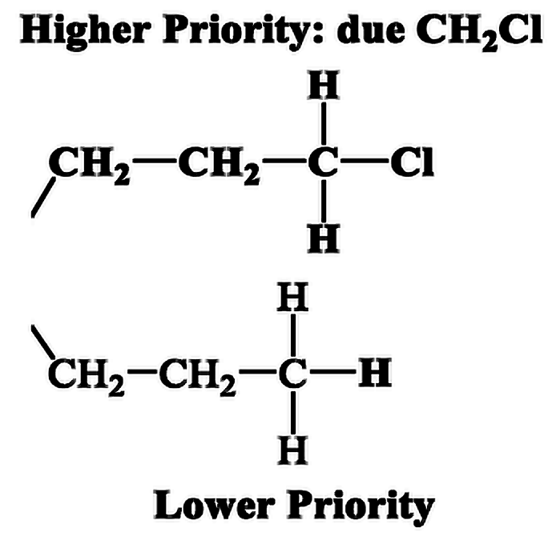
When the first atoms tie, move outward along the chain until you find the first difference.
Question 21 of 69
What is the configuration of molecule (i), 7-chloro-3-methyl-4-propylhept-3-ene?
A. (Z)-7-chloro-3-methyl-4-propylhept-3-ene
B. (E)-7-chloro-3-methyl-4-propylhept-3-ene
C. It has no E/Z configuration
D. cis only, not E/Z
A. (Z)-7-chloro-3-methyl-4-propylhept-3-ene
Left carbon: –CH₂CH₃ > –CH₃. Right carbon: –CH₂CH₂CH₂Cl > –CH₂CH₂CH₃. Both higher-priority groups are on the top side, so the configuration is (Z). In the figure, “≡” means the expanded drawing on the right is the same molecule with each group written out; the labels mark the higher- and lower-priority group on each carbon.
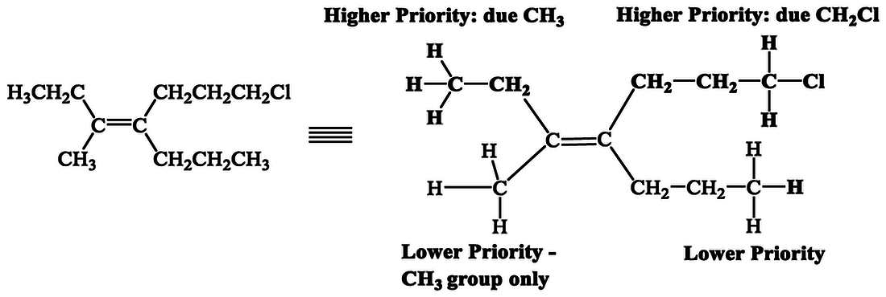
Ethyl beats methyl, and the chloro chain beats propyl. Both winners are on top, so Z.
Question 22 of 69
By sequence rule 3 (isotopes), which has the higher priority?
A. Deuterium (D, ²H)
B. Hydrogen (H, ¹H)
C. They are equal
D. It depends on the position
A. Deuterium (D, ²H)
For isotopes of the same element, the higher mass number has the higher priority: D (²H) > H (¹H). (The doctor's file says “atomic number”, but isotopes have the same atomic number; it is the mass number that differs.)
Same atomic number, so the heavier isotope wins.
Question 23 of 69
In (E)-3-methyl-2-pentene, why does the ethyl group have a higher priority than the methyl group?
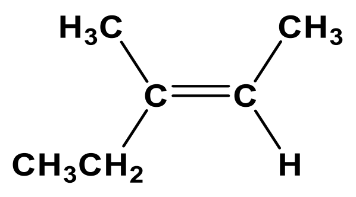
A. Its carbon carries (C,H,H) while the methyl carbon carries (H,H,H)
B. Ethyl is attached by an oxygen atom
C. Methyl has a higher atomic number
D. Ethyl contains a double bond
A. Its carbon carries (C,H,H) while the methyl carbon carries (H,H,H)
Both groups are attached through carbon. At the next atoms, ethyl has two H's and one C, while methyl has three H's, so ethyl has the higher priority. In the figure, “≡” means the right-hand drawing is the same molecule with the ethyl and methyl groups written out; the circled groups are the two being compared.
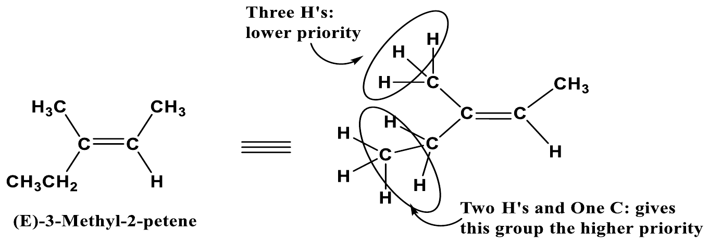
Tie on the first atom, so compare the next set: one C beats all H.
Question 24 of 69
By sequence rule 5 (multiple bonds), which group has the highest priority?
A. –COOH
B. –CHO
C. –CH₂OH
D. –CN
A. –COOH
Atoms attached by double or triple bonds are given single-bond equivalents. Increasing priority: –CH=CR₂ < phenyl < –CN < –CH₂OH < –CHO < –COR < –COOH < –COOR.
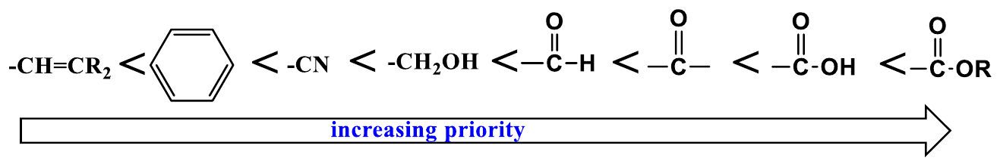
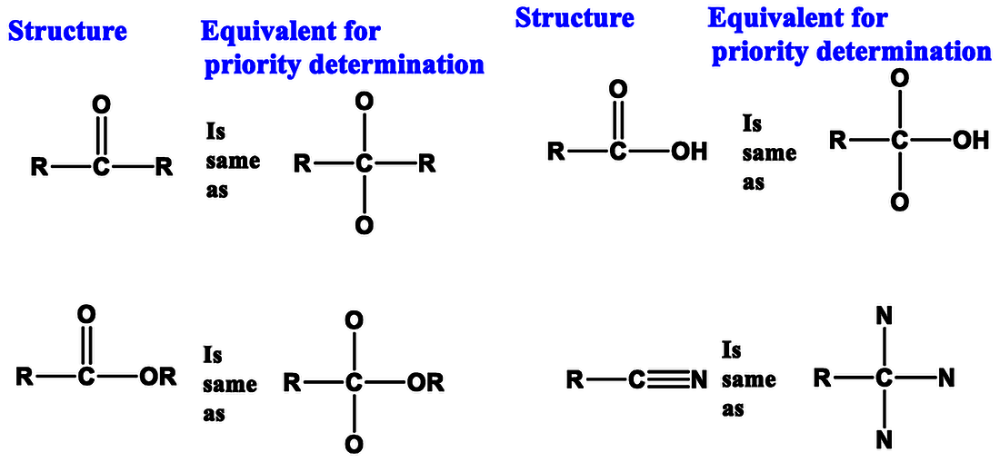
Count C=O as two O atoms. –COOH has (O,O,O), more than –CHO (O,O,H) or –CH₂OH (O,H,H).
Question 25 of 69
Which list shows the groups in order of increasing priority (lowest to highest)?
A. –H < –CH₂OH < –CO₂H < –CO₂CH₃ < –OH < –SCH₃
B. –H < –OH < –CH₂OH < –CO₂H < –CO₂CH₃ < –SCH₃
C. –H < –CH₂OH < –CO₂CH₃ < –CO₂H < –OH < –SCH₃
D. –SCH₃ < –OH < –CO₂CH₃ < –CO₂H < –CH₂OH < –H
A. –H < –CH₂OH < –CO₂H < –CO₂CH₃ < –OH < –SCH₃
Attached atoms: H (1) < C (6) < O (8) < S (16). The three carbon groups: –CH₂OH (O,H,H) < –CO₂H and –CO₂CH₃ (O,O,O). For the last tie, the –OH oxygen carries H but the –OCH₃ oxygen carries C, so –CO₂CH₃ > –CO₂H. (Not solved in the doctor's file.)
Sort by the first atom, then break ties by looking one atom further.
Question 26 of 69
What is the configuration of compound (i)?
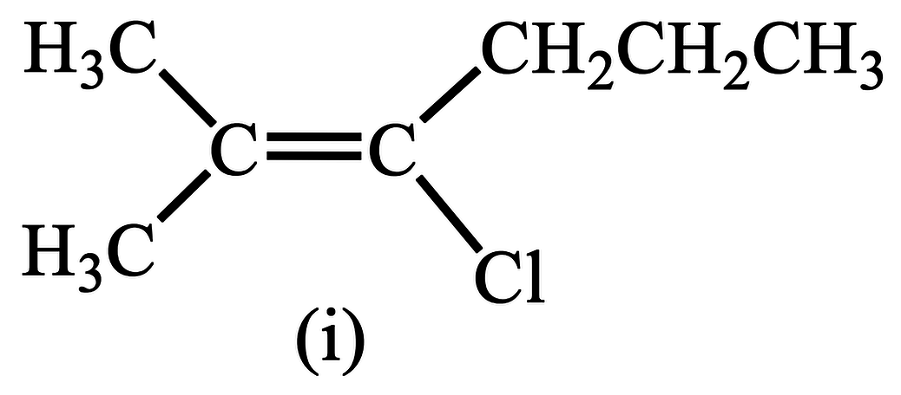
A. No E/Z configuration
B. (E)
C. (Z)
D. cis
A. No E/Z configuration
The left carbon carries two identical CH₃ groups, so the compound cannot have E/Z isomers. (Not solved in the doctor's file.)
Two identical groups on one carbon of the C=C means no geometric isomerism.
Question 27 of 69
What is the configuration of compound (ii)?
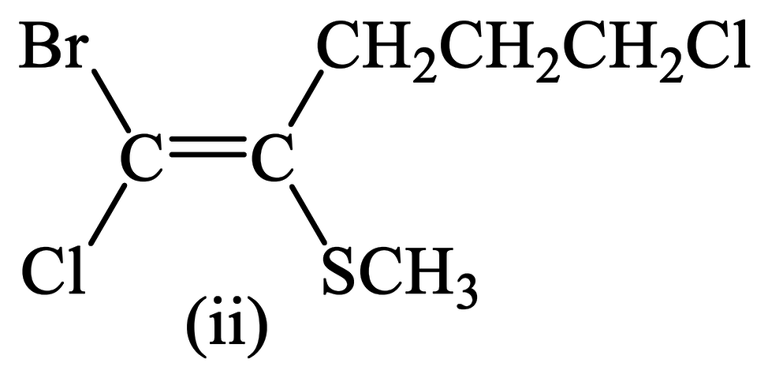
A. (E)
B. (Z)
C. No E/Z configuration
D. cis
A. (E)
Left carbon: Br (35) > Cl (17), Br is on top. Right carbon: –SCH₃ (S, 16) > –CH₂CH₂CH₂Cl (C, 6), SCH₃ is at the bottom. The higher-priority groups are on opposite sides, so (E). (Not solved in the doctor's file.)
Compare only the attached atoms: S beats C, even though the chain has a Cl further out.
Question 28 of 69
What is the configuration of compound (iii)?
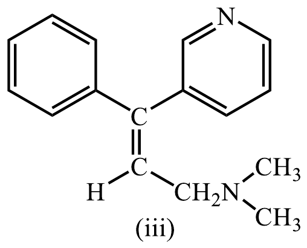
A. (Z)
B. (E)
C. No E/Z configuration
D. trans
A. (Z)
Bottom carbon: –CH₂N(CH₃)₂ > H. Top carbon: phenyl and 3-pyridyl both start with C(C,C,C); one atom further, the pyridyl ring reaches N while phenyl has only C, so pyridyl wins. Pyridyl and –CH₂N(CH₃)₂ are on the same side, so (Z). (Not solved in the doctor's file.)
The ring with N beats the plain benzene ring. Both winners are on the right side, so Z.
Question 29 of 69
What is the configuration of compound (iv)?
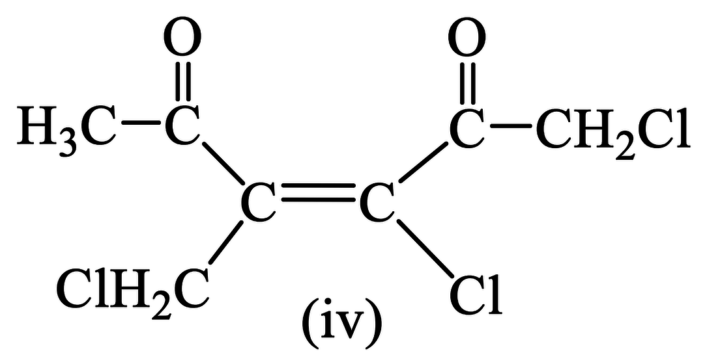
A. (Z)
B. (E)
C. No E/Z configuration
D. cis only
A. (Z)
Left carbon: –CH₂Cl (Cl,H,H) > –C(=O)CH₃ (O,O,C), because Cl (17) > O (8) at the first point of difference. Right carbon: –Cl > –C(=O)CH₂Cl. –CH₂Cl and –Cl are both at the bottom, so (Z). (Not solved in the doctor's file.)
Compare the highest atom first: one Cl beats two O's.
Question 30 of 69
(E)-2-Butene is the same compound as:
A. trans-2-Butene
B. cis-2-Butene
C. 1-Butene
D. 2-Methylpropene
A. trans-2-Butene
On each carbon CH₃ > H; in the E isomer the two CH₃ groups are on opposite sides, which is trans.
When each carbon has one H and one other group, E = trans and Z = cis.
Question 31 of 69
Which group has the highest priority?
A. –CH(CH₃)₂
B. –CH₂CH₃
C. –CH₃
D. –H
A. –CH(CH₃)₂
All three carbon groups tie at C. Next atoms: isopropyl (C,C,H) > ethyl (C,H,H) > methyl (H,H,H).
More carbons on the first carbon means higher priority.
Question 32 of 69
In BrCH=CHCl, if Br and Cl are on opposite sides of the double bond, the configuration is:
A. (E)
B. (Z)
C. No E/Z
D. meso
A. (E)
Br > H on one carbon and Cl > H on the other; opposite sides means (E).
Opposite = E (entgegen).
Question 33 of 69
–CHO has a higher priority than –CH₂OH.
True
False
True
–CHO counts as (O,O,H) while –CH₂OH is (O,H,H).
The C=O counts as two oxygens.
Question 34 of 69
The Z configuration always means the same thing as cis.
True
False
False
cis/trans compares identical groups; E/Z compares priorities. In (Z)-1-bromo-2-chloro-2-fluoro-1-iodoethene, for example, there are no identical groups, so cis/trans cannot even be used.
E/Z works for every geometric isomer; cis/trans only when similar groups can be compared.
3. Geometric Isomerism in Cyclic Compounds
9 questions
Question 35 of 69
In a wedge-dash drawing of a ring, a solid wedge bond means the group is:
A. Above the plane of the ring
B. Below the plane of the ring
C. In the plane of the ring
D. Always axial
A. Above the plane of the ring
A solid line (wedge) represents groups or atoms above the plane of the ring; a dashed line represents groups below the plane.
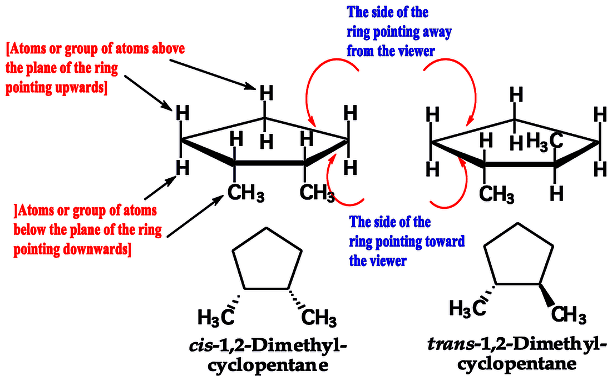
Wedge = toward you / up. Dash = away from you / down.
Question 36 of 69
A dashed bond represents a group below the plane of the ring.
True
False
True
Dashed line: below the plane of the ring. Solid line: above the plane of the ring.
Think of the dash as going behind the page.
Question 37 of 69
In cis-1,2-dimethylcyclopentane, the two CH₃ groups are:
A. On the same side of the ring (both wedges or both dashes)
B. On opposite sides of the ring
C. On the same carbon
D. In the plane of the ring
A. On the same side of the ring (both wedges or both dashes)
cis-1,2-Dimethylcyclopentane: both CH₃ groups on the same side of the ring. trans: one above and one below.
Same idea as alkenes: cis = same side of the ring.
Question 38 of 69
In trans-1,4-dimethylcyclohexane drawn with wedge-dash bonds:
A. One CH₃ is a wedge and the other is a dash
B. Both CH₃ groups are wedges
C. Both CH₃ groups are dashes
D. Both CH₃ groups are on the same carbon
A. One CH₃ is a wedge and the other is a dash
trans-1,4-Dimethylcyclohexane has one CH₃ above and one below the ring; cis-1,4-dimethylcyclohexane has both on the same side.
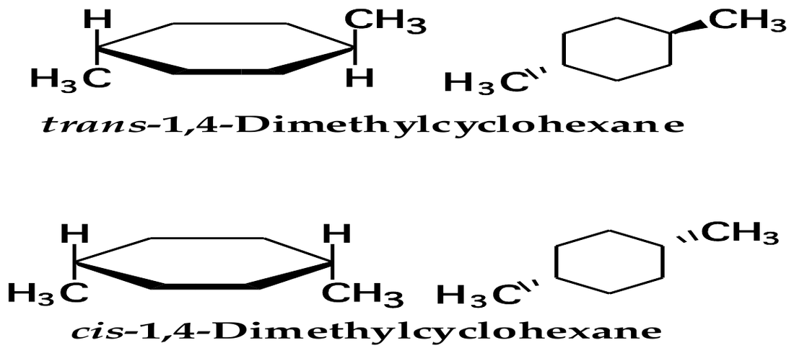
trans = one up, one down.
Question 39 of 69
The structure of trans-1-chloro-2-methylcyclopentane is:
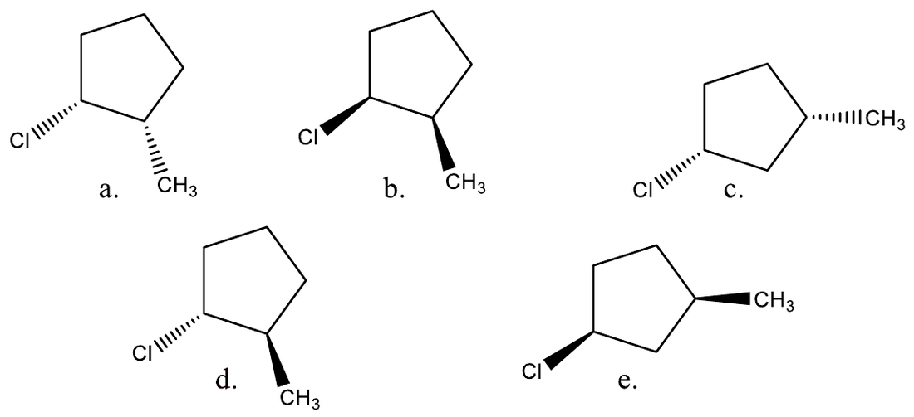
A. a
B. b
C. c
D. d
E. e
D. d
In structure d, Cl (dash, below) and CH₃ (wedge, above) are on adjacent carbons and on opposite sides of the ring. Structures a and b are cis (both dashes or both wedges); structures c and e are 1,3-compounds, not 1,2. (Not solved in the doctor's file.)
Check two things: the groups must be on neighbouring carbons (1,2) and one must be up, one down.
Question 40 of 69
1,1-Dimethylcyclohexane has cis and trans isomers.
True
False
False
Both CH₃ groups are on the same carbon, so there is no cis/trans relationship.
Cis/trans in rings needs the groups on two different ring carbons.
Question 41 of 69
If both Cl atoms in 1,2-dichlorocyclohexane are drawn with solid wedges, the compound is:
A. cis-1,2-Dichlorocyclohexane
B. trans-1,2-Dichlorocyclohexane
C. 1,1-Dichlorocyclohexane
D. Not a geometric isomer
A. cis-1,2-Dichlorocyclohexane
Both groups above the ring means the same side, which is cis.
Two wedges = cis; one wedge and one dash = trans.
Question 42 of 69
Cyclic compounds show geometric isomerism because:
A. The ring prevents free rotation about its C–C bonds
B. All rings contain a double bond
C. Rings always contain a chiral carbon
D. Rings have different molecular formulas
A. The ring prevents free rotation about its C–C bonds
The ring is rigid: its C–C bonds cannot rotate freely, so groups stay above or below the ring.
A ring locks the bonds just like a double bond does.
Question 43 of 69
1,3-Dimethylcyclobutane can exist as cis and trans isomers.
True
False
True
The two CH₃ groups are on different ring carbons, so they can be on the same side (cis) or opposite sides (trans).
Two substituents on two different ring carbons, so cis and trans are possible.
4. Conformations of Open-Chain Compounds
14 questions
Question 44 of 69
Which of the following is NOT a projection formula used to show conformations?
Lewis structures show electrons, not 3D arrangement.
Question 45 of 69
Which projection looks straight down the C–C bond, with the front carbon as a point and the back carbon as a circle?
A. Newman projection
B. Sawhorse projection
C. Fischer projection
D. Ball-and-stick formula
A. Newman projection
This is the Newman projection (iii in the figure).
Newman = looking down the bond end-on, front bonds meet at the centre, back bonds come from the circle.
Question 46 of 69
Which conformer of butane is the most stable?
A. Anti (staggered) conformer
B. Gauche conformer
C. Eclipsed conformer (CH₃ eclipsing H)
D. Conformer with eclipsed methyl groups
A. Anti (staggered) conformer
In the figure, conformer 1, the staggered “anti” conformer, has the lowest energy and is the most stable.
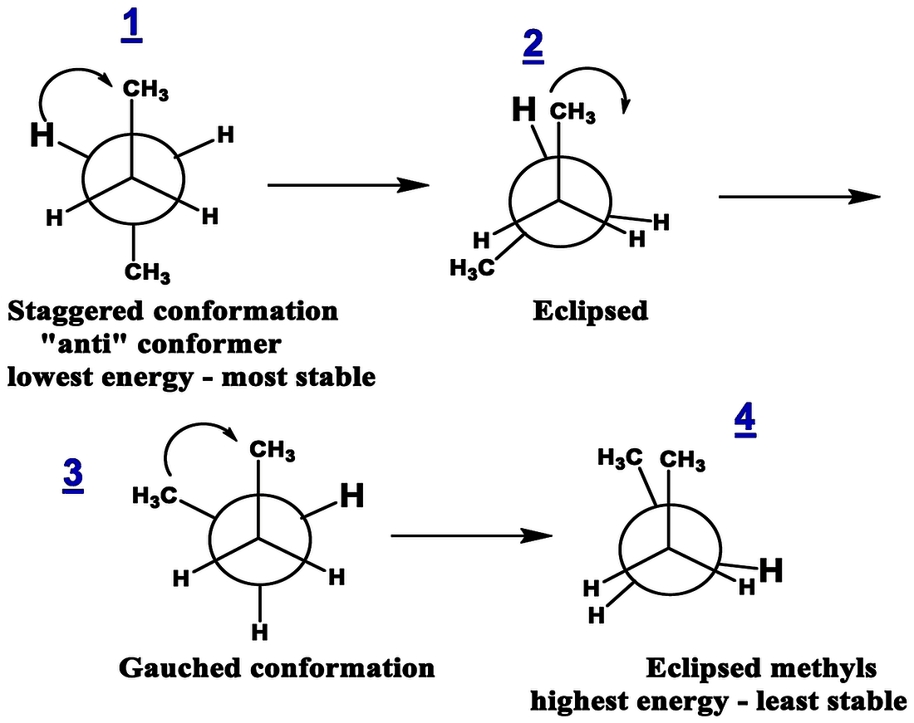
In the anti conformer the two big CH₃ groups are as far apart as possible (180°).
Question 47 of 69
Which conformer of butane is the least stable?
A. Anti (staggered)
B. Gauche
C. Eclipsed (CH₃ eclipsing H)
D. Eclipsed methyls (CH₃ eclipsing CH₃)
D. Eclipsed methyls (CH₃ eclipsing CH₃)
In the figure, conformer 4, with eclipsed methyl groups, has the highest energy and is the least stable.
The two CH₃ groups are directly lined up, so they crowd each other the most.
Question 48 of 69
What is the order of stability of the butane conformers?
A. Anti > gauche > eclipsed > eclipsed methyls
B. Gauche > anti > eclipsed > eclipsed methyls
C. Eclipsed methyls > eclipsed > gauche > anti
D. Anti > eclipsed > gauche > eclipsed methyls
A. Anti > gauche > eclipsed > eclipsed methyls
The numbers 1–4 are the butane conformers in the figure (each curved arrow is a 60° rotation to the next one). Order of energy: 4 > 2 > 3 > 1. Order of stability: 1 > 3 > 2 > 4 (anti > gauche > eclipsed > eclipsed methyls).
Staggered beats eclipsed. Within each pair, the one with the CH₃ groups further apart is more stable.
Question 49 of 69
In the gauche conformation of butane, the two CH₃ groups are:
A. 60° apart (staggered)
B. 180° apart
C. 0° apart (eclipsed)
D. 120° apart (eclipsed)
A. 60° apart (staggered)
Gauche: staggered conformation with the CH₃ groups 60° apart (shown in the figure). Anti: 180° apart.
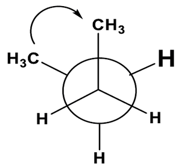
Gauche = staggered but the methyls are neighbours.
Question 50 of 69
What is the major difference between configuration and conformation?
A. Configuration is fixed in space; conformation changes by rotation about single bonds
B. Conformation is fixed in space; configuration changes by rotation
C. They are the same thing
D. Configuration depends only on the molecular formula
A. Configuration is fixed in space; conformation changes by rotation about single bonds
The major difference is in the arrangement of groups around the bonds in space: in configuration the arrangement is fixed, but in conformation it assumes different arrangements in space.
To change a configuration you must break bonds; a conformation changes just by rotating.
Question 51 of 69
Conformers can be interconverted by rotation about single bonds without breaking any bonds.
True
False
True
Conformations are different arrangements produced by rotation about single (sigma) bonds.
Rotation only, no bond breaking, so they interconvert easily.
Question 52 of 69
Arrange the following Newman projections in order of decreasing energy (highest to lowest):
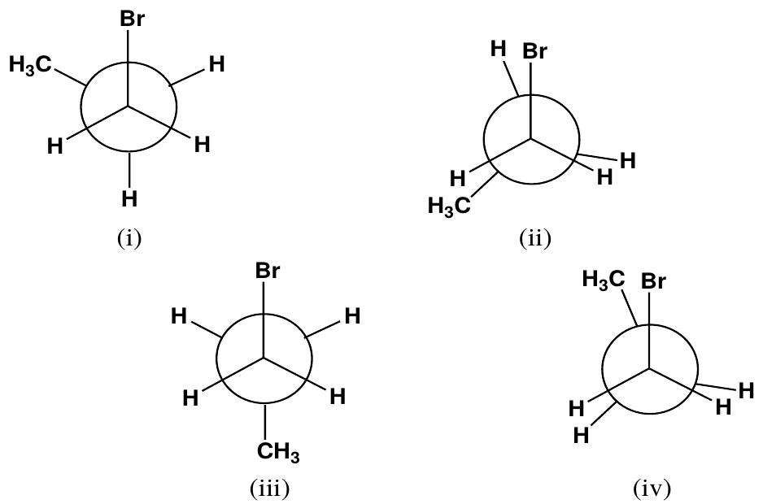
A. (i) > (ii) > (iii) > (iv)
B. (iii) > (i) > (ii) > (iv)
C. (ii) > (iii) > (iv) > (i)
D. (iii) > (iv) > (ii) > (i)
E. (iv) > (ii) > (i) > (iii)
E. (iv) > (ii) > (i) > (iii)
(iv) Br eclipsing CH₃ (highest) > (ii) eclipsed, Br and CH₃ each eclipsing H > (i) gauche, Br and CH₃ 60° apart > (iii) anti, Br and CH₃ 180° apart (lowest).
Same pattern as butane, using Br and CH₃ as the two big groups.
Question 53 of 69
For the compound shown, looking along the central CH₂–CH₂ bond, which conformer has the highest energy?
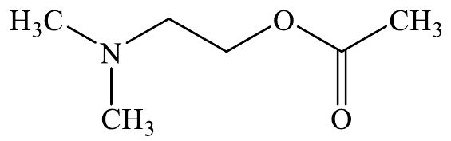
A. The eclipsed conformer with –N(CH₃)₂ and –OCOCH₃ eclipsing each other
B. The anti staggered conformer
C. The gauche staggered conformer
D. All conformers have the same energy
A. The eclipsed conformer with –N(CH₃)₂ and –OCOCH₃ eclipsing each other
As for butane: the conformer in which the two large groups (–N(CH₃)₂ and –OC(O)CH₃) are eclipsed has the highest energy; staggered conformers are lower in energy. (Not solved in the doctor's file.)
Biggest groups lined up = most crowding = highest energy.
Question 54 of 69
In ethane, the staggered conformation is more stable than the eclipsed conformation.
True
False
True
In the staggered conformation the C–H bonds are as far apart as possible, so it has lower energy.
Staggered = less crowding.
Question 55 of 69
In the anti conformation of butane, the angle between the two CH₃ groups is:
A. 180°
B. 60°
C. 0°
D. 120°
A. 180°
Anti means directly opposite: 180°.
Anti = opposite.
Question 56 of 69
Eclipsed conformations are higher in energy because:
A. Groups on adjacent carbons are closest together, causing strain
B. A bond is broken in the eclipsed form
C. They have a different molecular formula
D. They contain a double bond
A. Groups on adjacent carbons are closest together, causing strain
In eclipsed conformations the bonds on the front and back carbons line up, so the groups repel each other more.
Lined-up groups push against each other, so the energy is higher.
Question 57 of 69
Which projection shows the C–C bond drawn at an angle, as if viewed from above and to the side?
A. Sawhorse projection
B. Newman projection
C. Fischer projection
D. Lewis formula
A. Sawhorse projection
The sawhorse projection shows the C–C bond at an angle with all bonds visible.
Sawhorse looks like a little sawhorse (trestle) on its side.
5. Conformations of Cyclohexane
12 questions
Question 58 of 69
Which is the most stable conformation of cyclohexane?
A. Chair
B. Boat
C. Planar hexagon
D. Fully eclipsed
A. Chair
The chair conformation is more stable than the boat conformation. In the figure, “≡” means the flat hexagon and the chair drawing are the same molecule, and the double arrow shows the chair and boat interconverting.
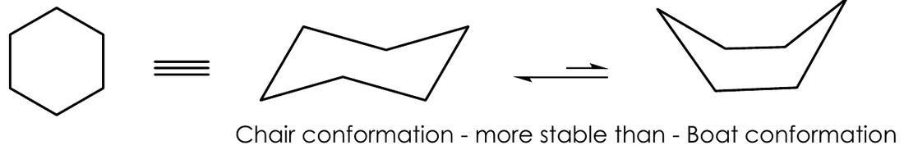
In the chair all C–H bonds are staggered; the boat has eclipsed bonds and crowded “flagpole” H atoms.
Question 59 of 69
The boat conformation of cyclohexane is more stable than the chair conformation.
True
False
False
The chair conformation is more stable than the boat conformation. In the figure, “≡” means the flat hexagon and the chair drawing are the same molecule, and the double arrow shows the chair and boat interconverting.
Chair = most stable.
Question 60 of 69
In the chair conformation, axial bonds are:
A. Parallel to the ring axis, pointing straight up or straight down
B. Roughly in the plane of the ring, pointing outward
C. Always pointing up
D. Always pointing down
A. Parallel to the ring axis, pointing straight up or straight down
Axial (a) bonds point straight up or down; equatorial (e) bonds point outward around the “equator” of the ring.
Axial = vertical, like an axis. Equatorial = around the sides.
Question 61 of 69
In chair cyclohexane, each carbon carries:
A. One axial and one equatorial hydrogen
B. Two axial hydrogens
C. Two equatorial hydrogens
D. Only one hydrogen
A. One axial and one equatorial hydrogen
Each carbon has one axial (a) and one equatorial (e) H.
6 carbons, so 6 axial H and 6 equatorial H.
Question 62 of 69
Axial positions alternate up and down around the cyclohexane chair.
True
False
True
The axial H atoms alternate: up above the plane, then down below the plane, on neighbouring carbons.
Up, down, up, down around the ring.
Question 63 of 69
Which two atoms or groups are in the axial position and above the plane of the molecule?
A. Cl and CH₃
B. CN and NH₂
C. Br and Cl
D. NH₂ and OH
E. CN and Cl
E. CN and Cl
CN and Cl are drawn with vertical bonds pointing up (axial, up). NH₂ and CH₃ are axial but point down; C₂H₅, OH, Br and H are equatorial. (Not solved in the doctor's file.)
Axial bonds are the vertical lines. Pick the vertical lines that point up.
Question 64 of 69
In the chair conformations of trans-1,2-dimethylcyclohexane, the two CH₃ groups are:
A. Both axial (a,a) in one conformer and both equatorial (e,e) in the other
B. Always one axial and one equatorial
C. Always both axial
D. Always both equatorial
A. Both axial (a,a) in one conformer and both equatorial (e,e) in the other
trans-1,2-Dimethylcyclohexane interconverts by ring flip between the a,a and the e,e conformers.
trans-1,2 = one up, one down. On adjacent carbons that means a,a or e,e.
Question 65 of 69
Which chair conformer of trans-1,2-dimethylcyclohexane is more stable?
A. e,e (both CH₃ equatorial)
B. a,a (both CH₃ axial)
C. Both are equally stable
D. The boat conformer
A. e,e (both CH₃ equatorial)
The e,e conformer is more stable, because axial CH₃ groups are crowded by the axial H atoms on the same side of the ring (1,3-diaxial interactions). (Not solved in the doctor's file.)
Big groups prefer equatorial, where they have more room.
Question 66 of 69
In methylcyclohexane, the more stable chair has the CH₃ group:
A. Equatorial
B. Axial
C. In the plane of the ring
D. It does not matter
A. Equatorial
Equatorial substituents avoid crowding with axial H atoms.
Large groups go equatorial.
Question 67 of 69
In the chair conformations of cis-1,2-dimethylcyclohexane, the two CH₃ groups are:
A. One axial and one equatorial (a,e)
B. Both axial
C. Both equatorial
D. Both in the plane of the ring
A. One axial and one equatorial (a,e)
cis-1,2 means both on the same side; on adjacent carbons this is always a,e (or e,a after ring flip).
cis-1,2 = a,e; trans-1,2 = a,a or e,e.
Question 68 of 69
When cyclohexane undergoes a ring flip, axial positions become equatorial.
True
False
True
A ring flip converts one chair into the other: every axial bond becomes equatorial and every equatorial bond becomes axial.
Ring flip swaps a and e.
Question 69 of 69
How many axial hydrogen atoms are there in chair cyclohexane?
A. 6
B. 12
C. 3
D. 0
A. 6
Cyclohexane has 12 H atoms: 6 axial and 6 equatorial.
One axial H on each of the 6 carbons.
Lecture 3Assignment of Configuration
65 questions
1. Absolute Configuration & Priority Rules
11 questions
Question 1 of 65
What does “absolute configuration” around a chiral carbon mean?
A. The order of arrangement in space of the four groups around the chiral carbon
B. The number of chiral carbons in the molecule
C. The direction in which the compound rotates plane-polarized light
D. The molecular formula of the compound
A. The order of arrangement in space of the four groups around the chiral carbon
Absolute configuration is the order of arrangement in space of the four groups around a chiral carbon atom.
It describes the real 3D arrangement of the four groups, named (R) or (S).
Question 2 of 65
What is the first step in assigning (R) or (S) to a chiral carbon?
A. Rank the four groups attached to the chiral carbon by the Cahn-Ingold-Prelog sequence rules
B. Draw a curved arrow from group 1 to group 3
C. Measure the optical rotation
D. Count the number of chiral carbons
A. Rank the four groups attached to the chiral carbon by the Cahn-Ingold-Prelog sequence rules
First identify the chiral carbon and rank its four groups by priority (Cahn-Ingold-Prelog rules). Then orient the molecule with the lowest-priority group in the rear, draw a curved arrow from priority 1 → 2 → 3, and read it: clockwise = (R), counterclockwise = (S).
You cannot draw the arrow until you know which group is 1, 2, 3 and 4.
Question 3 of 65
With the lowest-priority group pointing away from the viewer, the arrow 1 → 2 → 3 goes clockwise. The configuration is:
Priority is by atomic number: I (53) > Br (35) > Cl (17) > S (16) > F (9) > O (8) > N (7) > C (6) > H (1).
Bigger atomic number = higher priority. Note S (16) is above F (9).
Question 5 of 65
By rule 2, which group has the highest priority?
A. –CH₂SCH₂CH₃
B. –CH₂SH
C. –CH₂OCH₃
D. –CH₂NH₂
A. –CH₂SCH₂CH₃
When the first atoms tie, compare the next atoms and work outward: –CH₂SCH₂CH₃ > –CH₂SCH₃ > –CH₂SH > –CH₂OCH₃ > –CH₂OH > –CH₂NH₂.
All start with CH₂. Next comes S, O or N: S wins. Between the S groups, the one with more carbon after S wins.
Question 6 of 65
By rule 3, how are the atoms of a double or triple bond treated?
A. As duplicated (double bond) or triplicated (triple bond) atoms
B. They are ignored
C. They always get the lowest priority
D. They are counted only once
A. As duplicated (double bond) or triplicated (triple bond) atoms
If a double or triple bond is present, the atoms involved are treated as being duplicated or triplicated, respectively (as in geometric isomerism).
In C=O the carbon is treated as bonded to two O atoms; in C≡N the carbon is treated as bonded to three N atoms.
Question 7 of 65
The priority order of the groups on the chiral carbon of 1-bromo-1-chloroethane is:
A. Br > Cl > CH₃ > H
B. Cl > Br > CH₃ > H
C. CH₃ > Br > Cl > H
D. Br > CH₃ > Cl > H
A. Br > Cl > CH₃ > H
By atomic number of the attached atoms: Br (35) > Cl (17) > C (6) > H (1).
Just compare atomic numbers of the atoms touching the chiral carbon.
Question 8 of 65
Which group has the highest priority?
A. –CH₂SH
B. –CH₂OH
C. –CH(CH₃)₂
D. –C(CH₃)₃
A. –CH₂SH
All start with C. Next atoms: –CH₂SH (S,H,H), –CH₂OH (O,H,H), –CH(CH₃)₂ (C,C,H), –C(CH₃)₃ (C,C,C). S is the highest atom, so –CH₂SH wins.
Compare the highest atom in each set first: one S beats any number of C atoms.
Question 9 of 65
Rank the groups from highest to lowest priority: –OH, –NH₂, –CH₃, –H
A. –OH > –NH₂ > –CH₃ > –H
B. –NH₂ > –OH > –CH₃ > –H
C. –CH₃ > –OH > –NH₂ > –H
D. –H > –CH₃ > –NH₂ > –OH
A. –OH > –NH₂ > –CH₃ > –H
O (8) > N (7) > C (6) > H (1).
Atomic number decides: O, then N, then C, then H.
Question 10 of 65
–CN has a higher priority than –CH₂NH₂.
True
False
True
–C≡N counts as (N,N,N), while –CH₂NH₂ is (N,H,H). The first atoms tie (C), and at the next atoms N,N,N beats N,H,H, so –CN has the higher priority.
The triple bond gives three N atoms, which beats one N.
Question 11 of 65
The (R)/(S) label of a compound tells you the direction in which it rotates plane-polarized light.
True
False
False
(R)/(S) describes the arrangement in space; (+)/(−) is measured with a polarimeter. An (R) compound can be (+) or (−).
R/S comes from drawing; +/− comes from experiment. They are not linked.
2. Drawing Enantiomers: Wedge-Dash & Fischer
11 questions
Question 12 of 65
Which structure is the mirror image of 2-bromobutane (a)?
A.
B.
C.
D. None of these
A.
The mirror image (b) has every group reflected: CH₃ stays on top, while H, Br and CH₃CH₂ swap sides. In the figure, the tall rectangle between (a) and (b) is the mirror.
Imagine a mirror standing next to the molecule: left becomes right, but wedges stay wedges and dashes stay dashes.
Question 13 of 65
Structures (a) and (b) of 1-bromo-1-chloroethane shown below are:
A. Enantiomers (non-superimposable mirror images)
B. The same molecule
C. Diastereomers
D. Structural isomers
A. Enantiomers (non-superimposable mirror images)
(b) is the mirror image of (a). Since the carbon is chiral (Br, Cl, CH₃, H), they are a pair of enantiomers. The figure shows the same pair drawn as 3D (wedge-dash) structures and as Fischer projections.
A chiral molecule and its mirror image are enantiomers.
Question 14 of 65
Which Fischer projection represents 2-bromobutane (a)?
A.
B.
A.
Turn (a) so that CH₃ and H point back (vertical) and CH₃CH₂ and Br point toward you (horizontal), then flatten it.
Horizontal = wedges toward you, vertical = dashes away. Swapping Br and CH₃CH₂ would give the mirror image (b).
Question 15 of 65
In a Fischer projection, the vertical bonds point ______ the viewer and the horizontal bonds point ______ the viewer.
A. away from … towards
B. towards … away from
C. towards … towards
D. away from … away from
A. away from … towards
The vertical bonds are pointing away from the viewer, while the horizontal bonds are pointing towards the viewer.
Think of a bow tie: the horizontal arms come out to hug you.
Question 16 of 65
A Fischer projection of a chiral carbon has the lowest-priority group on a horizontal bond. To assign (R)/(S) properly, the doctor's method says:
A. Swap it with a vertical group, then swap the other two groups to keep the same configuration
B. Simply ignore the lowest-priority group
C. Rotate the whole drawing by 90°
D. Swap only one pair of groups
A. Swap it with a vertical group, then swap the other two groups to keep the same configuration
The lowest-priority group is placed on a vertical bond. If it is not, interchange it with a group that is, then interchange the other two groups to restore the original configuration.
One swap makes the enantiomer; a second swap brings you back to the original.
Question 17 of 65
Interchanging only one pair of groups around a chiral carbon gives:
A. The enantiomer (mirror image)
B. The same molecule
C. A meso compound
D. A structural isomer
A. The enantiomer (mirror image)
When only one pair of groups is interchanged, the result is the enantiomer. When both pairs (all groups) or three groups are interchanged, the result is identical to the original.
One swap = mirror image. Two swaps = back to the same molecule.
Question 18 of 65
What is the configuration of the 2-butanol shown?
A. (R)
B. (S)
B. (S)
Priority: OH > CH₂CH₃ > CH₃ > H. H is on the dash (away), and OH → CH₂CH₃ → CH₃ runs counterclockwise, so (S)-butan-2-ol.
H is already at the back, so read the arrow directly: counterclockwise = S.
Question 19 of 65
Which Fischer projection matches the 2-butanol shown?
A.
B.
C.
A.
Rotate the molecule so OH and H are vertical (away) and CH₃CH₂ and CH₃ are horizontal (toward you). In the figure, “≡” means the three drawings are the same molecule: wedge-dash, 3D cross and Fischer projection.
Keep OH on top, H at the bottom, CH₃CH₂ on the left and CH₃ on the right. Swapping any one pair of groups gives the mirror image instead.
Question 20 of 65
Which statement about a Fischer projection is correct?
A. The chiral carbon is at the crossing point of the vertical and horizontal lines
B. All four bonds lie in the plane of the paper
C. The horizontal bonds point away from the viewer
D. It can only be used for achiral molecules
A. The chiral carbon is at the crossing point of the vertical and horizontal lines
The chiral carbon sits where the lines cross; the horizontal bonds come toward the viewer and the vertical bonds go away.
The cross point is the carbon; it is not drawn as “C”.
Question 21 of 65
A solid wedge in a wedge-dash structure represents a bond pointing toward the viewer.
True
False
True
Solid wedge = in front of the plane (toward the viewer); dash = behind the plane.
Wedge comes out of the page; dash goes behind it.
Question 22 of 65
Interchanging two pairs of groups in a Fischer projection gives the enantiomer.
True
False
False
Two swaps restore the original configuration, so the result is the same molecule.
Even number of swaps = same; odd number = enantiomer.
3. Assigning (R) and (S)
13 questions
Question 23 of 65
What are the configurations of the two 2-bromobutane enantiomers (a) and (b)?
A. (a) is (R) and (b) is (S)
B. (a) is (S) and (b) is (R)
C. Both are (R)
D. Both are (S)
A. (a) is (R) and (b) is (S)
Priority: Br > CH₂CH₃ > CH₃ > H. With H at the bottom (vertical, away), Br → CH₂CH₃ → CH₃ is clockwise in (a) → (R)-2-bromobutane, and counterclockwise in (b) → (S)-2-bromobutane.
Enantiomers always have opposite labels: if one is R, its mirror image is S.
Question 24 of 65
What are the configurations of the 1-bromo-1-chloroethane enantiomers (a) and (b)?
A. (a) is (R) and (b) is (S)
B. (a) is (S) and (b) is (R)
C. Both are (R)
D. Neither is chiral
A. (a) is (R) and (b) is (S)
Priority: Br > Cl > CH₃ > H. H is at the bottom; the arrow Br → Cl → CH₃ is clockwise in (a) (R) and counterclockwise in (b) (S).
Same method: H at the back, then follow 1 → 2 → 3.
Question 25 of 65
Assign the configuration at C-6, C-7 and C-11 of the compound shown:
A. (6R, 7R, 11R)
B. (6S, 7S, 11R)
C. (6R, 7S, 11S)
D. (6S, 7R, 11S)
A. (6R, 7R, 11R)
C-6: S > N > C-7 > H; H is on the dash, and the arrow is clockwise → (6R). C-7: N (of NH) > C-6 (S,N,H) > C-8 (O,O,N) > H; H points back, arrow clockwise → (7R). C-11: NH₂ > C=O (O,O,N) > phenyl (C,C,C) > H; H points back, arrow clockwise → (11R). Answer: (6R, 7R, 11R).
At each chiral carbon, rank the four groups by atomic number of the attached atoms (S > O > N > C > H), keep H at the back, then read the arrow.
Question 26 of 65
What is the configuration of molecule (I)?
A. (2R, 3S)
B. (2S, 3R)
C. (2R, 3R)
D. (2S, 3S)
A. (2R, 3S)
C-2: NH₂ > COOH > C-3 > H → (R). C-3: OH > CH₂OH > C-2 > H → (S). So (I) is (2R, 3S).
H is on a horizontal bond (toward you), so read the arrow and then reverse it.
Question 27 of 65
Assign the configurations of I and II and comment on their relationship:
A. (2R, 3S), I and II are diastereomers
B. (2S, 3S), I and II are meso forms
C. (2S, 3S), I and II are the same molecule
D. (2R, 3S), I and II are enantiomers
E. (2R, 3S), I and II are the same molecule
E. (2R, 3S), I and II are the same molecule
C-2: NH₂ > COOH > C-3 > H → (R). C-3: OH > CH₂OH > C-2 > H → (S). Both I and II are (2R, 3S), so they are the same molecule (not enantiomers or diastereomers).
Same labels at every chiral carbon = same molecule. Enantiomers would have all labels opposite.
Question 28 of 65
The absolute configuration of the molecule shown is:
A. (R)
B. (S)
B. (S)
Rank the groups: CH₂OH > CN > CH₂NH₂ > H (CH₂OH (O,H,H) beats CN (N,N,N) because O beats N; CN (N,N,N) beats CH₂NH₂ (N,H,H)). CH₂OH → CN → CH₂NH₂ appears clockwise, but H is on a horizontal bond (toward the viewer), so reverse it: (S).
Compare the highest atom first: one O beats three N atoms. H on the side means flip the answer.
Question 29 of 65
Which two compounds are the same compound?
A. (a) and (d)
B. (a) and (b)
C. (c) and (d)
D. (a) and (c)
A. (a) and (d)
Enantiomers: (a) and (b); (c) and (d). Same compound: (a) and (d); (b) and (c).
(a) is (S), (b) is (R), (c) is (R), (d) is (S). Same label = same compound.
Question 30 of 65
Compounds (c) and (d) shown below are:
A. Mirror images (enantiomers)
B. Identical
C. Diastereomers
D. Structural isomers
A. Mirror images (enantiomers)
(c) and (d) are enantiomers: (c) is (R) and (d) is (S).
Opposite labels at the only chiral carbon, so they are non-superimposable mirror images.
Question 31 of 65
What is the configuration of the molecule shown (glyceraldehyde)?
A. (R)
B. (S)
A. (R)
Priority: OH > CHO > CH₂OH > H. OH → CHO → CH₂OH appears counterclockwise, but H is horizontal (toward the viewer), so reverse it: (R).
CHO (O,O,H) beats CH₂OH (O,H,H). H on the side means flip the answer.
Question 32 of 65
What is the configuration of the molecule shown (alanine)?
A. (R)
B. (S)
B. (S)
Priority: NH₂ > COOH > CH₃ > H. NH₂ → COOH → CH₃ appears clockwise, but H is horizontal, so reverse it: (S).
H on a horizontal bond: read the arrow, then flip R and S.
Question 33 of 65
What is the configuration of the molecule shown?
A. (R)
B. (S)
B. (S)
Priority: Br > Cl > CH₃ > H. H is on a vertical bond (away), so read directly: Br (right) → Cl (left, over the top) → CH₃ (bottom) is counterclockwise → (S).
H is already at the back (vertical), so no flipping is needed.
Question 34 of 65
If the lowest-priority group points toward the viewer and the arrow 1 → 2 → 3 is clockwise, the configuration is:
A. (R)
B. (S)
B. (S)
Looking from the wrong side reverses the direction, so clockwise becomes (S).
H toward you = reverse the answer.
Question 35 of 65
The enantiomer of a (2R, 3S) compound is:
A. (2S, 3R)
B. (2R, 3S)
C. (2R, 3R)
D. (2S, 3S)
A. (2S, 3R)
A mirror image inverts every chiral carbon.
Enantiomer = flip every label.
4. Stereoisomers, Meso Forms & Relationships
14 questions
Question 36 of 65
How many different stereoisomers exist for cyclohexane-1,3-diol?
A. 3
B. 4
C. 2
D. 8
A. 3
2 similar chiral carbons → 2² = 4 drawn, but (a) and (b) are the same meso compound → 1 meso form + 1 pair of enantiomers = 3.
Two identical chiral carbons → expect a meso form, so one of the four drawings is a repeat.
Question 37 of 65
cis-Cyclohexane-1,3-diol, (1R,3S), shown below as (a) and its mirror image (b), is:
A. A meso compound
B. A pair of enantiomers
C. Optically active
D. A structural isomer of the trans form
A. A meso compound
(a) and (b) are the same compound, the meso form, because it has an internal plane of symmetry (the dashed line in the figure), so it is optically inactive.
The dashed line in the drawing is the mirror plane cutting the molecule into two matching halves.
Question 38 of 65
In cyclohexane-1,3-diol, the trans isomer (c) and the meso form are:
A. Diastereomers
B. Enantiomers
C. The same compound
D. Structural isomers
A. Diastereomers
The meso form is (1R,3S) and (c) is (1R,3R): they are stereoisomers but not mirror images, so they are diastereomers.
Stereoisomers that are not mirror images are diastereomers.
Question 39 of 65
How many stereoisomers exist for 3-methylcyclohexan-1-ol?
A. 4
B. 3
C. 2
D. 8
A. 4
The two chiral carbons (C-1 and C-3) are dissimilar, so there is no meso form: 2² = 4 (two pairs of enantiomers).
Different chiral carbons (one has OH, one has CH₃) → no symmetry → the full 2ⁿ.
Question 40 of 65
In 3-methylcyclohexan-1-ol, isomers (a) and (c) are:
A. Diastereomers
B. Enantiomers
C. The same compound
D. Meso forms
A. Diastereomers
(a) is (1R,3S) and (c) is (1R,3R). Only C-3 differs, so they are not mirror images: they are diastereomers.
Only one chiral carbon changed between (a) and (c), so they are not mirror images.
Question 41 of 65
Molecules (I) and (II) are:
A. The same
B. Diastereomers
C. Enantiomers
D. Constitutional isomers
E. Optically inactive isomers
A. The same
The two Fischer projections are identical: every group is in the same position, so they are the same molecule (2R, 3S). (Not solved in the doctor's file.)
Compare group by group: nothing has moved.
Question 42 of 65
How many chiral carbons are present in the compound shown?
A. 4
B. 3
C. 5
D. 2
A. 4
4 chiral carbons.
One on the side-chain carbon attached to the phenyl ring, two on the four-membered ring, and one on the five-membered ring carrying COOH.
Question 43 of 65
Pair A is best classified as:
A. Geometric isomers (diastereomers)
B. Enantiomers
C. The same molecule
D. Structural isomers
A. Geometric isomers (diastereomers)
A: geometric isomers (cis/trans), which are diastereomers.
In A one ring has the OH groups on opposite sides (trans) and the other on the same side (cis).
Question 44 of 65
Pair B is best classified as:
A. Enantiomers
B. Diastereomers
C. The same molecule
D. Geometric isomers
A. Enantiomers
B: (S) and (R) → enantiomers.
One chiral carbon with opposite labels → mirror images.
Question 45 of 65
Pairs C and D are, respectively:
A. The same molecule; enantiomers
B. Enantiomers; the same molecule
C. Diastereomers; enantiomers
D. The same molecule; diastereomers
A. The same molecule; enantiomers
C: both (2R, 3S) → same molecule. D: (2R, 3R) and (2S, 3S) → enantiomers.
All labels flipped = enantiomers; all labels equal = same.
Question 46 of 65
In the classification of isomers, geometric isomers are a type of:
A. Diastereomers
B. Enantiomers
C. Structural isomers
D. Conformers
A. Diastereomers
Isomers → structural (constitutional) isomers and stereoisomers. Stereoisomers → enantiomers and diastereomers; geometric isomers are also diastereomers.
cis and trans are stereoisomers that are not mirror images, so they are diastereomers.
Question 47 of 65
How many different stereoisomers does cyclohexane-1,2-diol have?
A. 3
B. 4
C. 2
D. 1
A. 3
Two similar chiral carbons: cis is meso, trans is a pair of enantiomers → 3.
Same pattern as cyclohexane-1,3-diol.
Question 48 of 65
How many stereoisomers does 2-methylcyclohexan-1-ol have?
A. 4
B. 3
C. 2
D. 6
A. 4
C-1 and C-2 are dissimilar chiral carbons → 2² = 4, no meso form.
Different groups on the two chiral carbons → no meso.
Question 49 of 65
Diastereomers have different physical properties.
True
False
True
Unlike enantiomers, diastereomers have different melting points, boiling points and solubilities.
This is why diastereomers can be separated by ordinary methods.
5. Racemic Mixtures & Resolution
16 questions
Question 50 of 65
A racemic mixture (racemate) is:
A. A mixture of equal parts of a pair of enantiomers
B. A mixture of two diastereomers
C. A pure single enantiomer
D. A meso compound
A. A mixture of equal parts of a pair of enantiomers
A mixture of equal parts of any pair of enantiomers is called a racemate, racemic mixture or racemic modification. It may be indicated by the prefix (±).
50% R + 50% S = racemic.
Question 51 of 65
Why is a racemic mixture optically inactive?
A. The rotation by each enantiomer is cancelled by the equal and opposite rotation of the other
B. It contains no chiral carbon
C. It has an internal plane of symmetry
D. It absorbs plane-polarized light
A. The rotation by each enantiomer is cancelled by the equal and opposite rotation of the other
A racemate does not rotate plane-polarized light because the rotation by each enantiomer is cancelled by the equal and opposite rotation of the other.
Example: glyceraldehyde, (+8.7°) + (−8.7°) = 0°.
Question 52 of 65
Resolution of a racemic mixture means:
A. The physical separation of a racemic mixture into its pure enantiomers
B. Converting one enantiomer into the other
C. Measuring the specific rotation
D. Mixing two enantiomers in equal amounts
A. The physical separation of a racemic mixture into its pure enantiomers
Resolution (resolving): the physical separation of a racemic mixture into its pure enantiomers.
Resolve = separate the R and S partners.
Question 53 of 65
Which of the following is NOT one of the three main methods of resolving a racemate?
A. Simple distillation
B. Formation of diastereomeric products
C. Enzymatic (biological) resolution
D. Chromatography (HPLC) with a chiral stationary phase
A. Simple distillation
The three methods: (i) formation of diastereomeric products; (ii) enzymatic or biological means; (iii) chromatographic separation on HPLC with chiral stationary phases (expensive and tedious).
Enantiomers have the same boiling point, so distillation cannot separate them.
Question 54 of 65
In the resolution of racemic trans-2-phenylcyclohexyl chloroacetate, the enzyme lipase:
A. Hydrolyzes the ester of only one enantiomer (the levorotatory one)
B. Hydrolyzes both enantiomers equally
C. Converts the trans ester into the cis ester
D. Does not react with either ester
A. Hydrolyzes the ester of only one enantiomer (the levorotatory one)
Lipase can only hydrolyze the ester from one enantiomer, giving the levorotatory trans alcohol (2). The dextrorotatory trans ester (3) remains and is later hydrolyzed with NaOH to give the second optically active alcohol (4).Note: 4 is an alcohol (–OH); the word “acid” in the doctor's label under 4 should read “alcohol”.
Enzymes are chiral, so they “fit” only one enantiomer, like a right hand in a right glove.
Question 55 of 65
A racemic (R/S) carboxylic acid is resolved by reacting it with a pure (S)-amine. The products are:
A. A pair of diastereomeric salts that can be separated by recrystallization
B. A pair of enantiomeric salts that cannot be separated
C. A single meso salt
D. A racemic amine
A. A pair of diastereomeric salts that can be separated by recrystallization
The (R,S)- and (S,S)-salts are diastereomers with different physical properties, so they can be separated by ordinary physical means such as recrystallization; HCl then gives back the pure (R)- and (S)-acids. In the figure, the curly brackets group the two salts formed together.
Adding one pure chiral partner turns enantiomers into diastereomers, which are separable.
Question 56 of 65
Which term best describes an enantiomer?
A. Optically active
B. Diastereomer
C. Structural isomer
D. Optically inactive
A. Optically active
A single enantiomer rotates plane-polarized light, so it is optically active. (Not solved in the doctor's file.)
Each enantiomer alone rotates light; only their 50:50 mixture is inactive.
Question 57 of 65
A prochiral molecule is:
A. A molecule that can undergo a chemical reaction to give a chiral compound
B. A molecule with two chiral carbons
C. A racemic mixture
D. A meso compound
A. A molecule that can undergo a chemical reaction to give a chiral compound
Prochirality: a molecule can undergo a chemical reaction to give a chiral compound. A prochiral molecule is such a molecule.
Pro = before: it is not chiral yet, but one reaction makes it chiral.
Question 58 of 65
A levorotatory enantiomer rotates plane-polarized light:
A. To the left (counterclockwise), shown as (−)
B. To the right (clockwise), shown as (+)
C. It does not rotate light
D. In both directions
A. To the left (counterclockwise), shown as (−)
Dextrorotatory (Latin dexter, right): rotates to the right (clockwise), (+). Levorotatory (Latin levo, left): rotates to the left (counterclockwise), (−).
Levo = left.
Question 59 of 65
Synthesis gave racemic (R/S)-naproxen ethyl ester. Which method gives the active (S)-naproxen?
A. Enzymatic hydrolysis with an esterase, which selectively hydrolyzes the (S)-ester
B. Simple distillation of the racemic ester
C. Heating the ester to convert (R) into (S)
D. Recrystallization of the racemic ester alone
A. Enzymatic hydrolysis with an esterase, which selectively hydrolyzes the (S)-ester
The esterase selectively hydrolyzes the ethyl ester of (S)-naproxen to the (S)-naproxen sodium salt (with NaOH), while the (R)-ester is not hydrolyzed and is separated. Treating the salt with HCl gives pure (S)-naproxen. The (R)-ester can be hydrolyzed with NaOH in ethanol, then HCl, to give (R)-naproxen.
The enzyme acts on only one enantiomer, so the two end up as different compounds (salt vs ester) that are easy to separate.
Question 60 of 65
In the naproxen resolution, how is pure (S)-naproxen (the acid) obtained from its sodium salt?
A. By treating the sodium salt with HCl
B. By heating with NaOH
C. By adding more esterase
D. By distillation
A. By treating the sodium salt with HCl
The pure (S)-naproxen (acid) is obtained by treating the sodium salt with an inorganic acid, HCl.
The acid turns the –COO⁻ Na⁺ back into –COOH.
Question 61 of 65
The wedge-dash structure of (S)-naproxen is shown below. Which statement is correct?
A. H is on a wedge (toward the viewer), and the arrow COOH → aryl → CH₃ appears clockwise, so the configuration is (S)
B. H is on a dash, so the arrow is read directly as (R)
C. The molecule has no chiral carbon
D. CH₃ has the highest priority
A. H is on a wedge (toward the viewer), and the arrow COOH → aryl → CH₃ appears clockwise, so the configuration is (S)
Priority: COOH > naphthyl (aryl) > CH₃ > H. With H pointing toward the viewer, the apparent clockwise arrow is reversed → (S).
H toward you = reverse the direction you see.
Question 62 of 65
A 50:50 mixture of (+)-glyceraldehyde ([α] = +8.7°) and (−)-glyceraldehyde ([α] = −8.7°) has an observed rotation of:
A. 0°
B. +8.7°
C. −8.7°
D. +17.4°
A. 0°
Equal and opposite rotations cancel.
+8.7 − 8.7 = 0.
Question 63 of 65
Enantiomers can be separated by simple recrystallization because they have different solubilities.
True
False
False
Enantiomers have identical physical properties (except their rotation of plane-polarized light), so they must first be converted into diastereomers, or separated by enzymes or chiral HPLC.
Same properties = no ordinary separation.
Question 64 of 65
A mixture of 75% (R) and 25% (S) of the same compound is a racemic mixture.
True
False
False
A racemic mixture must contain exactly equal amounts of the two enantiomers.
Racemic = 50:50 only.
Question 65 of 65
The prefix (±) in a name indicates:
A. A racemic mixture
B. A meso compound
C. A pure dextrorotatory enantiomer
D. A structural isomer
A. A racemic mixture
A racemic mixture may be indicated by the prefix (±).
(+) and (−) together = (±).
Lecture 4Alkanes
71 questions
1. Hydrocarbons & Classes of Alkanes
14 questions
Question 1 of 71
Which of the following is NOT a source of alkanes?
A. Seawater
B. Natural gas
C. Petroleum
D. Coal
A. Seawater
Three sources of alkanes: natural gas, petroleum and coal.
Alkanes are fossil-fuel hydrocarbons: they come from gas, oil and coal.
Question 2 of 71
Converting coal into gaseous or liquid fuels (“synthetic fuel”) from syngas (CO + H₂) is called:
A. The Fischer–Tropsch process
B. Combustion
C. Halogenation
D. Resolution
A. The Fischer–Tropsch process
Coal gasification or liquefaction uses the Fischer–Tropsch synthesis: a collection of reactions that converts carbon monoxide and hydrogen (syngas) into gas or liquid hydrocarbons.
Fischer–Tropsch turns CO + H₂ into hydrocarbons.
Question 3 of 71
Alkanes can be classified into three classes:
A. Straight-chain, branched-chain and cyclic alkanes
B. Primary, secondary and tertiary alkanes
C. Alkenes, alkynes and aromatics
D. Gases, liquids and solids
A. Straight-chain, branched-chain and cyclic alkanes
i. Straight-chain alkanes. ii. Branched-chain alkanes. iii. Cyclic alkanes (cycloalkanes).
Look at the shape of the carbon skeleton: a line, a line with branches, or a ring.
Question 4 of 71
The following compound can be classified as a:
A. Straight-chain alkane
B. Branched alkane
C. Substituted cycloalkane
D. Cycloalkane
B. Branched alkane
It is a branched alkane: side groups (a methyl and an isopropyl group) branch off the carbon chain, and there is no ring.
Branches coming off the main chain and no ring = branched alkane.
Question 5 of 71
Alkanes are hydrocarbons that have only:
A. Single σ (sigma) bonds
B. Single α bonds
C. Single π (pi) bonds
D. Single ω bonds
A. Single σ (sigma) bonds
All C–C and C–H bonds in alkanes are single bonds, and every single bond is a sigma (σ) bond.
Single bonds are sigma bonds; pi bonds appear only in double and triple bonds.
Question 6 of 71
What is the molecular formula of the following compound?
A. C₈H₁₈
B. C₆H₁₄
C. C₈H₁₆
D. C₇H₁₆
A. C₈H₁₈
8 carbons (a 6-carbon chain + 2 methyl groups). Using CₙH₂ₙ₊₂: C₈H₁₈.
Count every corner and line end as a carbon: 8. Then H = 2(8) + 2 = 18.
Question 7 of 71
The general formula of an alkane is:
A. CₙH₂ₙ₊₂
B. CₙH₂ₙ
C. CₙH₂ₙ₋₂
D. CₙHₙ
A. CₙH₂ₙ₊₂
Alkanes: CₙH₂ₙ₊₂. Cycloalkanes and alkenes: CₙH₂ₙ. Alkynes: CₙH₂ₙ₋₂.
Open-chain and fully saturated = the most hydrogens possible: 2n + 2.
Question 8 of 71
The carbon atoms of alkanes are sp³ hybridized, tetrahedral, with bond angles of about:
A. 109.5°
B. 120°
C. 180°
D. 90°
A. 109.5°
Alkanes are tetrahedral in shape and all bond angles are approximately 109.5°.
sp³ = tetrahedral = 109.5°.
Question 9 of 71
Each member of the alkane homologous series differs from the next by:
A. A –CH₂– (methylene) group
B. A –CH₃ group
C. A C=C double bond
D. An –OH group
A. A –CH₂– (methylene) group
Each member differs from the next higher and next lower member by a –CH₂– group (methylene group). These members are called homologues.
Structural isomers: two different compounds with the same molecular formula (C₄H₁₀) but a different arrangement of atoms. They have different physical and chemical properties.
Same formula, different skeleton = structural isomers.
Question 11 of 71
The molecular formula of an alkane with 10 carbons is:
A. C₁₀H₂₂
B. C₁₀H₂₀
C. C₁₀H₁₈
D. C₁₀H₂₄
A. C₁₀H₂₂
CₙH₂ₙ₊₂ with n = 10 → H = 22.
Double the carbons, add 2.
Question 12 of 71
Cyclopentane has the same general formula as an alkene, CₙH₂ₙ.
True
False
True
Cycloalkanes are CₙH₂ₙ (C₅H₁₀ for cyclopentane), the same general formula as alkenes.
Closing a ring removes 2 H, just like a double bond does.
Question 13 of 71
Which hydrocarbon is an alkyne?
A. C₃H₄
B. C₃H₈
C. C₃H₆
D. C₄H₁₀
A. C₃H₄
Alkynes are CₙH₂ₙ₋₂: for n = 3, C₃H₄.
n = 3: alkane C₃H₈, alkene C₃H₆, alkyne C₃H₄.
Question 14 of 71
How many structural isomers does pentane (C₅H₁₂) have?
A. 3
B. 2
C. 4
D. 5
A. 3
Pentane, isopentane (2-methylbutane) and neopentane (2,2-dimethylpropane).
Straight chain, one branch, two branches on the same carbon.
2. Cycloalkanes & Ring Strain
7 questions
Question 15 of 71
Why does cyclopropane have high ring strain?
A. Its bond angles (60°) deviate strongly from 109.5°, and its hydrogens are eclipsed
B. It contains a double bond
C. It is non-planar
D. It has no hydrogens
A. Its bond angles (60°) deviate strongly from 109.5°, and its hydrogens are eclipsed
Angle strain (60° instead of 109.5°) plus torsional strain (eclipsed hydrogens) give ring strain. Cyclopropane is planar.
Squeezing 109.5° bonds into a 60° triangle is like bending a stick: it stores energy.
CH₃ at the end = primary; CH₂ in the middle = secondary.
Question 27 of 71
In methylcyclopentane, the ring carbon carrying the CH₃ group (yellow circle) is:
A. Tertiary
B. Secondary
C. Primary
D. Quaternary
A. Tertiary
The CH₃ carbon is primary, the ring CH₂ carbons are secondary, and the ring carbon carrying CH₃ is tertiary.
It is bonded to two ring carbons plus the CH₃ = three carbons.
Question 28 of 71
How many primary carbons are in 2-methylbutane?
A. 3
B. 2
C. 4
D. 1
A. 3
The three CH₃ groups are primary: C-1, the methyl branch on C-2, and C-4.
Every line end in a skeletal drawing is a CH₃ = primary carbon.
Question 29 of 71
Which compound contains a quaternary carbon?
A. 2,2-Dimethylbutane
B. 2-Methylbutane
C. Hexane
D. 3-Methylpentane
A. 2,2-Dimethylbutane
C-2 of 2,2-dimethylbutane is bonded to four carbons.
Two methyls on the same carbon of a chain → that carbon has four carbon neighbours.
Question 30 of 71
A CH₂ group inside a chain is a secondary carbon.
True
False
True
It has two carbon neighbours.
Two carbon neighbours = secondary.
4. Physical Properties of Alkanes
10 questions
Question 31 of 71
Alkanes are insoluble in water because:
A. They are non-polar and cannot form hydrogen bonds with water
B. They are ionic compounds
C. They are too heavy
D. They react with water
A. They are non-polar and cannot form hydrogen bonds with water
Alkanes are water-insoluble because they are non-polar compounds: all C–C and C–H bonds are non-polar covalent bonds, so they do not form hydrogen bonds with water molecules.
Oil and water do not mix: non-polar vs polar.
Question 32 of 71
Which statement about alkane boiling points is correct?
A. Boiling point increases with molecular weight
B. Boiling point decreases with molecular weight
C. Branched alkanes have higher boiling points than straight-chain ones
D. Alkanes have higher boiling points than most other organic compounds
A. Boiling point increases with molecular weight
Alkanes have lower boiling points than other organic compounds; boiling point increases with molecular weight and decreases with branching.
Bigger molecules = more Van der Waals attraction = higher boiling point.
Question 33 of 71
Which isomer of C₅H₁₂ has the lowest boiling point?
The most branched, most ball-shaped isomer has the least surface contact.
Question 34 of 71
Straight-chain alkanes boil higher than branched alkanes because they have:
A. More surface area and more Van der Waals interactions
B. Hydrogen bonds
C. Ionic bonds
D. Double bonds
A. More surface area and more Van der Waals interactions
Straight-chain alkanes have more surface area and more Van der Waals interactions. In the figure, (a) the ball-shaped branched molecules touch only at small points, while (b) the straight pentane chains lie side by side along their whole length.
Long chains lie side by side like pencils; balls only touch at one point.
Question 35 of 71
The only attractions between alkane molecules are:
A. London dispersion (Van der Waals) forces
B. Hydrogen bonds
C. Ionic attractions
D. Dipole–dipole forces from polar C–H bonds
A. London dispersion (Van der Waals) forces
The electronegativity difference between C (2.55) and H (2.20) is small (about 0.35; the lecture notes round it to 0.2), so the C–H bond is essentially non-polar; the only attractions are London dispersion forces, which increase with molecular size.
Non-polar molecules only have the weak “sticky” London forces.
Question 36 of 71
At room temperature, alkanes with 1–4 carbons are:
A. Gases
B. Colourless liquids
C. White waxy solids
D. Crystalline salts
A. Gases
C1–C4: gases. C5–C17: colourless liquids. C18 or more: white waxy solids (paraffin wax, candles, lubricants).
Methane to butane are fuel gases.
Question 37 of 71
The boiling points of cycloalkanes:
A. Increase as the ring size increases
B. Decrease as the ring size increases
C. Are all the same
D. Are higher than water for all rings
A. Increase as the ring size increases
Boiling points of cycloalkanes increase as ring size increases: cyclopropane −32.7 °C … cyclooctane 149 °C.
Bigger ring = bigger molecule = higher boiling point.
Question 38 of 71
Octane (C₈H₁₈) is a liquid at room temperature.
True
False
True
Alkanes with 5–17 carbons are colourless liquids.
8 carbons falls in the 5–17 range.
Question 39 of 71
Which alkane has the highest boiling point?
A. Decane
B. Hexane
C. Butane
D. Ethane
A. Decane
Boiling point increases with molecular weight; decane (C₁₀) is the largest.
Most carbons = highest boiling point.
Question 40 of 71
Paraffin wax is made of alkanes with 18 or more carbons.
True
False
True
C18 or more are white waxy solids (paraffin wax, candles).
Long chains = solids.
5. Nomenclature (IUPAC) of Alkanes
19 questions
Question 41 of 71
In an IUPAC alkane name, the suffix that shows the compound is an alkane is:
A. -ane
B. -ene
C. -yne
D. -ol
A. -ane
Name = prefix (meth-, eth-, prop-… number of carbons in the parent chain) + suffix -ane.
-ane = alkane, -ene = alkene, -yne = alkyne.
Question 42 of 71
When an alkane becomes a substituent group, its “-ane” ending is replaced by:
A. -yl
B. -ol
C. -ene
D. -one
A. -yl
The "ane" suffix is replaced by "yl": methane → methyl, ethane → ethyl, propane → propyl.
Methane → methyl, ethane → ethyl.
Question 43 of 71
The group (CH₃)₂CH– is called:
A. Isopropyl
B. Propyl
C. Isobutyl
D. tert-Butyl
A. Isopropyl
(CH₃)₂CH– is isopropyl; CH₃CH₂CH₂– is propyl; (CH₃)₂CHCH₂– is isobutyl; (CH₃)₃C– is tert-butyl. In the figure, the red box is the isopropyl group; the line leaving the box on the right is the bond to the rest of the molecule.
Iso-propyl attaches through its middle carbon, giving a Y shape.
Question 44 of 71
What is the first step in naming a branched alkane?
A. Find and name the longest continuous carbon chain
B. List the groups in alphabetical order
C. Number the chain from either end
D. Count the hydrogens
A. Find and name the longest continuous carbon chain
1. Find the longest continuous chain. 2. Identify the groups attached. 3. Number from the end nearest a substituent. 4. Give each substituent a number. 5. List groups alphabetically. 6. di-, tri-, tetra- are not used when alphabetizing.
The parent chain gives the last part of the name, so find it first.
Question 45 of 71
What is the name of this alkane (find the longest chain)?
A. 2,3,5-Trimethylheptane
B. 3,5,6-Trimethylheptane
C. 2,3,5-Trimethylhexane
D. Trimethyloctane
A. 2,3,5-Trimethylheptane
Longest chain: 7 carbons (heptane). Numbering from the end nearest a branch gives methyls at C-2, C-3 and C-5: 2,3,5-trimethylheptane.
Number from the right so the first branch is at C-2, not C-3.
Question 46 of 71
What is the name of this alkane (find the longest chain)?
A. 3-Methylheptane
B. 2-Ethylhexane
C. 5-Methylheptane
D. 3-Methylhexane
A. 3-Methylheptane
The longest chain turns up into the ethyl branch: 7 carbons, with a methyl at C-3 → 3-methylheptane.
An “ethyl” on C-2 is really part of a longer chain. Always follow the longest path.
Question 47 of 71
Give the correct IUPAC name for this compound:
A. 4-Isopropyl-2,5-dimethylheptane
B. 4-Isopropyl-3,6-dimethylheptane
C. 2,5-Dimethyl-4-isopropylheptane
D. 3-Ethyl-4-isopropyl-2-methylpentane
A. 4-Isopropyl-2,5-dimethylheptane
Parent: heptane. Numbering from the right gives {2,4,5} instead of {3,4,6}. Groups in alphabetical order (isopropyl before methyl; di- is ignored): 4-isopropyl-2,5-dimethylheptane.
Alphabetize by i (isopropyl) and m (methyl), not by d of “dimethyl”.
Question 48 of 71
Give the correct IUPAC name for this compound:
A. 1-Chloro-2-isopropylcyclopentane
B. 2-Chloro-1-isopropylcyclopentane
C. 1-Isopropyl-2-chlorocyclopentane
D. Chloroisopropylpentane
A. 1-Chloro-2-isopropylcyclopentane
With more than one substituent on a ring, the one first in alphabetical order (chloro) gets C-1; isopropyl is then at C-2: 1-chloro-2-isopropylcyclopentane.
c (chloro) comes before i (isopropyl), so chloro gets number 1.
Question 49 of 71
When numbering, if two different substituents are equally close to the two ends, which gets the lower number?
A. The one cited first in alphabetical order
B. The larger group
C. The smaller group
D. The one on the right
A. The one cited first in alphabetical order
Number from the end nearest a substituent; if two or more different substituents are present, they are listed alphabetically and the first cited one gets the lower number. In the example, ethyl and methyl are equally far from the two ends; ethyl comes first alphabetically, so it gets C-3 and methyl gets C-5 (the drawing with the tick is correct).
Tie → alphabet decides.
Question 50 of 71
Which name is correct for ClCH₂–CH(CH₃)–CH(Br)–CH₃?
A. 3-Bromo-1-chloro-2-methylbutane
B. 2-Bromo-4-chloro-3-methylbutane
C. 1-Chloro-3-bromo-2-methylbutane
D. 3-Bromo-2-methyl-1-chlorobutane
A. 3-Bromo-1-chloro-2-methylbutane
Groups are listed alphabetically (bromo, chloro, methyl); numbering from the Cl end gives the lowest numbers {1,2,3}: 3-bromo-1-chloro-2-methylbutane.
Alphabetical order of names: b, c, m.
Question 51 of 71
The prefixes di-, tri-, tetra- are considered when alphabetizing substituents.
True
False
False
di-, tri-, tetra-, etc. are not considered when alphabetizing: e.g. 3-ethyl-6-methyloctane, 2,4,5-trimethyloctane.
Alphabetize by the group name itself (methyl), not by the counting prefix (tri).
Question 52 of 71
What is the correct name of this compound?
A. 1-Isopropyl-3-methylcyclopentane
B. 1-Isopropyl-4-methylcyclopentane
C. 1-Methyl-3-isopropylcyclopentane
D. 3-Isopropyl-1-methylcyclopentane
A. 1-Isopropyl-3-methylcyclopentane
Cycloalkanes: prefix cyclo-; with more than one substituent, the one with alphabetical priority (isopropyl) is at C-1, and the others get the lowest numbers: 1-isopropyl-3-methylcyclopentane, not 1-isopropyl-4-methylcyclopentane.
Go around the ring the short way: 1 → 3, not 1 → 4.
Question 53 of 71
What is the correct IUPAC name for the molecule shown?
A. 1-Isopropyl-3-methylcyclopropane
B. trans-1-Isopropyl-3-methylcyclopropane
C. cis-1-Isopropyl-3-methylcyclopropane
D. (1S,3S)-1-Isopropyl-3-methylcyclopentane
E. (1S,3R)-1-Isopropyl-3-methylcyclopentane
D. (1S,3S)-1-Isopropyl-3-methylcyclopentane
The ring has 5 carbons (cyclopentane, not cyclopropane). Isopropyl (wedge) at C-1 and methyl (dash) at C-3; assigning each centre by CIP rules gives (1S,3S)-1-isopropyl-3-methylcyclopentane. (Wedge = bond pointing towards you; dashes = bond pointing away.)
First count the ring (5 corners). Then use the R/S rules from Lecture 3 on each chiral carbon.
Question 54 of 71
When only one substituent is on a cycloalkane, a number is needed in the name.
True
False
False
If only one substituent is present, no number is needed (e.g. methylcyclohexane).
With one group, every ring carbon is the same, so “1-” adds nothing.
Question 55 of 71
Name this alkane:
A. 2,2-Dimethylbutane
B. 2-Dimethylbutane
C. 3,3-Dimethylbutane
D. 2-Ethylpropane
A. 2,2-Dimethylbutane
Parent butane (4 C); two methyls on C-2. Each group needs its own number: 2,2-dimethylbutane.
Two groups on the same carbon → repeat the number: 2,2-.
Question 56 of 71
Name this alkane:
A. 3-Ethyl-2-methylpentane
B. 2-Methyl-3-ethylpentane
C. 3-Ethyl-4-methylpentane
D. 2-Ethyl-3-methylpentane
A. 3-Ethyl-2-methylpentane
Parent pentane; methyl at C-2 and ethyl at C-3 (numbering from the end nearest a branch). Alphabetical: ethyl before methyl → 3-ethyl-2-methylpentane.
e (ethyl) comes before m (methyl).
Question 57 of 71
Name this compound:
A. Methylcyclohexane
B. 1-Methylcyclohexane
C. Methylhexane
D. Cyclohexylmethane
A. Methylcyclohexane
One substituent on the ring → no number needed: methylcyclohexane.
Single substituent = no number.
Question 58 of 71
Name this compound:
A. 1,3-Dimethylcyclohexane
B. 1,5-Dimethylcyclohexane
C. 2,4-Dimethylcyclohexane
D. 1,3-Methylcyclohexane
A. 1,3-Dimethylcyclohexane
Number the ring to give the lowest numbers: 1,3 (not 1,5); “di” shows two methyl groups.
Start at one methyl and go the short way to the other.
Question 59 of 71
The tert-butyl group is:
A. (CH₃)₃C–
B. (CH₃)₂CHCH₂–
C. CH₃CH₂CH₂CH₂–
D. CH₃CH₂CH(CH₃)–
A. (CH₃)₃C–
tert-Butyl (1,1-dimethylethyl) attaches through a carbon bonded to three CH₃ groups (the free line on the right of the C).
tert = tertiary attachment point (a carbon with three other carbons).
6. Reactions of Alkanes
12 questions
Question 60 of 71
The two main chemical reactions of alkanes are:
A. Combustion and free-radical halogenation
B. Hydration and hydrolysis
C. Acid–base neutralization and reduction
D. Esterification and saponification
A. Combustion and free-radical halogenation
i. Combustion reactions. ii. Halogenation reactions via a free-radical reaction.
Alkanes burn, and they swap H for a halogen in light.
Question 61 of 71
Alkanes generally do not react with:
A. Acids, bases, oxidizing agents and reducing agents
B. Oxygen (on burning)
C. Chlorine in sunlight
D. Bromine in light
A. Acids, bases, oxidizing agents and reducing agents
Alkanes have strong, non-polar C–C and C–H bonds with no charges, so they do not react with most acids, bases, oxidizing or reducing agents.
No polar spots means nothing for ionic reagents to attack.
Question 62 of 71
The complete combustion of methane gives:
A. CO₂ + 2 H₂O + heat
B. CH₃Cl + HCl
C. C + 2 H₂
D. CH₃OH
A. CO₂ + 2 H₂O + heat
CH₄ + 2 O₂ → CO₂ + 2 H₂O + heat (212.8 kcal/mol). Alkanes react with oxygen in an exothermic reaction to produce energy.
Burning any hydrocarbon fully gives carbon dioxide and water.
Question 63 of 71
What is the balanced equation for the complete combustion of hexane (C₆H₁₄)?
A. A mixture of 1-chloropropane and 2-chloropropane
B. Only 1-chloropropane
C. Only 2-chloropropane
D. Propene
A. A mixture of 1-chloropropane and 2-chloropropane
Longer alkanes can produce a mixture of two products: 1-chloropropane (n-propyl chloride) and 2-chloropropane (isopropyl chloride).
Propane has two kinds of H (end and middle), so Cl can go to either place.
Question 67 of 71
Bromination of cyclopentane in light gives a single product because:
A. All the hydrogens in cyclopentane are equivalent
B. Cyclopentane has only one hydrogen
C. Bromine only reacts with rings
D. The product is a racemic mixture
A. All the hydrogens in cyclopentane are equivalent
Cycloalkanes have equivalent hydrogens, so a single product (bromocyclopentane, cyclopentyl bromide) is produced.
Every corner of the ring is identical, so replacing any H gives the same molecule.
Question 68 of 71
Combustion of an alkane is an oxidation reaction.
True
False
True
Combustion burns and destroys the entire molecule; it is an oxidation reaction.
Reaction with oxygen = oxidation.
Question 69 of 71
Halogenation of alkanes is an addition reaction.
True
False
False
It is a substitution reaction: a C–H bond is broken and H is replaced by a halogen.
Alkanes have no double bonds to add to, so they substitute.
Question 70 of 71
Balance: C₃H₈ + __ O₂ → 3 CO₂ + 4 H₂O
A. 5
B. 3
C. 4
D. 7
A. 5
Oxygen atoms on the right: 6 + 4 = 10 → 5 O₂.
Balance C, then H, then O last.
Question 71 of 71
The free-radical chlorination of ethane in light gives mainly:
A. CH₃CH₂Cl + HCl
B. CH₂=CH₂ + HCl
C. CO₂ + H₂O
D. No reaction
A. CH₃CH₂Cl + HCl
One H is substituted by Cl: chloroethane + HCl. All six H atoms of ethane are equivalent, so one monochloro product forms.
Same as methane: swap one H for Cl.
Lecture 5Alkenes
82 questions
1. Structure & Classification of Alkenes
14 questions
Question 1 of 82
What is the general formula of an alkene?
A. CₙH₂ₙ
B. CₙH₂ₙ₊₂
C. CₙH₂ₙ₋₂
D. CₙHₙ
A. CₙH₂ₙ
Alkenes (one C=C): CₙH₂ₙ.
One double bond removes 2 H from the alkane formula CₙH₂ₙ₊₂.
Question 2 of 82
Which molecular formula represents an alkene?
A. C₅H₁₀
B. C₆H₈
C. C₅H₁₂
D. C₆H₆
A. C₅H₁₀
C₅H₁₀ fits CₙH₂ₙ (n = 5).
C₅H₁₂ is an alkane; C₆H₈ and C₆H₆ have too few H for one double bond.
Question 3 of 82
In alkenes, the σ bond of the C=C is formed between two ______ hybridized carbons.
A. sp² – sp²
B. sp – sp²
C. sp² – sp³
D. sp³ – sp
A. sp² – sp²
Both carbons of a C=C are sp² hybridized (trigonal planar, 120°).
Double-bond carbons are always sp².
Question 4 of 82
Which statement about the C=C double bond is correct?
A. It is planar with 120° angles, and rotation about it is restricted
B. It rotates freely like a C–C single bond
C. It is longer than a C–C single bond
D. The π bond is less reactive than the σ bond
A. It is planar with 120° angles, and rotation about it is restricted
Alkenes: planar, trigonal, bond angle 120°; rotation around the double bond is restricted; C=C is shorter than C–C; π bonds are more reactive than σ bonds.
The π bond locks the two carbons flat.
Question 5 of 82
Why is rotation about the C=C double bond restricted?
A. The π bond (side-by-side p overlap) would have to break, and it keeps the C=C planar
B. The σ bond is too strong
C. The carbons are sp³
D. Hydrogen bonding holds it in place
A. The π bond (side-by-side p overlap) would have to break, and it keeps the C=C planar
The π bond prevents rotation because of the planar character of the C=C double bond.
Twisting would pull the two p orbitals apart and break the π bond.
Question 6 of 82
Does isomerism occur in alkenes?
A. Yes — cis/trans (E/Z) geometric isomerism
B. No, never
C. Only optical isomerism
D. Only in alkenes with triple bonds
A. Yes — cis/trans (E/Z) geometric isomerism
Yes (cis & trans, E & Z). No rotation around the double bond (without breaking the π bond) results in geometric isomers, which cannot be interconverted.
Locked double bond → groups stay on one side or the other.
Question 7 of 82
cis- and trans-isomers have:
A. The same molecular formula but different physical and chemical properties (and possibly different pharmacological action)
B. Different molecular formulas
C. Identical properties
D. Different order of bonded atoms
A. The same molecular formula but different physical and chemical properties (and possibly different pharmacological action)
cis/trans isomers differ only in the arrangement of atoms in space; they have the same formula but different properties, and may differ in pharmacological action.
Different shapes → different properties.
Question 8 of 82
Alkenes with more than one double bond are classified into three types:
A. Cumulated, conjugated and non-conjugated (isolated)
B. Primary, secondary and tertiary
C. Cis, trans and meso
D. Terminal, internal and cyclic
A. Cumulated, conjugated and non-conjugated (isolated)
i. Cumulated (C=C=C). ii. Conjugated (C=C–C=C, alternating). iii. Non-conjugated / isolated (double bonds separated by two or more single bonds).
Look at how many single bonds separate the double bonds: 0, 1 or more.
Question 9 of 82
The following compound can be classified as:
A. Non-conjugated
B. Conjugated
C. Cumulated
D. Aromatic
A. Non-conjugated
Non-conjugated: in cyclohexa-1,4-diene the two C=C are separated on each side by a CH₂ group (two single bonds), so they are isolated.
Between the double bonds sits a CH₂ → isolated.
Question 10 of 82
Which of the following is a conjugated alkene?
A. Structure c
B. Structure a
C. Structure b
D. Structure d
A. Structure c
Structure c (fulvene): the exocyclic C=CH₂ and the two ring C=C bonds alternate with single bonds. a has one double bond; b (1,4-diene) and d (limonene) have isolated double bonds. (Not solved in the doctor's file.)
Conjugated = double, single, double in a row.
Question 11 of 82
CH₂=C=CH₂ has the special name:
A. Allene
B. Vinyl
C. Allyl
D. Butadiene
A. Allene
CH₂=C=CH₂ (a cumulated diene) has the special name “allene”.
Two double bonds on the same carbon = cumulated = allene.
Question 12 of 82
Buta-1,3-diene (CH₂=CH–CH=CH₂) is a conjugated diene.
True
False
True
Its two C=C bonds are separated by exactly one single bond.
Double–single–double = conjugated.
Question 13 of 82
Penta-1,4-diene (CH₂=CH–CH₂–CH=CH₂) is:
A. Non-conjugated (isolated)
B. Conjugated
C. Cumulated
D. An alkyne
A. Non-conjugated (isolated)
A CH₂ separates the double bonds.
Two single bonds between the double bonds → isolated.
Question 14 of 82
The molecular formula of cyclohexene is C₆H₁₀, the same general formula as an alkyne.
True
False
True
Each ring or double bond removes 2 H: one ring + one C=C gives CₙH₂ₙ₋₂.
Ring + double bond = two “degrees of unsaturation”.
2. Nomenclature of Alkenes
18 questions
Question 15 of 82
Select the main chain for naming an alkene:
A. The longest chain that includes both carbons of the double bond
B. The longest chain even if it skips the double bond
C. The chain with the most branches
D. Any chain of six carbons
A. The longest chain that includes both carbons of the double bond
The ending -ene designates C=C (-diene, -triene for more). Select the longest chain containing the double bond, and number from the end nearest the double bond.
The double bond must be in the parent chain.
Question 16 of 82
The doctor's sheet writes CH₃–CH₂=CH₂–CH₃ (it should read CH₃–CH=CH–CH₃). Its IUPAC name is:
A. 2-Butene (but-2-ene)
B. 1-Butene
C. Butane
D. 2-Butyne
A. 2-Butene (but-2-ene)
2-Butene. Note: the formula as printed has a typo — a carbon in a double bond cannot carry CH₂ and still have 4 bonds; the intended structure is CH₃–CH=CH–CH₃.
Four carbons, double bond starting at C-2.
Question 17 of 82
What is the IUPAC name of this compound?
A. 3-Bromo-1,3-pentadiene (3-bromopenta-1,3-diene)
B. 3-Bromo-2,4-pentadiene
C. 2-Bromo-1,3-pentadiene
D. 3-Bromo-1-pentene
A. 3-Bromo-1,3-pentadiene (3-bromopenta-1,3-diene)
3-Bromo-1,3-pentadiene: number from the CH₂= end to give the double bonds 1 and 3; Br on C-3.
Lowest numbers for the double bonds first.
Question 18 of 82
What is the IUPAC name of this compound?
A. 4-Methylcyclohexene (4-methyl-1-cyclohexene)
B. 3-Methylcyclohexene
C. 1-Methylcyclohexene
D. 4-Methylcyclohexane
A. 4-Methylcyclohexene (4-methyl-1-cyclohexene)
Ring carbons of the C=C are C-1 and C-2; continuing round gives the CH₃ at C-4: 4-methyl-1-cyclohexene.
Start numbering through the double bond, then reach the substituent as soon as possible.
Question 19 of 82
What is the IUPAC name of this compound?
A. 4-Methyl-2-pentene (4-methylpent-2-ene)
B. 2-Methyl-3-pentene
C. 4-Methyl-3-pentene
D. 2-Methyl-2-pentene
A. 4-Methyl-2-pentene (4-methylpent-2-ene)
4-Methyl-2-pentene: number from the end nearest the double bond (C-2), methyl at C-4.
Double bond gets priority in numbering over the methyl.
Question 20 of 82
Which structure is 1-bromo-3-heptene?
A.
B.
C.
A.
Br on C-1 and C=C between C-3 and C-4 of a 7-carbon chain.
Count 7 carbons; Br at one end, double bond starting at C-3.
Question 21 of 82
Which structure is 3-ethyl-1,4-cyclohexadiene?
A.
B.
C.
A.
A six-membered ring with double bonds at C1=C2 and C4=C5, and an ethyl group on C-3 (between them).
Find the ring with two isolated double bonds and an ethyl.
Question 22 of 82
What is the IUPAC name of this molecule?
A. 5-Bromo-2-methyl-5-hexen-3-ol (5-bromo-2-methylhex-5-en-3-ol)
B. 2-Bromo-5-methyl-1-hexen-4-ol
C. 5-Bromo-2-methylhex-1-en-3-ol
D. 2-Bromo-5-methylhex-1-ene
A. 5-Bromo-2-methyl-5-hexen-3-ol (5-bromo-2-methylhex-5-en-3-ol)
Functional groups: double bond and alcohol. Priority in numbering: OH > double bond > triple bond. Numbering from the right gives OH at C-3: 5-bromo-2-methyl-5-hexen-3-ol. In the figure, the red numbers show this numbering (C-1 at the right-hand CH₃).
The suffix group (-ol) decides where numbering starts.
Question 23 of 82
What is the IUPAC name of this compound?
A. 4-Methylpent-3-en-2-amine
B. 2-Methylpent-2-en-4-amine
C. 4-Methylpent-2-en-3-amine
D. 2-Methylpent-3-en-4-amine
A. 4-Methylpent-3-en-2-amine
In molecules with suffix functional groups (-oic acid > -al > -one > -ol > -NH₂ > C=C > C≡C > Ph, Cl, Br, NO₂), the suffix group determines where numbering starts: NH₂ at C-2, C=C at C-3, CH₃ at C-4.
NH₂ (the -amine suffix) gets the lowest number.
Question 24 of 82
In naming a polyene, “-triene” means the chain contains:
A. Three C=C double bonds
B. Three carbons
C. Three triple bonds
D. Three substituents
A. Three C=C double bonds
Change -ane to -diene (2 double bonds), -triene (3), -tetraene (4); number the chain to give the double bonds the lowest numbers. In the figure, 1,3-butadiene has two C=C and 4-butyl-2-methyl-1,3,5-heptatriene has three. (In the figure, the carbon carrying the CH₃ is C-2 and should be drawn as C, not CH, because it is part of C=CH₂.)
di = 2, tri = 3, tetra = 4.
Question 25 of 82
If a double bond and a triple bond are equidistant from the ends of the chain:
A. The double bond receives the lower number
B. The triple bond receives the lower number
C. Either may be chosen
D. The name cannot be given
A. The double bond receives the lower number
If a double and a triple bond are equidistant from the end of the chain, the double bond receives the lowest number (e.g. but-1-en-3-yne).
Tie → “ene” before “yne”.
Question 26 of 82
What is the name of CH₃–CH=C(CH₃)–CH₂CH₃ in which the CH₃ on C-2 and the CH₂CH₃ on C-3 are on opposite sides?
A. (trans) / (E)-3-Methyl-2-pentene
B. (cis) / (Z)-3-Methyl-2-pentene
C. 2-Methyl-3-pentene
D. 3-Methylpent-1-ene
A. (trans) / (E)-3-Methyl-2-pentene
–CH₂CH₃ has higher priority than –CH₃, and CH₃ > H; the higher-priority groups are on opposite sides → (trans)/(E)-3-methyl-2-pentene. In the figure, the red boxes mark the higher-priority group on each carbon; the small numbers are the chain numbering.
Find the higher-priority group on each carbon, then compare sides.
Question 27 of 82
Cl(H)C=C(CH₃)(CH₂OH) with Cl and CH₂OH on opposite sides is named:
A. (E)-3-Chloro-2-methylprop-2-en-1-ol
B. (Z)-3-Chloro-2-methylprop-2-en-1-ol
C. 1-Chloro-2-methylprop-1-en-3-ol
D. (E)-1-Chloro-2-methylpropene
A. (E)-3-Chloro-2-methylprop-2-en-1-ol
–Cl > –H and –CH₂OH > –CH₃; opposite sides → E. The OH gets C-1: E-3-chloro-2-methyl-2-propen-1-ol. In the figure, the red boxes mark the higher-priority group on each carbon (Cl and CH₂OH).
CH₂OH beats CH₃ (O vs H at the next atom).
Question 28 of 82
Which is the vinyl group?
A. H₂C=CH– (ethenyl)
B. H₂C=CH–CH₂– (propenyl)
C. CH₃CH₂–
D. C₆H₅–
A. H₂C=CH– (ethenyl)
Vinyl group = ethenyl, H₂C=CH–; allyl group = propenyl, H₂C=CH–CH₂–. The wavy line marks where the group is attached to the rest of the molecule.
Vinyl is attached directly at the double-bond carbon; allyl has one CH₂ in between.
Question 29 of 82
In cycloalkenes, numbering starts:
A. At the carbons of the C=C double bond (C-1 and C-2)
B. At the substituent
C. At any carbon
D. Opposite the double bond
A. At the carbons of the C=C double bond (C-1 and C-2)
Start numbering the ring from the carbons bearing the C=C double bond, e.g. 3-methylcyclopent-1-ene, 4-isopropyl-1-methylcyclohex-1-ene.
The double bond is always between C-1 and C-2 in a ring.
Question 30 of 82
The IUPAC name of CH₂=CH–CH₂–CH₃ is:
A. 1-Butene (but-1-ene)
B. 2-Butene
C. 3-Butene
D. Butane
A. 1-Butene (but-1-ene)
Number from the end nearest the double bond: C-1.
Never 3-butene: number from the closer end.
Question 31 of 82
Allyl chloride has the IUPAC name:
A. 3-Chloropropene
B. 1-Chloropropene
C. Vinyl chloride
D. 2-Chloropropene
A. 3-Chloropropene
H₂C=CH–CH₂Cl: the Cl is on C-3.
Allyl = CH₂ next to the double bond.
Question 32 of 82
Name: CH₃–CH=CH–CH=CH₂
A. 1,3-Pentadiene (penta-1,3-diene)
B. 2,4-Pentadiene
C. 1,3-Pentene
D. Pent-1-yne
A. 1,3-Pentadiene (penta-1,3-diene)
Number from the CH₂= end: double bonds at 1 and 3.
Lowest set of numbers for the double bonds.
3. Physical Properties & C–C vs C=C
5 questions
Question 33 of 82
Compare C–C and C=C: which pair is correct?
A. C–C: bond angle 109.5°, 1.54 Å; C=C: bond angle 120°, 1.34 Å
B. C–C: 120°, 1.34 Å; C=C: 109.5°, 1.54 Å
C. Both 109.5°
D. C=C is longer than C–C
A. C–C: bond angle 109.5°, 1.54 Å; C=C: bond angle 120°, 1.34 Å
How many atoms are attached to each carbon of a C=C?
A. 3
B. 4
C. 2
D. 1
A. 3
sp² carbons have 3 attached atoms (trigonal planar); sp³ carbons of C–C have 4.
Double bond counts as one connection.
Question 35 of 82
Which statement about the physical properties of alkenes is correct?
A. They are non-polar, insoluble in water and less dense than water
B. They are very soluble in water
C. They form hydrogen bonds with each other
D. They are ionic solids
A. They are non-polar, insoluble in water and less dense than water
Alkenes are non-polar (only dispersion forces), with properties like alkanes of similar skeletons: less dense than water, soluble in non-polar solvents, insoluble in water (hydrophobic).
Like alkanes: oil-like.
Question 36 of 82
The C=C bond (1.34 Å) is shorter than the C–C bond (1.54 Å).
True
False
True
More shared electrons pull the carbons closer.
More bonds → shorter.
Question 37 of 82
The only attractive forces between alkene molecules are dispersion (Van der Waals) forces.
True
False
True
Alkenes are non-polar hydrocarbons.
No polar groups → only London forces.
4. Addition Reactions & Markovnikov's Rule
17 questions
Question 38 of 82
Which is NOT one of the four types of addition reactions of alkenes listed?
A. Addition of NaNH₂
B. Addition of halogens
C. Addition of water (H₂O)
D. Addition of borane (BH₃)
A. Addition of NaNH₂
i. Addition of halogens. ii. Addition of water. iii. Addition of acids. iv. Addition of borane (BH₃).
NaNH₂ is a base used with terminal alkynes, not an addition reagent for alkenes.
Question 39 of 82
When a symmetric reagent (e.g. Br₂) adds to a symmetric alkene:
A. Only one product is produced
B. Two products always form
C. No reaction occurs
D. A racemic ketone forms
A. Only one product is produced
If the alkene and/or reagent is symmetric, only one product is produced.
Both ends are the same, so it does not matter which way it adds.
Question 40 of 82
2-Butene reacts with Cl₂ at room temperature to give:
Bromine water is decolourised when shaken with an alkene but not with an alkane. This is because:
A. Br₂ adds across the C=C double bond
B. Alkanes react faster with bromine
C. Bromine dissolves the alkene
D. The alkene oxidizes bromine to Br⁻ only
A. Br₂ adds across the C=C double bond
Addition of halogens occurs at room temperature (no light, no heat) across the C=C, so the orange-brown colour disappears; alkanes show no change. Example: 1,4-pentadiene + 2 Br₂ → 1,2,4,5-tetrabromopentane (one Br₂ per C=C).
Colour loss = test for unsaturation.
Question 42 of 82
Acid-catalyzed hydration of ethene (H₂O, H⁺) gives:
A. Ethanol
B. Ethane
C. Ethylene glycol
D. Acetaldehyde
A. Ethanol
CH₂=CH₂ + H–OH → (H⁺) CH₃CH₂OH (an alcohol).
Add H to one carbon and OH to the other.
Question 43 of 82
Cyclopentene + H₂SO₄ (H–OSO₃H) gives:
A. Cyclopentyl hydrogen sulfate
B. Cyclopentanol
C. Cyclopentane
D. Cyclopentanone
A. Cyclopentyl hydrogen sulfate
Addition of acids: H adds to one carbon and –OSO₃H to the other → cyclopentyl hydrogen sulfate.
Acid adds as H⁺ and its anion.
Question 44 of 82
Markovnikov's rule states that when an unsymmetric reagent adds to an unsymmetric alkene:
A. The electropositive part (H) adds to the C=C carbon that has more hydrogens
B. The H adds to the carbon with fewer hydrogens
C. Both parts add to the same carbon
D. No product forms
A. The electropositive part (H) adds to the C=C carbon that has more hydrogens
The electropositive part of the reagent is added to the carbon of C=C with the larger number of hydrogens.
“The rich get richer”: H goes where there are already more H.
Question 45 of 82
Propene + H₂O (H⁺) gives mainly:
A. 2-Propanol
B. 1-Propanol
C. Propane
D. Propanal
A. 2-Propanol
Markovnikov addition: H to C-1 (CH₂), OH to C-2 → 2-propanol; 1-propanol is not formed.
OH goes to the middle carbon.
Question 46 of 82
In the mechanism of HCl addition to propene, the first step forms:
A. A secondary carbocation (more stable than primary)
B. A primary carbocation
C. A carbanion
D. A free radical
A. A secondary carbocation (more stable than primary)
1. H⁺ adds to the CH₂ carbon, giving the more stable secondary carbocation CH₃–C⁺H–CH₃. 2. Cl⁻ attacks the carbocation → 2-chloropropane. Stability: 3° > 2° >> 1° > CH₃⁺.
Markovnikov's rule comes from forming the most stable carbocation.
Question 47 of 82
Complete: 2-butene + HBr →
A. 2-Bromobutane
B. 1-Bromobutane
C. 2,3-Dibromobutane
D. Butane
A. 2-Bromobutane
H adds to one C=C carbon and Br to the other → 2-bromobutane (symmetric alkene, one product). The figure shows the doctor's handwritten answer: H on one carbon, Br on the next.
Both alkene carbons are the same, so there is only one product.
Question 48 of 82
Complete: cyclopentene + H₂O (H⁺) →
A. Cyclopentanol
B. Cyclopentane-1,2-diol
C. Cyclopentanone
D. Cyclopentene oxide
A. Cyclopentanol
H and OH add across the C=C → cyclopentanol. In the doctor's handwritten answer, “HO” is the OH group.
Symmetric alkene → one alcohol.
Question 49 of 82
2-Methylpropene + H₂O (H⁺) gives:
A. 2-Methyl-2-propanol (tert-butyl alcohol)
B. 2-Methyl-1-propanol
C. Butan-2-ol
D. 2-Methylpropane
A. 2-Methyl-2-propanol (tert-butyl alcohol)
CH₃C(CH₃)=CH₂ + H–OH → (H⁺) (CH₃)₃C–OH: H adds to the CH₂, OH to the more substituted carbon (3° carbocation).
OH ends up on the carbon with two methyls.
Question 50 of 82
HBr adds to 1,3-butadiene. At low temperature the major product is:
A. The 1,2-addition product (kinetic control)
B. The 1,4-addition product (thermodynamic control)
C. Only cyclobutene
D. No reaction
A. The 1,2-addition product (kinetic control)
Protonation gives a resonance-stabilized allylic carbocation; Br⁻ attacks either end, giving a mixture of 1,2- and 1,4-addition products. Low temperature: 1,2-addition (kinetic) is major. High temperature: 1,4-addition (thermodynamic) is major.
Low T → kinetic (1,2); high T → thermodynamic (1,4).
Question 51 of 82
Catalytic hydrogenation (H₂, Pt) of 1,2-dimethylcyclopentene gives:
A. cis-1,2-Dimethylcyclopentane (cis addition)
B. trans-1,2-Dimethylcyclopentane
C. 1,2-Dimethylcyclopentanol
D. No reaction
A. cis-1,2-Dimethylcyclopentane (cis addition)
Hydrogenation catalyzed by platinum proceeds via cis addition: both H atoms add from the catalyst surface to the same face.
Both H come from the metal surface below → same side.
Question 52 of 82
Propene + HCl gives mainly 1-chloropropane.
True
False
False
Markovnikov: the main product is 2-chloropropane.
Cl goes to the middle carbon.
Question 53 of 82
Which carbocation is the most stable?
A. (CH₃)₃C⁺
B. CH₃CH₂⁺
C. CH₃⁺
D. (CH₃)₂CH⁺
A. (CH₃)₃C⁺
Tertiary > secondary > primary > methyl.
More alkyl groups stabilize the positive charge.
Question 54 of 82
1-Methylcyclohexene + HBr gives mainly:
A. 1-Bromo-1-methylcyclohexane
B. 1-Bromo-2-methylcyclohexane
C. Methylcyclohexane
D. Bromocyclohexane
A. 1-Bromo-1-methylcyclohexane
H adds to the CH carbon; Br goes to the tertiary carbon carrying CH₃.
Br goes to the more substituted carbon.
5. Hydroboration of Alkenes
6 questions
Question 55 of 82
Borane (BH₃) reacts with alkenes to form:
A. Organoboranes (R₃B), in three steps
B. Alcohols directly
C. Alkyl halides
D. Epoxides
A. Organoboranes (R₃B), in three steps
BH₃ reacts rapidly and quantitatively with alkenes; in each step one alkyl group is added until all three H atoms are replaced: R₃B (e.g. triethylborane). This is “hydroboration”.
Each B–H adds across one C=C, three times.
Question 56 of 82
Hydroboration–oxidation (BH₃/THF, then H₂O₂/OH⁻) of 1-hexene gives:
In BH₃, hydrogen behaves as a hydride (H⁻), so it binds to:
A. The more substituted carbon, giving apparent anti-Markovnikov addition
B. The less substituted carbon
C. The boron atom only
D. Neither carbon
A. The more substituted carbon, giving apparent anti-Markovnikov addition
In BH₃ the hydrogen is electronegative (H⁻), so it binds to the more substituted carbon (C⁺); boron goes to the less substituted carbon. Steric hindrance also plays a role → anti-Markovnikov.
B goes to the less crowded carbon, and later becomes OH.
Question 58 of 82
Organoboranes are oxidized to alcohols by:
A. Alkaline hydrogen peroxide (H₂O₂, OH⁻)
B. Zinc and HCl
C. Hot KMnO₄
D. H₂/Pt
A. Alkaline hydrogen peroxide (H₂O₂, OH⁻)
Organoboranes are easily oxidized to alcohols by alkaline H₂O₂; the solvent for hydroboration is THF.
H₂O₂/OH⁻ swaps B for OH.
Question 59 of 82
Hydroboration–oxidation of propene gives 1-propanol.
True
False
True
Anti-Markovnikov: OH on the terminal carbon.
Borane route → OH at the end.
Question 60 of 82
Acid-catalyzed hydration and hydroboration–oxidation of 1-butene give the same alcohol.
Which two reagents oxidize an alkene to a cis-1,2-diol?
A. Cold alkaline KMnO₄ and OsO₄
B. O₃ and H₂O₂
C. Hot KMnO₄ and HCl
D. BH₃ and H₂O₂
A. Cold alkaline KMnO₄ and OsO₄
Both MnO₄⁻ and OsO₄ add syn (cis) to the π bond to form an intermediate cyclic ester, finally giving a cis-diol (e.g. ethene → 1,2-ethanediol; cyclohexene → cis-1,2-cyclohexanediol).
Cyclic ester intermediate → both OH on the same side.
Question 63 of 82
Baeyer's test (cold alkaline KMnO₄) is positive when:
A. The purple colour disappears and a brown MnO₂ precipitate forms
B. A white precipitate forms
C. The solution turns blue
D. No change occurs
A. The purple colour disappears and a brown MnO₂ precipitate forms
Baeyer's test for unsaturation: loss of the pinkish purple colour with formation of a brown MnO₂ sludge/precipitate. It also detects easily oxidizable groups (aldehydes, alkenes, alkynes).
Purple → brown = C=C present.
Question 64 of 82
Cyclohexene → epoxide (peracid) → H₂O/OH⁻ gives:
A. trans-1,2-Cyclohexanediol
B. cis-1,2-Cyclohexanediol
C. Cyclohexanol
D. Adipic acid
A. trans-1,2-Cyclohexanediol
The peracid first gives 1,2-epoxycyclohexane; ring opening by H₂O/OH⁻ (backside attack) puts the two OH groups on opposite faces → trans-1,2-cyclohexanediol. (By contrast, cold alkaline MnO₄⁻ gives the cis-diol.)
Epoxide opening = anti → trans diol.
Question 65 of 82
If neither alkene carbon carries a hydrogen, oxidative cleavage gives:
A. A pair of ketones
B. Two aldehydes
C. Two carboxylic acids
D. CO₂ only
A. A pair of ketones
E.g. (CH₃)₂C=C(CH₃)₂ → [O] → 2 acetone (ketone molecules).
No H on the C=C carbon → each becomes C=O with two carbons → ketone.
Question 66 of 82
If each alkene carbon has a hydrogen, oxidative cleavage gives:
A. Aldehydes or carboxylic acids, depending on conditions
B. Only ketones
C. Only alcohols
D. Epoxides
A. Aldehydes or carboxylic acids, depending on conditions
CH₃CH=CHCH₃ → [O] → 2 acetaldehyde, or 2 acetic acid under stronger conditions.
H on the alkene carbon → –CHO, which can be oxidized further to –COOH.
Question 67 of 82
Hot KMnO₄ cleavage of 2-methyl-2-butene gives:
A. Acetic acid + acetone
B. Acetaldehyde + acetone
C. Two acetone molecules
D. Ethanol + acetone
A. Acetic acid + acetone
Hot KMnO₄ is vigorous and gives ketones and carboxylic acids; aldehydes are readily oxidized and are not isolated.
The CH end becomes an acid; the C(CH₃)₂ end becomes acetone.
Question 68 of 82
Under hot KMnO₄, a terminal =CH₂ carbon is converted to:
A. CO₂ (via formic and carbonic acid)
B. Formaldehyde, isolated
C. Methanol
D. Methane
A. CO₂ (via formic and carbonic acid)
The carbon of a terminal double bond with 2 H atoms is oxidized to CO₂ (HCOOH → HOCOOH → H₂O + CO₂). Methylenecyclohexane → cyclohexanone + CO₂. (The figure labels the starting material “Methylcyclohexane”; it should read methylenecyclohexane, since it has a C=CH₂.)
The =CH₂ is fully oxidized to CO₂.
Question 69 of 82
Ozonolysis of 1-butene (1. O₃, 2. Zn, H⁺) gives:
A. Formaldehyde + propanal
B. Two propanal molecules
C. Acetone + formaldehyde
D. Butanoic acid
A. Formaldehyde + propanal
CH₂=CHCH₂CH₃ → CH₂=O (formaldehyde) + O=CHCH₂CH₃ (propanal). 1-Butene gives two different aldehydes.
Cut the C=C and put =O on each end.
Question 70 of 82
In ozonolysis, the first unstable intermediate formed by cycloaddition of O₃ to the C=C is:
A. A molozonide (1,2,3-trioxolane)
B. An ozonide (1,2,4-trioxolane)
C. An epoxide
D. A diol
A. A molozonide (1,2,3-trioxolane)
The molozonide (1,2,3-trioxolane) rapidly rearranges to the ozonide (1,2,4-trioxolane); both are explosive if isolated. Hydrolysis with Zn/aqueous acid gives two carbonyl compounds. Ozonolysis locates the position of a C=C.
Molozonide first, then ozonide.
Question 71 of 82
Ozonolysis of a trisubstituted alkene with an oxidizing work-up (H₂O₂, H₃O⁺) gives:
A. A carboxylic acid and a ketone
B. An aldehyde and a ketone
C. Two ketones
D. Two alcohols
A. A carboxylic acid and a ketone
With Zn (reducing) a trisubstituted alkene gives an aldehyde + ketone; with H₂O₂ (oxidizing) the aldehyde is oxidized to a carboxylic acid: acetic acid + acetone.
H₂O₂ turns the –CHO into –COOH.
Question 72 of 82
Ozonolysis of 2-butene (O₃, then Zn/H⁺) gives:
A. Two molecules of acetaldehyde (ethanal)
B. Formaldehyde + propanal
C. Acetone
D. Acetic acid
A. Two molecules of acetaldehyde (ethanal)
Symmetric alkene → two molecules of the same aldehyde (ethanal, CH₃CHO).
Cut in the middle: two identical halves.
Question 73 of 82
OsO₄ adds to a C=C in a syn (cis) fashion.
True
False
True
Through a cyclic osmate ester, giving a cis-diol.
Cyclic intermediate → same face.
Question 74 of 82
Ozonolysis of (CH₃)₂C=CH₂ (O₃, then Zn/H⁺) gives:
A. Acetone + formaldehyde
B. Two acetone molecules
C. Acetaldehyde + formaldehyde
D. Propanal
A. Acetone + formaldehyde
The C(CH₃)₂ end becomes acetone; the =CH₂ end becomes formaldehyde.
Each half keeps its groups and gains =O.
7. Diels–Alder Reaction
8 questions
Question 75 of 82
The Diels–Alder reaction is:
A. A cycloaddition between a diene and a dienophile giving a cyclic product
B. An elimination reaction
C. A free-radical substitution
D. An oxidation with KMnO₄
A. A cycloaddition between a diene and a dienophile giving a cyclic product
It is an example of a cycloaddition reaction of dienes, which results in a cyclic product; it involves a diene and a dienophile (“diene lover”), which is an alkene or alkyne.
Diene + dienophile → six-membered ring.
Question 76 of 82
The simplest Diels–Alder reaction, 1,3-butadiene + ethylene, gives:
A. Cyclohexene
B. Cyclobutane
C. Benzene
D. Hexane
A. Cyclohexene
1,3-Butadiene + ethylene → cyclohexene, with two newly formed σ bonds and one newly formed π bond.
Four carbons + two carbons = six-membered ring.
Question 77 of 82
In a Diels–Alder reaction, how do the bonds change?
A. Three π bonds are converted to two σ bonds and one new π bond
B. Two σ bonds break
C. One π bond becomes one σ bond
D. No bonds change
A. Three π bonds are converted to two σ bonds and one new π bond
The Diels–Alder is a cycloaddition that converts three π bonds into two σ bonds and one new π bond.
Two π from the diene + one π from the dienophile.
Question 78 of 82
Diels–Alder reactions give excellent yields at moderate temperature when the dienophile has:
A. Electron-withdrawing groups (e.g. CHO, CN)
B. Electron-donating alkyl groups only
C. No double bond
D. A halogen on the diene
A. Electron-withdrawing groups (e.g. CHO, CN)
Dienophiles with electron-withdrawing groups (e.g. acrolein, tetracyanoethylene) react readily (30 °C, 0 °C).
An electron-poor dienophile reacts best with an electron-rich diene.
Question 79 of 82
1,3-Butadiene + acetylene (HC≡CH) gives:
A. Cyclohexa-1,4-diene
B. Cyclohexene
C. Benzene
D. Cyclohexa-1,3-diene
A. Cyclohexa-1,4-diene
An alkyne dienophile leaves an extra C=C in the ring: 1,4-cyclohexadiene.
The triple bond becomes a double bond in the new ring.
Question 80 of 82
A cis-dienophile (cis-NC–CH=CH–CN) reacts with butadiene. The product has the two CN groups:
A. cis (a meso compound)
B. trans (a pair of enantiomers)
C. On the same carbon
D. Randomly arranged
A. cis (a meso compound)
The Diels–Alder reaction is stereospecific: cis produces cis, trans produces trans. The cis dienophile gives the cis product (both CN wedges on the same side), a meso compound; the dashed line in the figure is its mirror plane. (A trans dienophile would give the trans product as a pair of enantiomers.)
The groups keep the relationship they had in the dienophile.
Question 81 of 82
The Diels–Alder reaction is stereospecific.
True
False
True
Groups on the dienophile keep their cis or trans relationship in the product.
cis in → cis out.
Question 82 of 82
In the Diels–Alder reaction, the diene supplies ___ carbons to the new ring.
A. 4
B. 2
C. 6
D. 3
A. 4
The diene gives 4 carbons and the dienophile 2.
4 + 2 = 6 (a [4+2] cycloaddition).
Lecture 6Alkynes
70 questions16 study guide questions
1. Structure & Classification of Alkynes
11 questions3 study guide questions
Question 1 of 70Question 1 of 16
What is the general formula for alkynes?
A. CₙH₂ₙ₋₂
B. CₙH₂ₙ₊₂
C. CₙH₂ₙ
D. CₙHₙ
A. CₙH₂ₙ₋₂
Alkynes are hydrocarbons with a triple bond: CₙH₂ₙ₋₂.
A triple bond removes 4 H compared with the alkane (CₙH₂ₙ₊₂ → CₙH₂ₙ₋₂).
Question 2 of 70Question 2 of 16
Which molecular formula represents an alkyne?
A. C₅H₈
B. C₅H₁₀
C. C₅H₁₂
D. C₆H₆
A. C₅H₈
C₅H₈ fits CₙH₂ₙ₋₂ (n = 5 → 2(5) − 2 = 8).
C₅H₁₂ is an alkane, C₅H₁₀ an alkene or cycloalkane, C₆H₆ is benzene.
Question 3 of 70Question 3 of 16
Alkynes are generally classified into two types:
A. Terminal and internal alkynes
B. Primary and secondary alkynes
C. Cyclic and aromatic alkynes
D. Cis and trans alkynes
A. Terminal and internal alkynes
i. Terminal (the triple bond is at the end of the chain, C≡C–H). ii. Internal (the triple bond is inside the chain).
Terminal = has a C≡C–H; internal = carbon groups on both sides.
Question 4 of 70
The carbons of a C≡C triple bond are:
A. sp hybridized with a linear geometry (180°)
B. sp² hybridized, trigonal planar
C. sp³ hybridized, tetrahedral
D. sp hybridized, bent at 120°
A. sp hybridized with a linear geometry (180°)
Alkynyl carbons are sp hybridized with a linear geometry (180°).
sp = two groups = straight line.
Question 5 of 70
A carbon–carbon triple bond consists of:
A. One σ bond and two π bonds
B. Three σ bonds
C. Two σ bonds and one π bond
D. Three π bonds
A. One σ bond and two π bonds
One σ bond and two π bonds; each π bond is formed by side-by-side overlap of two 2p orbitals.
Every multiple bond has exactly one σ; the extras are π.
Alkene substituents are called alkenyl groups; vinyl: –CH=CH₂.
Vinyl = CH₂=CH–.
Question 8 of 70
Why do alkynes undergo many addition reactions?
A. Both π bonds are weaker than the σ bond and are easily broken
B. The C≡C bond is the strongest bond and cannot break
C. Alkynes are ionic compounds
D. Alkynes have no electrons
A. Both π bonds are weaker than the σ bond and are easily broken
Both π bonds of a C–C triple bond are weaker than a C–C σ bond, making them much more easily broken; alkynes are also more polarizable than alkenes.
Weak π bonds open up and grab new atoms.
Question 9 of 70
HC≡C–CH₂CH₃ (1-butyne) is an internal alkyne.
True
False
False
Its triple bond is at the end of the chain (it has a C≡C–H), so it is a terminal alkyne.
A hydrogen on the triple bond = terminal.
Question 10 of 70
The molecular formula of 2-hexyne is:
A. C₆H₁₀
B. C₆H₁₂
C. C₆H₁₄
D. C₆H₈
A. C₆H₁₀
CₙH₂ₙ₋₂ with n = 6 → C₆H₁₀.
Double the carbons, subtract 2.
Question 11 of 70
The H–C≡C bond angle in acetylene is:
A. 180°
B. 120°
C. 109.5°
D. 90°
A. 180°
Both carbons are sp hybridized, so H–C≡C–H is a straight (linear) molecule with 180° bond angles.
Linear = 180°.
2. Nomenclature of Alkynes
14 questions5 study guide questions
Question 12 of 70
The first step in naming an alkyne is to find:
A. The longest chain that contains both carbons of the triple bond
B. The longest chain, even if it skips the triple bond
C. The largest substituent
D. The carbon with the most hydrogens
A. The longest chain that contains both carbons of the triple bond
[1] Find the longest chain that contains both carbons of the triple bond (change -ane to -yne). [2] Number the chain to give the triple bond the lower number, then name and number the substituents.
The triple bond must be inside the parent chain.
Question 13 of 70Question 4 of 16
Give the IUPAC name of the following compound:
A. 4-Ethyl-5,5-dimethylhept-2-yne
B. 4-Ethyl-3,3-dimethylhept-5-yne
C. 3,3-Dimethyl-4-ethylhept-5-yne
D. 4-Ethyl-5,5-dimethyl-2-hexyne
A. 4-Ethyl-5,5-dimethylhept-2-yne
4-Ethyl-5,5-dimethyl-2-heptyne OR 4-ethyl-5,5-dimethylhept-2-yne.
Number from the CH₃ next to the triple bond so the triple bond gets C-2; the 7-carbon chain runs through the ethyl branch at the top.
Question 14 of 70Question 5 of 16
Give the IUPAC name of the following compound:
A. 5-Methylhex-2-yn-1-ol
B. 2-Methylhex-4-yn-6-ol
C. 5-Methylhex-3-yn-1-ol
D. 5,5-Dimethylpent-2-yn-1-ol
A. 5-Methylhex-2-yn-1-ol
5-Methylhex-2-yn-1-ol OR 5-methyl-2-hexyn-1-ol.
The OH carbon is C-1 (the –OH gets the lowest number), so the triple bond is at C-2 and the methyl at C-5.
Question 15 of 70Question 6 of 16
Which structure is 2,5-dimethylhept-3-yne?
A.
B.
C.
A.
CH₃–CH(CH₃)–C≡C–CH(CH₃)–CH₂–CH₃: a 7-carbon chain, triple bond at C-3, methyls at C-2 and C-5.
Count 7 carbons through the triple bond; the other two structures have only a 6-carbon main chain.
Question 16 of 70Question 7 of 16
Which structure is 1-ethynyl-2-isopropylcyclohexane?
A.
B.
C.
A.
A cyclohexane ring carrying an ethynyl group (–C≡CH) at C-1 and an isopropyl group at C-2.
Ring = cyclohexane; ethynyl = –C≡CH; isopropyl = Y-shaped branch.
Question 17 of 70Question 8 of 16
The doctor's answer key names the structure below “3-ethyl-4-methylhept-3-en-5-yne”. Which statement is correct?
A. It is a 7-carbon chain with one C=C and one C≡C (an enyne), carrying an ethyl and a methyl group
B. It contains two triple bonds
C. It is a cycloalkyne
D. It has no double bond
A. It is a 7-carbon chain with one C=C and one C≡C (an enyne), carrying an ethyl and a methyl group
CH₃–C≡C–C(CH₃)=C(CH₂CH₃)–CH₂CH₃: seven carbons, one double bond and one triple bond, with methyl and ethyl substituents. Note: by current IUPAC rules the multiple bonds as a set get the lowest locants (2,4 rather than 3,5), which gives the preferred name 5-ethyl-4-methylhept-4-en-2-yne.
An “-en-yne” has both a double and a triple bond.
Question 18 of 70
What is the IUPAC name of the cycloalkyne shown?
A. 3-Chlorocyclooctyne
B. 1-Chlorocyclooctyne
C. 3-Chlorocycloheptyne
D. 5-Chlorocyclooctyne
A. 3-Chlorocyclooctyne
The triple bond carbons are C-1 and C-2; numbering continues toward the Cl, which is at C-3: 3-chlorocyclooctyne.
In cycloalkynes the triple bond is always C1–C2, so you do not write its number.
Question 19 of 70
What is the IUPAC name of the following compound?
A. Hexa-1,3-diyne
B. Hexa-2,4-diyne
C. Hex-1-yne
D. Hexa-3,5-diyne
A. Hexa-1,3-diyne
Six carbons with two triple bonds starting from the end: hexa-1,3-diyne.
Number from the end nearer the triple bonds: 1 and 3.
Question 20 of 70
What is the IUPAC name of the following compound?
A. 5-Methylhex-4-en-1-yne
B. 2-Methylhex-2-en-5-yne
C. 5-Methylhex-1-en-4-yne
D. 2-Methylhexa-2,5-diene
A. 5-Methylhex-4-en-1-yne
HC≡C–CH₂–CH=C(CH₃)₂: 5-methylhex-4-en-1-yne.
The triple bond gets the lower number here (1), and the double bond is at C-4.
Question 21 of 70
What is the IUPAC name of the following compound?
A. 4-Methylocta-1,5-diyne
B. 5-Methylocta-3,7-diyne
C. 4-Methyloct-1-yne
D. 4-Methylhepta-1,5-diyne
A. 4-Methylocta-1,5-diyne
4-Methyl-1,5-octadiyne (4-methylocta-1,5-diyne).
Eight carbons, triple bonds at C-1 and C-5, methyl at C-4.
Question 22 of 70
What is the IUPAC name of the following compound?
A. (trans)-6-Ethyl-3-methylnon-4-en-1-yne
B. (trans)-4-Ethyl-7-methylnon-5-en-8-yne
C. 6-Ethyl-3-methylnon-1-en-4-yne
D. 3-Methyl-6-propylnon-4-en-1-yne
A. (trans)-6-Ethyl-3-methylnon-4-en-1-yne
(trans)-6-Ethyl-3-methylnon-4-en-1-yne.
Start numbering at the triple-bond end (C-1); the double bond is trans.
Question 23 of 70
What is the IUPAC name of the following compound?
A. 6,6-Dibromo-4-chloro-7-methylnon-2-yne
B. 4,4-Dibromo-6-chloro-3-methylnon-7-yne
C. 6,6-Dibromo-4-chloro-7-ethyloct-2-yne
D. 8,8-Dibromo-6-chloro-9-methylundec-3-yne
A. 6,6-Dibromo-4-chloro-7-methylnon-2-yne
Longest chain containing the triple bond: 9 carbons (through the ethyl branch). Numbering from the end nearer the triple bond: C≡C at C-2, Cl at C-4, two Br at C-6, CH₃ at C-7 → 6,6-dibromo-4-chloro-7-methylnon-2-yne. (The doctor's answer key gives 8,8-dibromo-6-chloro-9-methylundec-3-yne, which would need an 11-carbon chain; the doctor's original drawing, shown below, has only 9 carbons in its longest chain.)
Count the carbons carefully: from the CH₃ beside the triple bond to the end of the ethyl group there are 9.
Question 24 of 70
The IUPAC name of CH₃–C≡C–CH₃ is:
A. But-2-yne
B. But-1-yne
C. Butane
D. Buta-1,3-diene
A. But-2-yne
Four carbons with the triple bond between C-2 and C-3.
-yne for the triple bond; 2 for its position.
Question 25 of 70
The triple bond should get the lowest possible number when numbering the parent chain.
True
False
True
The chain is numbered from the end nearer the triple bond.
Triple bond first, then substituents.
3. Physical Properties & Acidity
7 questions2 study guide questions
Question 26 of 70Question 9 of 16
Which is NOT a physical property of alkynes?
A. Highly soluble in water
B. Low melting and boiling points
C. Melting and boiling points increase with the number of carbons
D. Soluble in organic solvents
A. Highly soluble in water
i. Low melting and boiling points. ii. Melting and boiling points increase with increasing number of carbon atoms. iii. Water-insoluble. iv. Soluble in organic solvents.
Alkynes are non-polar hydrocarbons, so they do not dissolve in water.
Question 27 of 70Question 10 of 16
A terminal alkyne reacts with sodium amide (NaNH₂) in liquid NH₃ to give:
A. A sodium acetylide (R–C≡C:⁻ Na⁺) + NH₃
B. An alkene + NaH
C. An aldehyde
D. No reaction
A. A sodium acetylide (R–C≡C:⁻ Na⁺) + NH₃
R–C≡C–H + NaNH₂ → (liquid NH₃) R–C≡C:⁻ Na⁺ + NH₃. The hydrogen on the triple-bonded carbon is weakly acidic and is removed by a very strong base.
NaNH₂ pulls off the H on the C≡C, leaving a carbon anion.
Question 28 of 70
Why is the C–H bond of a terminal alkyne more acidic than that of an alkene or alkane?
A. The sp carbon has 50% s character, so it holds the electron pair closer (more electronegative)
B. The sp carbon has the least s character
C. Alkynes have more hydrogens
D. Alkynes are ionic
A. The sp carbon has 50% s character, so it holds the electron pair closer (more electronegative)
The triple-bonded carbon is sp hybridized with a high percentage (50%) of s character, so it is more electronegative and stabilizes the anion. Acidity: sp³ C–H < sp² C–H < sp C–H.
More s character = electrons held closer to the nucleus = easier to lose H⁺.
Question 29 of 70
Alkynes that lose a proton act as:
A. Brønsted–Lowry acids
B. Lewis bases only
C. Reducing agents
D. Bases
A. Brønsted–Lowry acids
Acidity of alkynes is due to their ability to lose a hydrogen atom (as H⁺) to form alkynide anions; alkynes act as Brønsted–Lowry acids.
Brønsted acid = proton donor.
Question 30 of 70
The approximate pKa of a terminal alkyne is:
A. 25
B. 4
C. 50
D. 16
A. 25
Terminal alkyne pKa ≈ 25, so only very strong bases such as NaNH₂ or NaH remove the proton.
Weak acid, but much stronger than alkenes and alkanes.
Question 31 of 70
Which bond is the most acidic?
A. ≡C–H (sp)
B. =C–H (sp²)
C. –C–H (sp³)
D. All are equal
A. ≡C–H (sp)
Increasing acidity: sp³ < sp² < sp.
More s character, more acidic.
Question 32 of 70
An internal alkyne such as 2-butyne reacts with NaNH₂ to form an acetylide anion.
True
False
False
Only terminal alkynes have a C≡C–H hydrogen to remove.
No H on the triple bond = no acetylide.
4. Addition of HX and X₂
9 questions3 study guide questions
Question 33 of 70
Alkynes react with electrophiles because:
A. They are electron-rich (two π bonds)
B. They are electron-poor
C. They contain charged atoms
D. They have no π bonds
A. They are electron-rich (two π bonds)
Alkynes are electron rich, so they react with electrophiles; they undergo addition reactions because they contain weak π bonds.
A terminal alkyne reacts with one equivalent of Br₂ to give:
A. A trans-1,2-dibromoalkene (dihalide)
B. A tetrabromide
C. A ketone
D. A geminal dibromide
A. A trans-1,2-dibromoalkene (dihalide)
With one equivalent of X₂ the alkyne gives a dihalide (mainly the trans isomer). With a second equivalent a tetrahalide forms.
One Br₂ opens one π bond; one π bond is left.
Question 35 of 70Question 12 of 16
A terminal alkyne treated with excess Br₂ gives:
A. A 1,1,2,2-tetrabromoalkane
B. A 1,2-dibromoalkene
C. An alkyl bromide
D. No reaction
A. A 1,1,2,2-tetrabromoalkane
R–C≡C–H + excess Br₂ → R–CBr₂–CHBr₂. Two equivalents of X₂ add, and four σ bonds are formed. (The doctor's sheet shows “4 equiv.”; two moles of Br₂ are consumed per triple bond.)
Two π bonds → two Br₂ add → four Br atoms.
Question 36 of 70Question 13 of 16
A terminal alkyne reacts with one equivalent of HCl. The product is:
A. A vinyl chloride with Cl on the more substituted carbon (R–CCl=CH₂)
B. A geminal dichloride
C. R–CH=CHCl (Cl on the terminal carbon)
D. An alkane
A. A vinyl chloride with Cl on the more substituted carbon (R–CCl=CH₂)
With only 1 equivalent of HX the reaction stops at the vinyl halide. Markovnikov: H adds to the terminal carbon and Cl to the internal carbon, e.g. propyne + HCl → 2-chloropropene.
H goes to the carbon that already has H (terminal C).
Question 37 of 70
A terminal alkyne reacts with 2 equivalents of HBr. Both H atoms end up on:
A. The terminal carbon, giving a geminal dibromide
B. The internal carbon
C. Different carbons, giving a vicinal dibromide
D. No addition occurs
A. The terminal carbon, giving a geminal dibromide
With a terminal alkyne and 2 eq HBr, both H atoms bond to the terminal carbon (Markovnikov), so both Br atoms are on the same carbon: a geminal dihalide (e.g. but-1-yne → 2,2-dibromobutane).
Geminal = both halogens on the same carbon (gemini = twins).
Question 38 of 70
In the mechanism of HBr addition to but-1-yne, the first step forms:
A. A vinyl carbocation (H⁺ adds to the terminal C)
B. A carbanion
C. A free radical
D. An enol
A. A vinyl carbocation (H⁺ adds to the terminal C)
1. Addition of H⁺ forms a vinyl carbocation (Markovnikov, more substituted cation). 2. Br⁻ attacks → vinyl bromide. 3. A second H⁺ adds → carbocation. 4. Br⁻ attacks → geminal dibromide, 2,2-dibromobutane.
Electrophilic addition: H⁺ first, then the halide ion.
Question 39 of 70
Hydrohalogenation of alkynes follows Markovnikov's rule.
True
False
True
H adds to the terminal carbon to form the more substituted carbocation; with 2 equivalents, both H atoms end up on the terminal carbon.
H goes where H already is.
Question 40 of 70
Propyne + 2 HCl gives mainly:
A. 2,2-Dichloropropane
B. 1,2-Dichloropropane
C. 1,1-Dichloropropane
D. 1,3-Dichloropropane
A. 2,2-Dichloropropane
Both H atoms add to C-1 and both Cl atoms to C-2 (Markovnikov, geminal dihalide).
Both Cl on the middle carbon.
Question 41 of 70
How many equivalents of Cl₂ are needed to convert 2-butyne completely to 2,2,3,3-tetrachlorobutane?
A. 2
B. 1
C. 3
D. 4
A. 2
Each equivalent of Cl₂ opens one π bond; a triple bond has two π bonds.
Two π bonds → two Cl₂.
5. Hydration & Hydroboration
10 questions3 study guide questions
Question 42 of 70Question 14 of 16
Hydration of a terminal alkyne with H₂O / H₂SO₄ / HgSO₄ gives:
A. A methyl ketone (via an enol)
B. An aldehyde
C. A primary alcohol
D. An alkane
A. A methyl ketone (via an enol)
H₂O, H₂SO₄ (often catalyzed by HgSO₄) gives ketones via Markovnikov addition and enol–keto tautomerism; H adds to the terminal carbon, so a methyl ketone forms. (In the figure, the square brackets mark the enol as a short-lived intermediate.)
Markovnikov: OH goes on the inner carbon, so the C=O ends up inside the chain = ketone.
Question 43 of 70
The first product of alkyne hydration, an enol, quickly converts to the carbonyl compound. This process is called:
A. Tautomerization (keto–enol tautomerism)
B. Hydroboration
C. Resolution
D. Combustion
A. Tautomerization (keto–enol tautomerism)
The enol and the keto form are tautomers: structural (constitutional) isomers that readily interconvert.
Enol = “ene” + “ol” (C=C–OH); it flips to C–C=O.
Question 44 of 70
Tautomers are:
A. Structural isomers that readily interconvert
B. Enantiomers
C. Conformers of the same molecule
D. Resonance structures
A. Structural isomers that readily interconvert
Tautomers are structural isomers (constitutional isomers) of chemical compounds that readily interconvert (e.g. enol ⇌ keto).
Atoms actually move (an H shifts), so they are real isomers, not resonance forms.
Question 45 of 70Question 15 of 16
Acid-catalyzed hydration of an internal alkyne R–C≡C–CH₃ gives:
A. A ketone
B. An aldehyde
C. A carboxylic acid
D. An ether
A. A ketone
R–C≡C–CH₃ + H₂O/H₂SO₄ → enol → ketone (R–CH₂–CO–CH₃). (When R is not CH₃, the OH can add to either triple-bond carbon, so a mixture of two ketones usually forms; both are ketones.)
The OH can never end on a terminal carbon here, so the product is a ketone.
Question 46 of 70
Hydroboration–oxidation of a terminal alkyne (BH₃ or R₂BH, then H₂O₂/HO⁻) gives:
A. An aldehyde (anti-Markovnikov: OH bonds to the less substituted C)
B. A methyl ketone
C. A secondary alcohol
D. A geminal dihalide
A. An aldehyde (anti-Markovnikov: OH bonds to the less substituted C)
Addition of borane forms an organoborane; oxidation with basic H₂O₂ forms an enol; tautomerization gives a carbonyl compound. For a terminal alkyne the OH bonds to the less substituted C, so an aldehyde forms; an internal alkyne gives a ketone.
Hydroboration is anti-Markovnikov: OH at the end carbon → aldehyde.
Question 47 of 70Question 16 of 16
Phenylacetylene treated with 1) BH₃/THF, 2) H₂O₂/OH⁻ gives:
A. Phenylacetaldehyde (Ph–CH₂–CHO)
B. Acetophenone (Ph–CO–CH₃)
C. Benzoic acid
D. Styrene
A. Phenylacetaldehyde (Ph–CH₂–CHO)
Anti-Markovnikov addition of H₂O: the enol Ph–CH=CH–OH tautomerizes to the aldehyde Ph–CH₂–CHO. (In the doctor's figure the starting alkyne is labelled “Acetylene”; it is phenylacetylene, Ph–C≡C–H.)
OH on the terminal carbon → –CHO.
Question 48 of 70
The reaction of ethynylcyclopentane with BH₃ in THF, followed by basic H₂O₂/OH⁻, gives:
A. Cyclopentylacetaldehyde (cyclopentyl–CH₂–CHO)
B. 1-Cyclopentylethanone (cyclopentyl–CO–CH₃)
C. Cyclopentanecarboxylic acid
D. 2-Cyclopentylethanol
A. Cyclopentylacetaldehyde (cyclopentyl–CH₂–CHO)
Terminal alkyne + hydroboration–oxidation → anti-Markovnikov enol → aldehyde: 2-cyclopentylethanal (cyclopentylacetaldehyde). (Not solved in the doctor's file.)
Same pattern as phenylacetylene: the terminal C becomes the CHO.
Question 49 of 70
Which reagents convert 1-butyne into butan-2-one (a methyl ketone)?
A. H₂O, H₂SO₄, HgSO₄
B. 1) BH₃/THF 2) H₂O₂, OH⁻
C. NaNH₂, NH₃
D. 2 HBr
A. H₂O, H₂SO₄, HgSO₄
Markovnikov hydration of a terminal alkyne gives a methyl ketone.
HgSO₄ route = ketone; borane route = aldehyde.
Question 50 of 70
Which reagents convert 1-butyne into butanal (an aldehyde)?
A. 1) BH₃/THF (or R₂BH) 2) H₂O₂, OH⁻
B. H₂O, H₂SO₄, HgSO₄
C. Br₂ (2 equiv)
D. HCl (1 equiv)
A. 1) BH₃/THF (or R₂BH) 2) H₂O₂, OH⁻
Anti-Markovnikov hydroboration–oxidation puts the oxygen on the terminal carbon.
Borane = aldehyde from a terminal alkyne.
Question 51 of 70
An enol has an OH group attached directly to a C=C carbon.
True
False
True
Enol = alkene (“en”) + alcohol (“ol”): C=C–OH.
The name says it: ene + ol.
6. Acetylide Anions: Alkylation
8 questions0 study guide questions
Question 52 of 70
Terminal alkynes are converted to acetylide anions with strong bases such as:
A. NaNH₂ and NaH
B. NaCl and KBr
C. H₂O and HCl
D. H₂SO₄
A. NaNH₂ and NaH
Terminal alkynes are readily converted to acetylide anions with strong bases such as NaNH₂ and NaH. These anions are strong nucleophiles that react with electrophiles such as alkyl halides and epoxides.
A very strong base is needed because pKa ≈ 25.
Question 53 of 70
Acetylide anions react with unhindered (methyl or 1°) alkyl halides by:
A. SN2 nucleophilic substitution, forming a new C–C bond
B. E2 elimination
C. Electrophilic addition
D. Free-radical substitution
A. SN2 nucleophilic substitution, forming a new C–C bond
Acetylide anions react with unhindered alkyl halides to give products of nucleophilic substitution (SN2): R–X + ⁻:C≡C–R′ → R–C≡C–R′ + X⁻.
The acetylide carbon pushes out the halide and bonds to the carbon.
Question 54 of 70
What happens when an acetylide anion reacts with a 3° alkyl halide such as 2-bromo-2-methylpropane?
A. E2 elimination gives an alkene; steric hindrance prevents SN2
B. SN2 gives a new alkyne
C. No reaction
D. The alkyl halide is reduced
A. E2 elimination gives an alkene; steric hindrance prevents SN2
Steric hindrance around the leaving group causes 2° and 3° alkyl halides to undergo elimination by an E2 mechanism; the acetylide acts as a base.
A crowded carbon cannot be reached, so the acetylide grabs an H instead.
Question 55 of 70
Acetylide anions open epoxide rings by:
A. SN2 attack at the less substituted carbon
B. Attack at the more substituted carbon by E2
C. Electrophilic addition
D. Free-radical reaction
A. SN2 attack at the less substituted carbon
Acetylide anions are strong nucleophiles that open epoxide rings by an SN2 mechanism, attacking the less substituted C; water then protonates the alkoxide to give an alcohol.
Like alkyl halides: the nucleophile goes to the least hindered carbon.
Question 56 of 70
Suggest starting materials and reagents for the alkyne shown:
A. Ethynylcyclopentane + NaNH₂, then 2-bromopropane (acetylide alkylation)
B. Cyclopentene + Br₂
C. Cyclopentanol + H₂SO₄
D. Ethynylcyclopentane + H₂O/HgSO₄
A. Ethynylcyclopentane + NaNH₂, then 2-bromopropane (acetylide alkylation)
Alkylation of an acetylide: deprotonate ethynylcyclopentane with NaNH₂, then react the acetylide with an isopropyl halide (or deprotonate 3-methylbut-1-yne and use a cyclopentyl halide). Note: both possible halides are 2°, so E2 elimination competes and the yield is low. (Not solved in the doctor's file.)
Cut the molecule next to the triple bond: one side becomes the acetylide, the other the alkyl halide.
Question 57 of 70
Benzyl bromide reacts with the acetylide of ethynylcyclopentane to give:
A. Benzyl–C≡C–cyclopentyl (new C–C bond by SN2)
B. An alkene by E2
C. A ketone
D. No reaction
A. Benzyl–C≡C–cyclopentyl (new C–C bond by SN2)
Benzyl bromide is an unhindered (primary) halide, so SN2 gives the internal alkyne benzyl–C≡C–cyclopentyl (the new C–C bond is drawn in red).
Primary halide + acetylide = substitution.
Question 58 of 70
To prepare 2-pentyne from propyne, which reagents should be used?
Make the acetylide, then add the missing ethyl group.
Question 59 of 70
Acetylide alkylation works best with methyl and primary alkyl halides.
True
False
True
Secondary and tertiary halides undergo E2 elimination instead.
Unhindered = SN2 works.
7. Review Questions: Alkenes & Alkynes
11 questions0 study guide questions
Question 60 of 70
What is the major organic product of the acid-catalyzed hydration of 1-methylcyclohexene?
A. 1-Methylcyclohexanol
B. 2-Methylcyclohexanol
C. 1-Methylcyclohexene oxide
D. Cyclohexylmethanol
A. 1-Methylcyclohexanol
Markovnikov addition: H⁺ adds to the CH carbon, giving the tertiary carbocation on the carbon bearing CH₃; water attacks there → 1-methylcyclohexanol. (Not solved in the doctor's file.)
OH goes to the more substituted carbon (the one with the methyl).
Question 61 of 70
The addition of water to an alkene in the presence of a strong acid catalyst is called:
A. Acid-catalyzed hydration
B. Hydroboration
C. Hydrogenation
D. Dehydration
A. Acid-catalyzed hydration
Adding H₂O across C=C with H⁺ catalysis is (acid-catalyzed) hydration. (Not solved in the doctor's file.)
Hydr- = water added.
Question 62 of 70
Predict the major product of this reaction:
A. 2-Methylbutan-2-ol
B. 3-Methylbutan-1-ol
C. 3-Methylbutan-2-ol
D. 2-Methylbutan-1-ol
A. 2-Methylbutan-2-ol
H⁺ adds to C-1 (Markovnikov) giving a 2° carbocation at C-2; a 1,2-hydride shift moves the positive charge to the more stable 3° carbon (C-3), and water attacks there → 2-methylbutan-2-ol. (Without the shift, the Markovnikov product would be 3-methylbutan-2-ol.) (Not solved in the doctor's file.)
Carbocations rearrange to become more stable: 2° → 3°.
Question 63 of 70
Predict the major product of this reaction:
A. Butan-2-ol
B. Butan-1-ol
C. Butane
D. 2-Methylpropan-2-ol
A. Butan-2-ol
But-2-ene is symmetrical; adding H and OH across C2=C3 gives butan-2-ol (as a racemic mixture). (Not solved in the doctor's file.)
Either carbon gets the OH; both give the same compound.
Question 64 of 70
Predict the major product of this reaction:
A. 1-Bromo-1,3-dimethylcyclohexane
B. 2-Bromo-1,3-dimethylcyclohexane
C. 1-Bromo-2,4-dimethylcyclohexane
D. 1,3-Dimethylcyclohexane
A. 1-Bromo-1,3-dimethylcyclohexane
Markovnikov addition of HBr: H adds to the CH alkene carbon and Br to the alkene carbon bearing CH₃ (tertiary carbocation) → 1-bromo-1,3-dimethylcyclohexane (as a mixture of stereoisomers). (Not solved in the doctor's file.)
Br goes to the more substituted alkene carbon.
Question 65 of 70
Which alkene and reagents are needed to prepare this alcohol?
A. 1-Methyl-3-vinylcyclohexane, then 1) BH₃/THF 2) H₂O₂, OH⁻
B. 1-Methyl-3-vinylcyclohexane + H₂O, H₂SO₄
C. 3-Methylcyclohexene + H₂O, H₂SO₄
D. Ethylidene-3-methylcyclohexane + HBr
A. 1-Methyl-3-vinylcyclohexane, then 1) BH₃/THF 2) H₂O₂, OH⁻
The OH is on the terminal (primary) carbon of the side chain, so anti-Markovnikov hydroboration–oxidation of the vinyl group (–CH=CH₂) is needed. (Not solved in the doctor's file.)
OH on the end carbon = hydroboration.
Question 66 of 70
Which alkene and reagents are needed to prepare 1-ethylcyclohexanol?
A. 1-Ethylcyclohexene + H₂O, H₂SO₄ (acid-catalyzed hydration)
B. 1-Ethylcyclohexene, then 1) BH₃ 2) H₂O₂, OH⁻
C. Vinylcyclohexane, then 1) BH₃ 2) H₂O₂, OH⁻
D. Cyclohexene + ethanol
A. 1-Ethylcyclohexene + H₂O, H₂SO₄ (acid-catalyzed hydration)
The OH is on the tertiary (more substituted) carbon, so Markovnikov acid-catalyzed hydration of 1-ethylcyclohexene is used. (Not solved in the doctor's file.)
OH on the more substituted carbon = acid hydration.
Question 67 of 70
Starting with cyclopentene, which reagents give pentanedial (i) and pentanedioic acid (ii)?
A. (i) 1) O₃ 2) Zn/H₂O (or (CH₃)₂S); (ii) hot KMnO₄ (or O₃ then H₂O₂)
B. (i) H₂O, H₂SO₄; (ii) BH₃ then H₂O₂
C. (i) HBr; (ii) Br₂
D. (i) H₂, Pd; (ii) NaNH₂
A. (i) 1) O₃ 2) Zn/H₂O (or (CH₃)₂S); (ii) hot KMnO₄ (or O₃ then H₂O₂)
Oxidative cleavage of the C=C opens the ring. Ozonolysis with a reductive work-up stops at the dialdehyde (i); strong oxidation (hot KMnO₄, or ozonolysis with oxidative work-up) gives the diacid (ii). (Not solved in the doctor's file.)
Breaking the C=C of a ring gives a chain with a carbonyl at each end.
Question 68 of 70
The reaction of 1-methylcyclopentene with BH₃ in THF, followed by basic H₂O₂/OH⁻, gives:
A. trans-2-Methylcyclopentan-1-ol
B. 1-Methylcyclopentan-1-ol
C. cis-2-Methylcyclopentan-1-ol
D. Cyclopentylmethanol
A. trans-2-Methylcyclopentan-1-ol
Hydroboration–oxidation is anti-Markovnikov and syn: H and OH add to the same face, with OH on the less substituted carbon. The H on C-1 and the OH on C-2 are cis, so the CH₃ and OH end up trans. (Not solved in the doctor's file.)
OH on the CH carbon (anti-Markovnikov); syn addition puts CH₃ and OH on opposite faces.
Question 69 of 70
Which diene and dienophile react (Diels–Alder) to give the bicyclic molecule shown?
A. 1,2-Dimethylenecyclohexane + NC–C≡C–CHO
B. Cyclohexene + NC–CH=CH–CHO
C. Buta-1,3-diene + cyclohexyne
D. 1,3-Cyclohexadiene + acrylonitrile
A. 1,2-Dimethylenecyclohexane + NC–C≡C–CHO
The new ring contains two C=C bonds (a cyclohexa-1,4-diene), which comes from an alkyne dienophile. The diene is 1,2-dimethylenecyclohexane (its two =CH₂ groups become the ring CH₂ carbons); the dienophile carries the CHO and CN groups: NC–C≡C–CHO. (Not solved in the doctor's file.)
Alkyne dienophile → the product ring keeps a C=C where the triple bond was.
Question 70 of 70
Hydroboration–oxidation of an alkene gives the anti-Markovnikov alcohol.
True
False
True
BH₃ adds B to the less substituted carbon; oxidation replaces B with OH.
Borane → OH at the less substituted carbon.
Lecture 7Ethers & Epoxides
46 questions
1. Ethers: Structure & Nomenclature
11 questions
Question 1 of 46
The general structure of an ether is:
A. R–O–R′ (also Ar–O–R or Ar–O–Ar)
B. R–OH
C. R–CO–R′
D. R–COOH
A. R–O–R′ (also Ar–O–R or Ar–O–Ar)
Ethers: R–O–R, R–O–R′, Ar–O–R, Ar–O–Ar (an oxygen bonded to two carbon groups).
An ether is an oxygen “sandwiched” between two carbon groups.
Question 2 of 46
In common nomenclature, ethers are named by:
A. Naming the alkyl groups on oxygen in alphabetical order, followed by the word “ether”
B. Adding -ol to the parent alkane
C. Adding -one to the parent alkane
D. Using the prefix “oxa-” only
A. Naming the alkyl groups on oxygen in alphabetical order, followed by the word “ether”
Common nomenclature: the alkyl groups connected to oxygen are named first in alphabetical order, followed by the word “ether”.
Ethyl methyl ether: e before m, then “ether”.
Question 3 of 46
In IUPAC nomenclature of ethers, the –OR group is named as:
A. An alkoxy substituent on the longest carbon chain
B. The parent chain
C. A suffix “-ether”
D. An -ol suffix
A. An alkoxy substituent on the longest carbon chain
1. Find the longest continuous carbon chain. 2. Identify the substituents (alkyl groups containing oxygen = alkoxy, e.g. methoxy). 3. Number the chain and list substituents alphabetically. Note: alcohol (OH) gets priority over ether in naming and numbering.
The longer chain (ethane) is the parent; CH₃O– is methoxy.
Parent = longer chain.
Question 10 of 46
The common name of CH₃CH₂OCH₂CH₃ is:
A. Diethyl ether
B. Ethyl ether methyl
C. Ethoxyethanol
D. Dipropyl ether
A. Diethyl ether
Two ethyl groups on oxygen → diethyl ether.
Same group twice → di.
Question 11 of 46
Ethers and alcohols with the same molecular formula (e.g. diethyl ether and 1-butanol) are:
A. Functional (structural) isomers
B. Enantiomers
C. The same compound
D. Geometric isomers
A. Functional (structural) isomers
Both are C₄H₁₀O with different functional groups.
Same formula, different functional group.
2. Physical Properties of Ethers
5 questions
Question 12 of 46
Using the table, why does 1-butanol (118 °C) boil much higher than diethyl ether (35 °C)?
A. Alcohol molecules form hydrogen bonds with each other; ether molecules cannot
B. Diethyl ether has a higher molecular weight
C. Ethers are ionic
D. 1-Butanol is non-polar
A. Alcohol molecules form hydrogen bonds with each other; ether molecules cannot
1-Butanol and diethyl ether have the same molecular weight (74), so mass is not the reason. Alcohols have higher boiling points than ethers because of H-bonding: alcohol molecules H-bond to each other (like water), while ether molecules have no O–H and cannot. (Note: the table writes the 1-butanol formula with one CH₂ too many; 1-butanol is CH₃CH₂CH₂CH₂OH, C₄H₁₀O.)
Both weigh 74, so the difference must come from H-bonding.
Question 13 of 46
Why does diethyl ether have a boiling point similar to pentane?
A. There is no hydrogen bonding between ether molecules
B. Ethers form strong H-bonds with each other
C. Both are ionic
D. Both contain OH groups
A. There is no hydrogen bonding between ether molecules
Ethers have no O–H, so there is no H-bonding between ether molecules; their boiling points are similar to alkanes of similar weight (35 °C vs 36 °C).
No O–H = no H-bond between ether molecules.
Question 14 of 46
Why is diethyl ether much more soluble in water (7.5 g/100 mL) than pentane (0.03)?
A. Ethers can accept H-bonds from water through the oxygen lone pairs
B. Ethers donate H-bonds to water
C. Ethers react with water
D. Pentane is polar
A. Ethers can accept H-bonds from water through the oxygen lone pairs
Ethers can accept H-bonds from water (through the O lone pairs) but cannot donate them. This makes them soluble in water. Pentane has no oxygen, so it cannot H-bond with water at all.
The O lone pairs grab water's H atoms.
Question 15 of 46
Ether molecules can act as hydrogen-bond donors.
True
False
False
Ethers have no H on oxygen, so they can only accept H-bonds.
Donor needs O–H; ethers have none.
Question 16 of 46
Which has the highest boiling point?
A. CH₃CH₂CH₂CH₂OH
B. CH₃CH₂OCH₂CH₃
C. CH₃CH₂CH₂CH₂CH₃
D. CH₃OCH₂CH₂CH₃
A. CH₃CH₂CH₂CH₂OH
Only the alcohol (1-butanol) can H-bond with itself; the two ethers and pentane cannot, so they boil much lower.
OH = highest boiling point.
3. Preparation of Ethers
6 questions
Question 17 of 46
The two methods used to prepare ethers are:
A. Williamson synthesis (SN2) and acid-catalyzed dehydration of alcohols
B. Ozonolysis and hydroboration
C. Combustion and halogenation
D. Diels–Alder and hydration
A. Williamson synthesis (SN2) and acid-catalyzed dehydration of alcohols
Nucleophilic substitution (Williamson synthesis, SN2) and acid-catalyzed dehydration of alcohols. (Top: Williamson synthesis; bottom: dehydration of ethanol.)
Either join an alkoxide with an alkyl halide, or join two alcohols and lose water.
Question 18 of 46
In the Williamson synthesis, the alkyl halide should be:
A. Methyl, primary or benzylic
B. Tertiary
C. Any halide, including tertiary
D. An aryl halide
A. Methyl, primary or benzylic
R–X + NaOR′ → R–OR′ + NaX (SN2). The alkyl halide must be CH₃, 1° or benzylic; the alkoxide R′ can be CH₃, 1°, 2°, 3° or aryl. (In the figure, each box shows which groups are allowed on that reactant.)
SN2 needs an unhindered carbon to attack.
Question 19 of 46
Acid-catalyzed dehydration of ethanol (H₂SO₄, 140 °C) gives:
Two identical alcohols lose one water → symmetrical ether.
Question 20 of 46
To make an unsymmetrical ether from CH₃CH₂CH₂Br by the Williamson synthesis, a suitable reagent and product are:
A. NaOCH₃ → CH₃CH₂CH₂OCH₃ (methyl propyl ether)
B. H₂SO₄ → CH₃CH₂CH₂OCH₂CH₂CH₃
C. NaOH → CH₃CH₂CH₂OH
D. HBr → CH₃CH₂CH₂Br
A. NaOCH₃ → CH₃CH₂CH₂OCH₃ (methyl propyl ether)
A sodium alkoxide (e.g. NaOCH₃) attacks the primary bromide by SN2: CH₃CH₂CH₂Br + NaOCH₃ → CH₃CH₂CH₂OCH₃ + NaBr (1-methoxypropane, an asymmetrical ether). (Not solved in the doctor's file.)
Alkoxide + primary halide = Williamson.
Question 21 of 46
Acid-catalyzed dehydration is a good way to make unsymmetrical ethers.
True
False
False
Mixing two different alcohols gives a mixture of three ethers; dehydration is best for symmetrical ethers.
Use Williamson for unsymmetrical ethers.
Question 22 of 46
Which combination gives tert-butyl methyl ether by Williamson synthesis?
A. (CH₃)₃CONa + CH₃I
B. CH₃ONa + (CH₃)₃CBr
C. (CH₃)₃COH + CH₃OH, H₂SO₄
D. CH₃OH + (CH₃)₃CBr
A. (CH₃)₃CONa + CH₃I
The halide must be unhindered (CH₃I); the bulky group goes on the alkoxide. A 3° halide would undergo elimination.
Put the big group on the alkoxide, the small group on the halide.
4. Reactions of Ethers with HX
9 questions
Question 23 of 46
The reaction sites in an ether R–O–R are:
A. Two polar C–O bonds and two non-bonding electron pairs on O
B. Only the C–H bonds
C. A C=O double bond
D. An O–H bond
A. Two polar C–O bonds and two non-bonding electron pairs on O
1) Two polar bonds (C–O). 2) Two non-bonding electron pairs on the oxygen.
O is δ− with lone pairs; the carbons next to O are δ+.
Question 24 of 46
An ether reacts with one mole of HX (X = Cl, Br, I) to give:
A. R–X + R–OH
B. 2 R–X + H₂O
C. An alkene
D. No reaction
A. R–X + R–OH
R–O–R + HX → R–X + R–OH; with two moles: R–O–R + 2 HX → 2 R–X + H₂O. These are nucleophilic substitution reactions (SN1 and SN2). In the figure, both paths end with R–X (RX) + R–OH (ROH).
One HX breaks one C–O bond; a second HX converts the alcohol into another R–X.
Question 25 of 46
When an ether is cleaved by HX, the first step is:
A. Protonation of the ether oxygen by H⁺
B. Attack of X⁻ on oxygen
C. Loss of an alkene
D. Formation of a radical
A. Protonation of the ether oxygen by H⁺
H⁺ protonates the oxygen (R–O⁺H–R), creating a good leaving group; then X⁻ attacks by SN2, or the C–O bond breaks first to form a carbocation (SN1). In the figure, the dotted lines in the SN2 branch are bonds being formed/broken at the same time.
Make the O positive first so it can leave.
Question 26 of 46
Ether cleavage by HX follows SN1 when the carbon attached to oxygen is:
A. Secondary or tertiary (2-step, via a carbocation)
B. Primary or methyl
C. Aromatic
D. Always SN1 for any carbon
A. Secondary or tertiary (2-step, via a carbocation)
SN1: cleavage occurs at the 2° or 3° carbon of the ether (2-step process). SN2: cleavage occurs at the 1° carbon (1-step process).
Stable carbocation (3° > 2° > 1° > CH₃) → SN1.
Question 27 of 46
Complete: CH₃OC(CH₃)₃ + HBr (1 mol) →
A. CH₃OH + (CH₃)₃CBr, by SN1
B. CH₃Br + (CH₃)₃COH, by SN2
C. CH₃Br + (CH₃)₃CBr + H₂O
D. No reaction
A. CH₃OH + (CH₃)₃CBr, by SN1
Cover the O and compare: the tert-butyl group gives the more stable (3°) carbocation, so the halide attacks the tert-butyl carbon: CH₃OH + BrC(CH₃)₃ (SN1).
The halide goes where the most stable carbocation forms (3°).
Question 28 of 46
Complete: CH₃OC₂H₅ + 2 HI →
A. CH₃I + C₂H₅I + H₂O, by SN2
B. CH₃OH + C₂H₅I
C. CH₃I + C₂H₅OH only
D. C₂H₅OC₂H₅
A. CH₃I + C₂H₅I + H₂O, by SN2
With two moles of HI both C–O bonds are cleaved: CH₃I + C₂H₅I (+ H₂O). Both carbons are methyl/1°, so the mechanism is SN2 / SN2.
Two HI = two alkyl iodides; small carbons → SN2.
Question 29 of 46
Complete the reaction of this cyclic ether with HCl:
A. HO–CH₂CH₂CH₂–C(CH₃)₂Cl (4-chloro-4-methylpentan-1-ol), by SN1
B. Cl–CH₂CH₂CH₂–C(CH₃)₂OH, by SN2
C. 2,2-Dimethyloxolane does not react
D. CH₃Cl + cyclopentanol
A. HO–CH₂CH₂CH₂–C(CH₃)₂Cl (4-chloro-4-methylpentan-1-ol), by SN1
The ring opens at the C–O bond to the tertiary carbon (more stable carbocation), so Cl ends up on the tertiary carbon and the oxygen stays as an OH on the CH₂ end: HO–CH₂CH₂CH₂–C(CH₃)₂Cl, 4-chloro-4-methylpentan-1-ol (SN1).
Cover the O: the carbon with two methyls gives the 3° carbocation, so Cl goes there.
Question 30 of 46
Diethyl ether + excess HBr gives:
A. 2 CH₃CH₂Br + H₂O
B. CH₃CH₂OH only
C. CH₃CH₂Br + CH₃Br
D. No reaction
A. 2 CH₃CH₂Br + H₂O
Both C–O bonds are cleaved by SN2 (primary carbons).
Two equal groups → two identical alkyl bromides.
Question 31 of 46
In the order of carbocation stability, which is correct?
A. 3° > 2° > 1° > CH₃
B. CH₃ > 1° > 2° > 3°
C. 1° > 2° > 3° > CH₃
D. 2° > 3° > 1° > CH₃
A. 3° > 2° > 1° > CH₃
More alkyl groups stabilize the positive charge.
More carbons around the cation = more stable.
5. Epoxides: Structure & Preparation
5 questions
Question 32 of 46
Epoxides are:
A. Three-membered cyclic ethers (oxiranes) containing one oxygen atom
B. Six-membered cyclic ethers
C. Ethers with two oxygens in a chain
D. Cyclic alcohols
A. Three-membered cyclic ethers (oxiranes) containing one oxygen atom
Epoxides are three-membered cyclic ethers (also known as oxiranes) containing one oxygen atom. The simplest is ethylene oxide. Other cyclic ethers (e.g. THF, 5-membered; dioxane, 6-membered) have larger rings and are not epoxides.
Epoxide = a triangle with O at one corner.
Question 33 of 46
The simplest epoxide is:
A. Ethylene oxide (oxirane)
B. Tetrahydrofuran
C. Diethyl ether
D. Dioxane
A. Ethylene oxide (oxirane)
The simplest form is ethylene oxide (C₂H₄O).
Two carbons + one oxygen in a triangle.
Question 34 of 46
Ethylene oxide is made industrially from ethene by:
A. Air oxidation with O₂ over a silver (Ag) catalyst, heat and pressure
B. HBr addition
C. Hydroboration
D. Williamson synthesis
A. Air oxidation with O₂ over a silver (Ag) catalyst, heat and pressure
From alkenes: air oxidation of ethene, H₂C=CH₂ + O₂ (Ag, heat, pressure) → ethylene oxide.
Ag catalyst + O₂ adds one O across the C=C.
Question 35 of 46
Cyclohexene reacts with a peroxycarboxylic acid (RCO₃H) to give:
A. Cyclohexene oxide (an epoxide) + RCOOH
B. Cyclohexanol
C. Cyclohexane
D. Adipic acid
A. Cyclohexene oxide (an epoxide) + RCOOH
From alkenes using peroxycarboxylic acids: the peracid transfers one oxygen to the C=C, forming the epoxide and a carboxylic acid. (RC(=O)OOH is the peroxy acid; RC(=O)OH is the acid left over.)
Peracid = O donor → epoxide.
Question 36 of 46
Tetrahydrofuran (a five-membered cyclic ether) is an epoxide.
True
False
False
Epoxides are only three-membered rings; THF is a larger cyclic ether.
Epoxide = 3-membered ring only.
6. Ring-Opening Reactions of Epoxides
10 questions
Question 37 of 46
Why are epoxides more reactive than ordinary ethers?
A. Their bond angles are distorted from ~109° to ~60°, causing ring strain
B. They have no oxygen
C. They contain a C=C bond
D. They are ionic
A. Their bond angles are distorted from ~109° to ~60°, causing ring strain
Epoxides suffer from acute angle strain because of distortion of normal bond angles from 109° to ~60°. This strain is relieved by cleavage of a polar C–O bond under acidic or basic conditions.
A tight triangle is spring-loaded; opening it releases strain.
Question 38 of 46
In acid-catalyzed ring opening of an epoxide with water, the first step is:
A. Protonation of the epoxide oxygen
B. Loss of a hydrogen ion
C. Attack of water on oxygen
D. Formation of a radical
A. Protonation of the epoxide oxygen
Mechanism: 1. The epoxide oxygen is protonated. 2. Nucleophilic attack of an H₂O molecule on carbon. 3. Loss of a hydrogen ion → 1,2-diol (ethylene glycol from ethylene oxide).
H⁺ first, then the nucleophile, then lose H⁺.
Question 39 of 46
Acid-catalyzed hydrolysis of ethylene oxide gives:
A. Ethylene glycol (HOCH₂CH₂OH)
B. Ethanol
C. Acetaldehyde
D. Diethyl ether
A. Ethylene glycol (HOCH₂CH₂OH)
Water opens the ring: HO–CH₂–CH₂–OH (1,2-ethanediol).
Add H₂O across the ring: one OH on each carbon.
Question 40 of 46
Complete the reaction:
A. HOCH₂CH₂OCH₃ (2-methoxyethanol)
B. CH₃OCH₂CH₃
C. HOCH₂CH₂OH
D. CH₃OCH₂CH₂OCH₃
A. HOCH₂CH₂OCH₃ (2-methoxyethanol)
CH₃OH + ethylene oxide (H⁺) → HO–CH₂–CH₂–OCH₃, 2-methoxyethanol: methanol is the nucleophile that opens the ring.
The CH₃O group from methanol goes on one carbon, OH on the other.
Question 41 of 46
Complete the reaction:
A. H₂NCH₂CH₂OH (2-aminoethanol, ethanolamine)
B. CH₃CH₂NH₂
C. HOCH₂CH₂OH
D. H₂NCH₂CH₂NH₂
A. H₂NCH₂CH₂OH (2-aminoethanol, ethanolamine)
NH₃ opens the ring: H₂N–CH₂–CH₂–OH, ethanolamine.
NH₂ on one carbon, OH on the other.
Question 42 of 46
A Grignard reagent (R–MgX) reacts with ethylene oxide, followed by water, to give:
A. RCH₂CH₂OH (a primary alcohol two carbons longer)
B. RCH₂OH
C. R–O–CH₂CH₃
D. RCOOH
A. RCH₂CH₂OH (a primary alcohol two carbons longer)
R–MgX + ethylene oxide → RCH₂CH₂OMgX (a magnesium alkoxide); then H–OH → RCH₂CH₂OH + Mg(OH)X. Organolithium reagents (R–Li) react the same way.
R attaches to a ring carbon; the oxygen becomes OH after water work-up.
Question 43 of 46
Epoxides undergo ring-opening reactions with which nucleophiles (HA)?
A. H₂O, ROH, RNH₂, HX (X = Cl, Br, I)
B. Only alkanes
C. Only O₂
D. Only noble gases
A. H₂O, ROH, RNH₂, HX (X = Cl, Br, I)
General reaction: epoxide + H–A → A–C–C–OH, where HA = H₂O, ROH, RNH₂ (or NH₃), HX (X = Cl, Br, I).
Anything with an H and a nucleophilic part can open the ring.
Question 44 of 46
Ethylene oxide + HBr gives:
A. BrCH₂CH₂OH (2-bromoethanol)
B. CH₃CH₂Br
C. BrCH₂CH₂Br
D. CH₃CHO
A. BrCH₂CH₂OH (2-bromoethanol)
Br⁻ opens the protonated epoxide; the oxygen becomes OH.
Br on one carbon, OH on the other.
Question 45 of 46
CH₃MgBr + ethylene oxide, then H₂O, gives:
A. 1-Propanol (CH₃CH₂CH₂OH)
B. Ethanol
C. 2-Propanol
D. Methanol
A. 1-Propanol (CH₃CH₂CH₂OH)
CH₃ adds to a ring carbon and the ring opens; water then turns O–MgBr into OH: CH₃–CH₂–CH₂–OH.
Grignard + ethylene oxide adds two carbons plus OH.
Question 46 of 46
Ring opening of an epoxide relieves ring strain.
True
False
True
The ~60° angles return to normal tetrahedral angles in the open-chain product.
Strain released = driving force.
Lecture 8Alcohols
66 questions
1. Structure & Classification of Alcohols
9 questions
Question 1 of 66
An alcohol (ROH) is:
A. An alkane in which one hydrogen is replaced by an OH group
B. An alkane with a C=O group
C. A compound with an O between two carbons
D. A compound with a COOH group
A. An alkane in which one hydrogen is replaced by an OH group
ROH: an alkane in which a hydrogen is replaced with OH; structurally similar to water with one H replaced by an alkyl (R) group.
Think of water, H–O–H, with one H swapped for a carbon group.
Question 2 of 66
Alcohols are classified as 1°, 2° or 3° according to:
A. The number of alkyl (R) groups bonded directly to the carbon carrying the OH
B. The number of OH groups
C. The length of the carbon chain
D. The number of hydrogens on oxygen
A. The number of alkyl (R) groups bonded directly to the carbon carrying the OH
1°, 2°, 3° according to the number of alkyl (R) groups directly bonded to the alcohol carbon.
Look at the carbon holding the OH and count how many carbons it is attached to.
Question 3 of 66
Classify this alcohol:
A. Tertiary (3°)
B. Secondary (2°)
C. Primary (1°)
D. Quaternary
A. Tertiary (3°)
The OH carbon is bonded to three CH₃ groups → 3°.
Three carbon groups on the OH carbon.
Question 4 of 66
Classify 2-propanol:
A. Secondary (2°)
B. Primary (1°)
C. Tertiary (3°)
D. Not an alcohol
A. Secondary (2°)
The OH carbon carries two CH₃ groups → 2°.
Two carbon neighbours = secondary.
Question 5 of 66
Classify this alcohol:
A. Primary (1°)
B. Secondary (2°)
C. Tertiary (3°)
D. Phenol
A. Primary (1°)
The OH is on a CH₂ at the end of the chain (one carbon neighbour) → 1°.
OH on an end CH₂ = primary.
Question 6 of 66
Classify phenylmethanol (benzyl alcohol):
A. Primary (1°)
B. Secondary (2°)
C. Tertiary (3°)
D. A phenol
A. Primary (1°)
The OH carbon (CH₂) is bonded to one carbon (the ring) → 1°.
The OH is on the CH₂, not on the ring.
Question 7 of 66
Classify cyclopentanol:
A. Secondary (2°)
B. Primary (1°)
C. Tertiary (3°)
D. Quaternary
A. Secondary (2°)
The OH ring carbon is bonded to two ring carbons → 2°.
Two ring neighbours = secondary.
Question 8 of 66
Classify the alcohol (CH₃)₂C(OH)CH₂CH₂CH(CH₃)₂:
A. Tertiary (3°)
B. Secondary (2°)
C. Primary (1°)
D. Not an alcohol
A. Tertiary (3°)
C-2 carries the OH and is bonded to three carbons → 3°.
Count carbons on the OH carbon: 3.
Question 9 of 66
Ethanol (CH₃CH₂OH) is a secondary alcohol.
True
False
False
The OH carbon has only one carbon neighbour → 1°.
One carbon neighbour = primary.
2. Nomenclature of Alcohols
12 questions
Question 10 of 66
In IUPAC naming of alcohols, the parent chain is:
A. The longest continuous carbon chain containing the OH group
B. The longest chain even without the OH
C. The chain with the most branches
D. The shortest chain
A. The longest continuous carbon chain containing the OH group
1. Longest chain containing the OH. 2. Suffix -an / -en / -yn for the chain. 3. Add -ol. 4. Number giving the lowest number to the OH, then double, then triple bonds, then prefix groups. 5. Name the other groups with numbers.
The OH must be on the parent chain.
Question 11 of 66
When numbering an alcohol chain, the lowest number goes first to:
A. The carbon carrying the OH group
B. The double bond
C. The triple bond
D. The halogen
A. The carbon carrying the OH group
Number the C chain giving the lowest number to the OH group, followed by double then triple bonds, and finally groups named by prefixes.
OH beats C=C and C≡C.
Question 12 of 66
What is the IUPAC name of this compound?
A. 5-Bromo-3-hexyn-1-ol (5-bromohex-3-yn-1-ol)
B. 2-Bromo-3-hexyn-6-ol
C. 5-Bromo-3-hexen-1-ol
D. 2-Bromohex-3-yn-1-ol
A. 5-Bromo-3-hexyn-1-ol (5-bromohex-3-yn-1-ol)
Six carbons with a triple bond (-yn); OH on C-1, triple bond C-3, Br on C-5.
Number from the OH end.
Question 13 of 66
What is the IUPAC name of this compound?
A. 2,5-Dimethylhexan-2-ol
B. 2,5-Dimethylhexan-5-ol
C. 2-Methyl-5-methylhexan-2-ol
D. Octan-2-ol
A. 2,5-Dimethylhexan-2-ol
Six-carbon chain; OH on C-2 (lowest number); methyl groups on C-2 and C-5.
Number from the end nearer the OH.
Question 14 of 66
What is the IUPAC name of this compound?
A. 5-Bromo-2-methyl-5-hexen-3-ol
B. 2-Bromo-5-methyl-1-hexen-4-ol
C. 5-Bromo-2-methylhexan-3-ol
D. 2-Bromo-5-methylhex-1-ene
A. 5-Bromo-2-methyl-5-hexen-3-ol
OH gets the lowest number (C-3) when numbering from the right; double bond at C-5, Br at C-5, CH₃ at C-2.
OH first, then the double bond.
Question 15 of 66
What is the IUPAC name of CH₃CH(OH)CH₂CH₃?
A. 2-Butanol (butan-2-ol)
B. 3-Butanol
C. 1-Butanol
D. 2-Butanone
A. 2-Butanol (butan-2-ol)
Four carbons, OH on C-2 → 2-butanol.
Number from the end closer to the OH.
Question 16 of 66
What is the IUPAC name of this compound?
A. 2-Methyl-2-propanol
B. 2,2-Dimethylethanol
C. 1,1-Dimethylethanol
D. 2-Butanol
A. 2-Methyl-2-propanol
Three-carbon chain with OH and CH₃ on C-2 → 2-methyl-2-propanol (tert-butyl alcohol).
Longest chain through the OH carbon = 3 carbons.
Question 17 of 66
What is the IUPAC name of this compound?
A. 1,2-Propanediol (propane-1,2-diol)
B. 1,2-Propanol
C. 2,3-Propanediol
D. Propylene glycol-3-ol
A. 1,2-Propanediol (propane-1,2-diol)
Two OH groups → “-diol”; on C-1 and C-2.
Two OH = diol; three OH = triol.
Question 18 of 66
What is the IUPAC name of this compound (glycerol)?
A. 1,2,3-Propanetriol
B. 1,2,3-Propanol
C. Propane-1,3-diol
D. 2-Propanol
A. 1,2,3-Propanetriol
Three OH groups on three carbons → 1,2,3-propanetriol.
Three OH → triol.
Question 19 of 66
What is the IUPAC name of this compound?
A. 4-Methyl-2-cyclohexen-1-ol (4-methylcyclohex-2-en-1-ol)
B. 1-Methyl-3-cyclohexen-4-ol
C. 4-Methylcyclohexanol
D. 3-Methylcyclohex-1-en-6-ol
A. 4-Methyl-2-cyclohexen-1-ol (4-methylcyclohex-2-en-1-ol)
The OH carbon is C-1; number toward the double bond (C-2/C-3) so the CH₃ is at C-4. It is a 2° alcohol.
In rings with OH, the OH carbon is C-1.
Question 20 of 66
The IUPAC name of CH₃CH₂CH₂OH is:
A. 1-Propanol (propan-1-ol)
B. 2-Propanol
C. Propanal
D. Propanone
A. 1-Propanol (propan-1-ol)
Three carbons, OH on C-1.
-ol = alcohol; -al = aldehyde; -one = ketone.
Question 21 of 66
The name of HOCH₂CH₂OH is:
A. 1,2-Ethanediol (ethylene glycol)
B. Ethanol
C. 1,2-Ethanol
D. Ethanediol-2
A. 1,2-Ethanediol (ethylene glycol)
Two OH groups on two carbons.
Two OH → diol.
3. Physical Properties of Alcohols
7 questions
Question 22 of 66
What can be concluded from the table?
A. Boiling point increases with increasing molecular weight within a homologous series
B. Boiling point decreases with molecular weight
C. All alcohols boil at 65 °C
D. Molecular weight has no effect
A. Boiling point increases with increasing molecular weight within a homologous series
Melting point and boiling point increase with increasing molecular weight within a homologous series: 32 → 46 → 60 → 88 → 116 g/mol gives 65 → 78.5 → 97 → 137 → 176 °C. (The doctor's table lists 80 for CH₃(CH₂)₃CH₂OH; the correct molecular weight of 1-pentanol, C₅H₁₂O, is 88.)
Bigger molecules → more attraction → higher bp.
Question 23 of 66
Why do alcohols boil higher than alkanes and ethers of similar molecular weight?
A. Alcohols form hydrogen bonds between their molecules
B. Alcohols are ionic
C. Alcohols have lower molecular weight
D. Ethers form stronger hydrogen bonds
A. Alcohols form hydrogen bonds between their molecules
Alcohols have higher bp compared to alkanes and ethers with the same Mwt because of H-bonding (H bonded to an electronegative atom such as N, O, F attracted to a lone pair on another electronegative atom).
Propanol (97 °C) vs methoxyethane (11 °C): same weight, only the alcohol has O–H.
Question 24 of 66
Which molecule has the highest boiling point?
A. CH₃(CH₂)₅CH₂OH
B. CH₃CH₂CH₃
C. CH₃CH₂CH₂OH
D. CH₃OCH₂CH₃
A. CH₃(CH₂)₅CH₂OH
CH₃(CH₂)₅CH₂OH: alcohols boil higher than the alkane (CH₃CH₂CH₃) and the ether (CH₃OCH₂CH₃), and it is heavier than CH₃CH₂CH₂OH.
It is an alcohol AND the biggest.
Question 25 of 66
Which statement about the water solubility of alcohols is correct?
A. Low-molecular-weight alcohols are soluble; solubility decreases as the hydrocarbon part grows
B. All alcohols are insoluble in water
C. Solubility increases with chain length
D. Alcohols dissolve only in non-polar solvents
A. Low-molecular-weight alcohols are soluble; solubility decreases as the hydrocarbon part grows
Alcohols hydrogen-bond with water, so low-Mwt alcohols are water soluble. As Mwt increases, the hydrocarbon portion grows and the alcohol becomes more like an alkane → less soluble.
Long carbon tail = more oil-like.
Question 26 of 66
Hydrogen bonding occurs when hydrogen is bonded to:
A. A strongly electronegative atom (N, O or F)
B. Carbon
C. Any metal
D. Chlorine only
A. A strongly electronegative atom (N, O or F)
H-bonding occurs in molecules where H is bonded to an electronegative atom (N, O, F).
Remember “N-O-F”.
Question 27 of 66
Ethanol is more soluble in water than 1-octanol.
True
False
True
Ethanol has a short hydrocarbon part.
Small alcohols mix with water.
Question 28 of 66
Which has the lowest boiling point?
A. CH₃OCH₃
B. CH₃CH₂OH
C. CH₃CH₂CH₂OH
D. HOCH₂CH₂OH
A. CH₃OCH₃
The ether cannot H-bond with itself; the others can.
No O–H → lowest bp.
4. Preparation of Alcohols
13 questions
Question 29 of 66
Which is NOT a method of preparing alcohols?
A. Ozonolysis of an alcohol
B. Hydration of alkenes
C. Nucleophilic substitution of alkyl halides
D. Reduction of aldehydes and ketones
A. Ozonolysis of an alcohol
Ozonolysis is a reaction of alkenes that breaks the C=C bond; it is not a way to make alcohols. The three methods are: 1) hydration of alkenes; 2) nucleophilic substitution (R–X + OH⁻); 3) reduction of aldehydes and ketones (catalytic hydrogenation, NaBH₄ or LiAlH₄, Grignard addition). The figures show hydration and substitution (where Nu = OH gives an alcohol).
Alcohols come from alkenes, alkyl halides and carbonyl compounds.
Question 30 of 66
Ethene + H₂O / H⁺ gives:
A. CH₃CH₂OH (1°)
B. CH₃OH
C. CH₃CHO
D. HOCH₂CH₂OH
A. CH₃CH₂OH (1°)
Hydration of alkenes: H₂C=CH₂ + H₂O/H⁺ → CH₃CH₂OH (1°): H adds to one carbon and OH to the other.
Add H and OH across the double bond.
Question 31 of 66
CH₃CH₂CH₂Br + NaOH gives:
A. CH₃CH₂CH₂OH, by nucleophilic substitution
B. CH₃CH=CH₂ only
C. CH₃CH₂CH₂ONa
D. No reaction
A. CH₃CH₂CH₂OH, by nucleophilic substitution
Reaction of an alkyl halide with hydroxide ion is a nucleophilic substitution: CH₃CH₂CH₂Br + NaOH → CH₃CH₂CH₂OH (1°) + NaBr.
OH⁻ replaces Br⁻.
Question 32 of 66
Catalytic hydrogenation (H₂, Ni, pressure) of a ketone gives:
A. A secondary alcohol
B. A primary alcohol
C. A tertiary alcohol
D. A carboxylic acid
A. A secondary alcohol
H₂ adds to aldehydes → 1° alcohols, and to ketones → 2° alcohols. The figure shows the ketone case.
Ketone carbon already has two R groups → 2° alcohol.
Question 33 of 66
NaBH₄ and LiAlH₄ reduce aldehydes and ketones because they act as:
A. Hydride (H:⁻) donors (nucleophiles)
B. Proton donors
C. Oxidizing agents
D. Free radicals
A. Hydride (H:⁻) donors (nucleophiles)
Hydrogen atoms are added to the carbonyl group by NaBH₄ or LiAlH₄ followed by H₂O or dilute acid; both reagents act as hydride (H:⁻) donors, a nucleophile and very strong base.
H⁻ attacks the δ+ carbonyl carbon.
Question 34 of 66
A Grignard reagent (RMgX) reacts with formaldehyde, then H₂O/H⁺, to give:
A. A primary alcohol
B. A secondary alcohol
C. A tertiary alcohol
D. A ketone
A. A primary alcohol
Formaldehyde → 1° alcohol; other aldehydes → 2° alcohols; ketones → 3° alcohols. The R of the Grignard acts as a nucleophile. (In the doctor's figure, Mgx means MgX, the magnesium halide part.)
Count R groups on the carbonyl carbon after R adds: formaldehyde gives one.
Question 35 of 66
A Grignard reagent reacts with a ketone (R″COR′), then H₂O/H⁺, to give:
A. A tertiary alcohol
B. A secondary alcohol
C. A primary alcohol
D. An aldehyde
A. A tertiary alcohol
Ketone + RMgX → 3° alcohol. (In the doctor's figure, Mgx means MgX, the magnesium halide part.)
Ketone has 2 R groups + 1 from Grignard = 3.
Question 36 of 66
Grignard reagents are prepared from:
A. An alkyl or aryl halide + Mg in dry diethyl ether
B. An alcohol + Na
C. An alkene + H₂O
D. A ketone + NaBH₄
A. An alkyl or aryl halide + Mg in dry diethyl ether
R–X + Mg (diethyl ether as solvent) → RMgX (R = alkyl or aryl; X = Cl, Br, I). (In the doctor's figure, Rx means RX and Mgx means MgX, the magnesium halide part.)
Magnesium inserts between R and X.
Question 37 of 66
Complete: cyclohexene + H₂O / H₂SO₄ →
A. Cyclohexanol
B. Cyclohexane
C. Cyclohexanone
D. Cyclohexane-1,2-diol
A. Cyclohexanol
Acid-catalysed hydration adds H and OH → cyclohexanol.
Hydration of an alkene gives an alcohol.
Question 38 of 66
Complete: RCH₂CHO + H₂ (Ni, pressure) →
A. RCH₂CH₂OH (1° alcohol)
B. RCH₂COOH
C. RCH₂CH(OH)CH₃
D. RCH=CH₂
A. RCH₂CH₂OH (1° alcohol)
Hydrogenation of an aldehyde gives a primary alcohol, RCH₂CH₂OH.
Aldehyde + H₂ → 1° alcohol.
Question 39 of 66
Complete: RCOCH₃ + NaBH₄ (or LiAlH₄/THF) →
A. RCH(OH)CH₃ (2° alcohol)
B. RCH₂CH₂OH
C. RCOOH
D. RCH₂CH₃
A. RCH(OH)CH₃ (2° alcohol)
Reduction of a ketone gives a secondary alcohol, R–CH(OH)–CH₃.
Ketone → 2° alcohol.
Question 40 of 66
Which reagent pair gives 2-methyl-2-butanol?
A. CH₃CH₂MgBr + acetone, then H₃O⁺
B. CH₃MgBr + formaldehyde, then H₃O⁺
C. NaBH₄ + butanal
D. H₂/Ni + butanone
A. CH₃CH₂MgBr + acetone, then H₃O⁺
Ethyl Grignard adds to acetone: (CH₃)₂C(OH)CH₂CH₃, a 3° alcohol.
Ketone + Grignard → 3° alcohol.
Question 41 of 66
LiAlH₄ reduction of propanal gives 2-propanol.
True
False
False
An aldehyde gives a primary alcohol: 1-propanol.
Aldehyde → 1°; ketone → 2°.
5. Reactions of Alcohols
25 questions
Question 42 of 66
The reaction sites in an alcohol are:
A. Two polar bonds (C–O and O–H) and two non-bonding electron pairs on O
B. Only C–H bonds
C. A C=O double bond
D. Only the oxygen lone pairs
A. Two polar bonds (C–O and O–H) and two non-bonding electron pairs on O
Two polar bonds and two non-bonding electron pairs on oxygen; reactions of alcohols involve the C–O and O–H bonds. In the figure, δ+ and δ− show the partial charges and the dots on O are its lone pairs.
δ+ carbon, δ− oxygen, δ+ hydrogen.
Question 43 of 66
Alcohols react with sodium metal to give:
A. Sodium alkoxide (RONa) + H₂
B. RNa + H₂O
C. RCl + NaOH
D. An alkene
A. Sodium alkoxide (RONa) + H₂
2 ROH + 2 Na → 2 RO⁻Na⁺ + H₂ (also ROH + NaH → RO⁻Na⁺ + H₂).
Na takes the O–H hydrogen and releases H₂ gas.
Question 44 of 66
By which mechanism do alcohols react with hydrogen halides to produce alkyl halides?
A. Nucleophilic substitution
B. Elimination
C. Electrophilic substitution
D. Addition
A. Nucleophilic substitution
Nucleophilic substitution reaction: the OH is protonated, then X⁻ replaces it.
X⁻ (nucleophile) replaces OH.
Question 45 of 66
Which statement about SN1 vs SN2 for alcohols + HX is correct?
A. SN1: 2 steps, 2° and 3° alcohols, stable carbocation; SN2: 1 step, methyl and 1° alcohols
B. SN1: 1 step, 1° alcohols
C. SN2: 2 steps via a carbocation
D. Both go only through carbocations
A. SN1: 2 steps, 2° and 3° alcohols, stable carbocation; SN2: 1 step, methyl and 1° alcohols
The Lucas test (HCl in ZnCl₂) distinguishes 1°, 2° and 3° alcohols because:
A. They react at different rates, depending on the stability of the carbocation formed (SN1)
B. They give different colours
C. Only primary alcohols react
D. Tertiary alcohols do not react
A. They react at different rates, depending on the stability of the carbocation formed (SN1)
3°, 2°, 1° alcohols react with HCl/ZnCl₂ at different rates; the rate depends on the stability of the carbocation intermediate in SN1. 3° reacts fastest (room temperature), 2° needs ZnCl₂, 1° needs ZnCl₂ + heat.
Most stable carbocation = fastest = 3°.
Question 47 of 66
Besides HX, which reagents convert alcohols into alkyl halides?
A. SOCl₂ (thionyl chloride) and PX₃ (phosphorus trihalide)
B. NaBH₄ and LiAlH₄
C. PCC and CrO₃
D. O₃ and Zn
A. SOCl₂ (thionyl chloride) and PX₃ (phosphorus trihalide)
Which alcohol and oxidizing agent give CH₃CH₂CH₂COCH₃ (2-pentanone)?
A. 2-Pentanol + CrO₃
B. 1-Pentanol + PCC
C. 1-Pentanol + CrO₃
D. 2-Methyl-2-butanol + CrO₃
A. 2-Pentanol + CrO₃
A ketone comes from a 2° alcohol: CH₃CH₂CH₂CH(OH)CH₃ + CrO₃ → 2-pentanone. Pentanoic acid comes from 1-pentanol + CrO₃; pentanal from 1-pentanol + PCC. (The red mark in the figure only highlights the C=O carbon.)
Ketone ← secondary alcohol.
Question 53 of 66
Which alcohol and reagent give CH₃CH₂CH₂CH₂CHO (pentanal)?
A. 1-Pentanol + PCC
B. 1-Pentanol + CrO₃/H⁺
C. 2-Pentanol + PCC
D. Pentanoic acid + PCC
A. 1-Pentanol + PCC
A 1° alcohol with mild PCC stops at the aldehyde. The figure shows pentanal; the red mark highlights the CHO (aldehyde) group.
PCC = aldehyde; CrO₃ = acid.
Question 54 of 66
Alcohols react with carboxylic acids (H₂SO₄ catalyst) to form:
CH₃CH(OH)CH₃ is a 2° alcohol → 2° carbocation → SN1: CH₃CHBrCH₃ + H₂O.
2° alcohol + HX → SN1.
Question 56 of 66
Complete: CH₃CH₂CH₂OH + SOCl₂ →
A. CH₃CH₂CH₂Cl + SO₂ + HCl
B. CH₃CH₂CH₂SO₂ + HCl
C. CH₃CH=CH₂
D. CH₃CH₂CHO
A. CH₃CH₂CH₂Cl + SO₂ + HCl
Thionyl chloride converts the 1° alcohol to 1-chloropropane, releasing SO₂ and HCl gases.
SOCl₂: OH → Cl.
Question 57 of 66
Complete: 3 CH₃CH(OH)CH₂CH₃ + PBr₃ →
A. 3 CH₃CHBrCH₂CH₃ + H₃PO₃
B. CH₃CH=CHCH₃
C. 3 CH₃CH₂CH₂CH₂Br + H₃PO₄
D. 2-Butanone
A. 3 CH₃CHBrCH₂CH₃ + H₃PO₃
3 ROH + PBr₃ → 3 RBr + H₃PO₃: 2-bromobutane.
PBr₃: OH → Br.
Question 58 of 66
Complete: CH₃CH(OH)CH(CH₃)CH₃ + CrO₃/H⁺ →
A. 3-Methyl-2-butanone, CH₃COCH(CH₃)₂
B. 3-Methylbutanoic acid
C. 2-Methyl-2-butene
D. No reaction
A. 3-Methyl-2-butanone, CH₃COCH(CH₃)₂
3-Methyl-2-butanol is a 2° alcohol → ketone.
2° alcohol + CrO₃ → ketone.
Question 59 of 66
Complete: CH₃(CH₂)₁₀CH₂OH + PCC →
A. CH₃(CH₂)₁₀CHO (dodecanal)
B. CH₃(CH₂)₁₀COOH
C. CH₃(CH₂)₉CH=CH₂
D. No reaction
A. CH₃(CH₂)₁₀CHO (dodecanal)
A 1° alcohol with PCC gives the aldehyde.
PCC stops at the aldehyde.
Question 60 of 66
2-Butanol is treated with each reagent. Which pairing is wrong?
A. CrO₃/H⁺ → butanoic acid
B. Na → sodium 2-butoxide
C. H₂SO₄ → 2-butene (major) + 1-butene
D. HCl, ZnCl₂ → 2-chlorobutane
A. CrO₃/H⁺ → butanoic acid
CrO₃/H⁺ oxidizes the 2° alcohol to a ketone (2-butanone, CH₃COCH₂CH₃), not an acid. The other three are correct.
A secondary alcohol cannot become an acid without breaking C–C bonds.
Question 61 of 66
Dehydration of 3-methyl-2-butanol with H₂SO₄ gives mainly:
A. 2-Methyl-2-butene
B. 3-Methyl-1-butene
C. 2-Methylbutane
D. 3-Methyl-2-butanone
A. 2-Methyl-2-butene
CH₃CH(OH)CH(CH₃)₂ → (H₂SO₄) (CH₃)₂C=CHCH₃ (major, more substituted) + CH₂=CHCH(CH₃)₂.
Zaitsev: the trisubstituted alkene wins.
Question 62 of 66
What is the major product of dehydration of this alcohol with H₂SO₄?
A. 1,3,3-Trimethylcyclohexene + H₂O
B. 3,3-Dimethyl-2-methylenecyclohexane
C. Trimethylcyclohexane
D. No reaction
A. 1,3,3-Trimethylcyclohexene + H₂O
The OH carbon has one neighbour with H (the CH carrying CH₃); the other neighbour (C(CH₃)₂) has no H. Elimination toward the CH–CH₃ gives the trisubstituted ring alkene, 1,3,3-trimethylcyclohexene.
H can only be removed from a neighbouring carbon that has an H.
Question 63 of 66
Tertiary alcohols are easily oxidized by CrO₃ to ketones.
True
False
False
Tertiary alcohols have no H on the OH carbon and do not react.
3° = no oxidation.
Question 64 of 66
In the Lucas test, which alcohol reacts fastest?
A. 2-Methyl-2-propanol
B. 2-Propanol
C. Ethanol
D. Methanol
A. 2-Methyl-2-propanol
The 3° alcohol forms the most stable carbocation.
3° fastest.
Question 65 of 66
Ethanol + Na gives:
A. Sodium ethoxide + H₂
B. Ethene + NaOH
C. Ethyl chloride
D. Acetaldehyde
A. Sodium ethoxide + H₂
2 CH₃CH₂OH + 2 Na → 2 CH₃CH₂O⁻Na⁺ + H₂.
Na + ROH → alkoxide + hydrogen gas.
Question 66 of 66
Cyclohexanol + Jones' reagent gives:
A. Cyclohexanone
B. Cyclohexene
C. Adipic acid
D. No reaction
A. Cyclohexanone
A 2° alcohol is oxidized to a ketone.
2° → ketone.
Lecture 9Amines
54 questions
1. Structure & Classification of Amines
8 questions
Question 1 of 54
Amines are:
A. Nitrogen-containing organic bases derived from ammonia
B. Oxygen-containing acids
C. Hydrocarbons with a triple bond
D. Compounds with a C=O group
A. Nitrogen-containing organic bases derived from ammonia
Nitrogen-containing compounds / organic bases derived from ammonia. They can be aliphatic, aromatic (arylamines) or heterocyclic.
Replace the H atoms of NH₃ with carbon groups.
Question 2 of 54
Amines are classified as 1°, 2° or 3° according to:
A. The number of carbon groups bonded to the nitrogen
B. The type of carbon bearing the N
C. The number of N atoms
D. The molecular weight
A. The number of carbon groups bonded to the nitrogen
1°, 2°, 3° refer to the degree of substitution on nitrogen, not on the carbon: RNH₂ (1°), R₂NH (2°), R₃N (3°); R₄N⁺ is a 4° ammonium salt.
Unlike alcohols, look at the nitrogen, not the carbon.
Question 3 of 54
Classify (CH₃)₃CCH₂NH₂:
A. Primary (1°)
B. Secondary (2°)
C. Tertiary (3°)
D. Quaternary
A. Primary (1°)
The N carries one carbon group (and two H) → 1°. The bulky (CH₃)₃C– group is on the neighbouring carbon, not on N, so it does not change the class. (Not solved in the doctor's file.)
Count carbons on N: one.
Question 4 of 54
Classify this amine (pyrrolidine):
A. Secondary (2°)
B. Primary (1°)
C. Tertiary (3°)
D. Quaternary
A. Secondary (2°)
The ring N is bonded to two carbons and one H → 2°. (Not solved in the doctor's file.)
Two ring carbons on N.
Question 5 of 54
Classify this amine:
A. Primary (1°)
B. Secondary (2°)
C. Tertiary (3°)
D. Not an amine
A. Primary (1°)
p-Toluidine: –NH₂ on the ring → one carbon on N → 1° (an arylamine). (Not solved in the doctor's file.)
NH₂ = primary.
Question 6 of 54
Classify this amine:
A. Tertiary (3°)
B. Secondary (2°)
C. Primary (1°)
D. Quaternary ammonium
A. Tertiary (3°)
N,N-Dimethylaniline: N bonded to two CH₃ and the ring → 3°. (Not solved in the doctor's file.)
Three carbons on N, no H.
Question 7 of 54
(CH₃)₄N⁺ Cl⁻ is a:
A. Quaternary (4°) ammonium salt
B. Tertiary amine
C. Primary amine
D. Amide
A. Quaternary (4°) ammonium salt
Four carbon groups on a positive nitrogen = 4° ammonium salt.
Four groups on N → ammonium salt.
Question 8 of 54
Diethylamine (CH₃CH₂)₂NH is a secondary amine.
True
False
True
Two carbon groups on N.
Two R groups on N = 2°.
2. Nomenclature of Amines
9 questions
Question 9 of 54
In common nomenclature, simple amines are named as:
A. Alkylamines (the alkyl group name + “amine”)
B. Alkanols
C. Alkanones
D. Alkyl ethers
A. Alkylamines (the alkyl group name + “amine”)
Simple amines are named as “alkylamines”: “amine” is added to the name of the organic group (e.g. methylamine). Systematic: longest chain containing the amine, suffix -amine, number giving the amine carbon the lowest number, then name other groups.
Methylamine, ethylamine, dimethylamine…
Question 10 of 54
What is the name of this compound?
A. Cyclopentanamine
B. Cyclopentylamide
C. Aminocyclohexane
D. Pentanamine
A. Cyclopentanamine
Cyclopentanamine (cyclopentylamine).
Ring = cyclopentane; NH₂ suffix = -amine.
Question 11 of 54
What is the name of this compound?
A. 3-Methylcyclopentanamine
B. 2-Methylcyclopentanamine
C. 1-Methylcyclopentanamine
D. 4-Methylcyclopentanamine
A. 3-Methylcyclopentanamine
The ring carbon carrying NH₂ is C-1; the methyl is at C-3: 3-methylcyclopentanamine.
Amine carbon = C-1, then go the short way to the CH₃.
Question 12 of 54
What is the name of this compound?
A. N-Ethylcyclopentanamine
B. 2-Ethylcyclopentanamine
C. Ethylcyclopentylamide
D. N-Methylcyclopentanamine
A. N-Ethylcyclopentanamine
The ethyl group is on the nitrogen, so it gets the locant “N”: N-ethylcyclopentanamine.
Groups on nitrogen are labelled N-, not with a number.
Question 13 of 54
What is the name of this compound?
A. N-Ethyl-3-methylcyclopentanamine
B. 3-Ethyl-N-methylcyclopentanamine
C. N-Ethyl-2-methylcyclopentanamine
D. 1-Ethyl-3-methylcyclopentane
A. N-Ethyl-3-methylcyclopentanamine
Ethyl on N, methyl on ring C-3; alphabetical order: ethyl before methyl.
N-ethyl + 3-methyl.
Question 14 of 54
What is the IUPAC name of this compound?
A. 4-Methylpent-3-en-2-amine
B. 2-Methylpent-2-en-4-amine
C. 4-Methylpent-2-en-3-amine
D. 2-Aminopent-3-ene
A. 4-Methylpent-3-en-2-amine
Five-carbon chain containing NH₂ and C=C; the amine gets the lowest number (C-2), C=C at C-3, CH₃ at C-4. (Not solved in the doctor's file.)
The -amine suffix decides where numbering starts.
Question 15 of 54
What is the IUPAC name of this compound?
A. 4-Ethyl-N,N-dimethylhexan-1-amine
B. 3-Ethyl-N,N-dimethylhexan-6-amine
C. N,N-Dimethyl-4-ethylheptan-1-amine
D. 4-Propyl-N,N-dimethylbutanamine
A. 4-Ethyl-N,N-dimethylhexan-1-amine
Number the longest chain from the CH₂ bonded to N: the three CH₂ groups are C-1 to C-3, the CH is C-4, and the CH₂CH₃ on the left end is C-5 and C-6 → a 6-carbon chain (hexan-1-amine). The C₂H₅ hanging from C-4 is a 4-ethyl branch, and the two CH₃ groups on N give “N,N-dimethyl” → 4-ethyl-N,N-dimethylhexan-1-amine. (Not solved in the doctor's file.)
Number from the carbon bonded to N; the CH₃ groups on N get “N,N-”.
Question 16 of 54
The common name of (CH₃)₂NH is:
A. Dimethylamine
B. Methylamine
C. Trimethylamine
D. Ethylamine
A. Dimethylamine
Two methyl groups on N.
di = two.
Question 17 of 54
The IUPAC name of CH₃CH₂CH₂NH₂ is:
A. Propan-1-amine (1-propanamine)
B. Propanamide
C. Propylamide
D. Propan-2-amine
A. Propan-1-amine (1-propanamine)
Three carbons, NH₂ on C-1.
-amine, not -amide.
3. Physical Properties of Amines
5 questions
Question 18 of 54
What can be concluded from the table?
A. Amines boil higher than alkanes (H-bonding) but lower than alcohols, and small amines are water soluble
B. Amines boil lower than alkanes
C. Amines boil higher than alcohols
D. Amines are insoluble in water
A. Amines boil higher than alkanes (H-bonding) but lower than alcohols, and small amines are water soluble
Amines (except 3°) can form H-bonds, so they boil higher than alkanes; alcohols boil higher than amines because O–H is more polar than N–H (O is more electronegative), giving stronger H-bonds. Like alcohols, small amines are water soluble.
Alkane < amine < alcohol.
Question 19 of 54
Why do alcohols boil higher than amines of similar molecular weight?
A. O is more electronegative than N, so O–H…O hydrogen bonds are stronger
B. N is more electronegative than O
C. Amines cannot form any hydrogen bonds
D. Alcohols have higher molecular weights
A. O is more electronegative than N, so O–H…O hydrogen bonds are stronger
OH is more polar than NH (O more electronegative than N), so the H-bonds are stronger.
Stronger H-bond → higher bp.
Question 20 of 54
Rank in order of increasing boiling point: H₂NCH₂CH₂NH₂, (CH₃)₃N, CH₃NHCH₂CH₃, CH₃CH₂CH₂NH₂
A. (CH₃)₃N < CH₃NHCH₂CH₃ < CH₃CH₂CH₂NH₂ < H₂NCH₂CH₂NH₂
B. H₂NCH₂CH₂NH₂ < CH₃CH₂CH₂NH₂ < CH₃NHCH₂CH₃ < (CH₃)₃N
C. CH₃NHCH₂CH₃ < (CH₃)₃N < H₂NCH₂CH₂NH₂ < CH₃CH₂CH₂NH₂
D. All have the same boiling point
A. (CH₃)₃N < CH₃NHCH₂CH₃ < CH₃CH₂CH₂NH₂ < H₂NCH₂CH₂NH₂
All four have almost the same molecular weight (59–60), so hydrogen bonding decides: (CH₃)₃N (no N–H, cannot H-bond with itself) < CH₃NHCH₂CH₃ (one N–H) < CH₃CH₂CH₂NH₂ (two N–H) < H₂NCH₂CH₂NH₂ (two NH₂ groups = four N–H, most H-bonding).
More N–H bonds → more H-bonding → higher bp.
Question 21 of 54
Tertiary amines cannot form hydrogen bonds with each other.
True
False
True
Amines (except 3°) can form H-bonds; 3° amines have no H on N.
No N–H, no H-bond donor.
Question 22 of 54
Ethanamine (CH₃CH₂NH₂) is miscible with water.
True
False
True
Small amines H-bond with water; the table row below lists ethanamine as miscible.
Like small alcohols.
4. Basicity of Amines
9 questions
Question 23 of 54
Amines are Lewis bases because:
A. The nitrogen has a non-bonding electron pair that can accept H⁺
B. Nitrogen has a positive charge
C. They contain a C=O group
D. They lose H⁺ easily
A. The nitrogen has a non-bonding electron pair that can accept H⁺
A Lewis base is an electron-pair donor. Amines have a non-bonding electron pair on nitrogen; they share it with H⁺ from strong acids to form ammonium salts. The more available the electron pair, the stronger the base.
Lone pair on N grabs H⁺.
Question 24 of 54
Which order of basicity is correct?
A. (CH₃)₂NH > CH₃NH₂ > NH₃
B. NH₃ > CH₃NH₂ > (CH₃)₂NH
C. CH₃NH₂ > NH₃ > (CH₃)₂NH
D. All are equally basic
A. (CH₃)₂NH > CH₃NH₂ > NH₃
Electron-releasing groups (alkyl) increase basicity: alkyl amines are more basic than ammonia, (CH₃)₂NH > CH₃NH₂ > NH₃.
Each CH₃ pushes electrons onto N.
Question 25 of 54
Why is an amide (e.g. butanamide) much less basic than ammonia?
A. The C=O (electron-withdrawing) delocalizes the N lone pair by resonance
B. The amide has more alkyl groups
C. Amides have no lone pair
D. Amides are ionic
A. The C=O (electron-withdrawing) delocalizes the N lone pair by resonance
Electron-withdrawing groups decrease basicity: in amides the N lone pair is delocalized onto the C=O oxygen, so amides are less basic than ammonia.
Lone pair shared with C=O = less available.
Question 26 of 54
Which is more basic, aniline (left) or cyclohexylamine (right)?
A. Cyclohexylamine
B. Aniline
C. Equal basicity
D. Neither is basic
A. Cyclohexylamine
Aromatic amines are less basic than alkyl amines: in aniline the N lone pair is delocalized into the ring (resonance); in cyclohexylamine it is localized on N.
Lone pair spread into the ring = weaker base.
Question 27 of 54
Rank in order of increasing basicity:
A. v < iii < i < ii < iv
B. i < ii < iii < iv < v
C. iv < ii < i < iii < v
D. iii < v < i < iv < ii
A. v < iii < i < ii < iv
v (imide, two C=O) < iii (amide) < i (NH₃) < ii (CH₃CH₂NH₂, one alkyl) < iv (CH₃NHCH₃, two alkyls).
C=O groups lower basicity; alkyl groups raise it.
Question 28 of 54
Rank in order of increasing basicity:
A. i < ii
B. ii < i
C. i = ii
D. Neither is basic
A. i < ii
p-Nitroaniline (i, EWG NO₂) is less basic than p-methoxyaniline (ii, ERG OCH₃). ERG on aromatic amines increases basicity; EWG reduces it, especially at ortho/para positions.
NO₂ pulls electrons; OCH₃ pushes them.
Question 29 of 54
Rank in order of increasing basicity:
A. ii < iii < i < iv
B. i < ii < iii < iv
C. iv < i < iii < ii
D. iii < ii < iv < i
A. ii < iii < i < iv
ii (two EWGs: CN and SO₃) < iii (one EWG: CHO) < i (aniline) < iv (ERG: OH).
More electron-withdrawing groups → weaker base.
Question 30 of 54
Electron-releasing groups on nitrogen increase the basicity of an amine.
True
False
True
They make the lone pair more available.
More electrons on N → stronger base.
Question 31 of 54
Which is the strongest base?
A. CH₃CH₂NH₂
B. C₆H₅NH₂ (aniline)
C. CH₃CONH₂
D. p-O₂N–C₆H₄–NH₂
A. CH₃CH₂NH₂
An alkyl amine is more basic than aromatic amines and amides.
Localized lone pair = strongest.
5. Preparation of Amines
7 questions
Question 32 of 54
Nitrobenzene is converted to aniline by:
A. Reduction with 3 H₂/Ni (or SnCl₂, HCl then NaOH)
B. Oxidation with KMnO₄
C. Reaction with NaNO₂/HCl
D. Hydration with H₂O/H⁺
A. Reduction with 3 H₂/Ni (or SnCl₂, HCl then NaOH)
Reduction of an amide with LiAlH₄ (then H₃O⁺) gives:
A. An amine (1°, 2° or 3° depending on the amide)
B. A carboxylic acid
C. An alcohol
D. A nitrile
A. An amine (1°, 2° or 3° depending on the amide)
Reduction of amides gives primary, secondary or tertiary amines: C=O becomes CH₂. Example: butanamide → butan-1-amine.
LiAlH₄ removes the oxygen: R–CO–NH₂ → R–CH₂–NH₂.
Question 34 of 54
Reduction of a nitrile (R–C≡N) with 2 H₂/Ni gives:
A. A primary amine R–CH₂–NH₂
B. A secondary amine
C. An amide
D. An imine only
A. A primary amine R–CH₂–NH₂
Reduction of nitriles gives primary amines: the C≡N carbon becomes CH₂–NH₂.
C≡N + 2 H₂ → CH₂–NH₂.
Question 35 of 54
Why does alkylation of ammonia with alkyl halides give a mixture of products?
A. Each new amine is also a nucleophile and reacts again: NH₃ → RNH₂ → R₂NH → R₃N → R₄N⁺X⁻
B. Ammonia does not react
C. The halide is eliminated
D. Only quaternary salts form
A. Each new amine is also a nucleophile and reacts again: NH₃ → RNH₂ → R₂NH → R₃N → R₄N⁺X⁻
Alkylation of ammonia (SN2): the reaction does not stop at RNH₂; repeated alkylation gives 2°, 3° amines and the 4° ammonium salt. (Blue curved arrows = the N lone pair attacking the carbon and X leaving.)
The product amine keeps its lone pair, so it reacts again.
Question 36 of 54
Reductive amination of an aldehyde/ketone with a primary amine (NaBH₃CN) gives:
A. A secondary amine (via an imine)
B. A primary amine only
C. An amide
D. A nitro compound
A. A secondary amine (via an imine)
Reductive amination: C=O + RNH₂ → (−H₂O) imine C=NR → (NaBH₃CN) secondary amine. The square brackets around the imine mean it is an intermediate that is reduced directly, not isolated.
Make the C=N first, then reduce it.
Question 37 of 54
CH₃CH₂C≡N + 2 H₂ (Ni) gives:
A. CH₃CH₂CH₂NH₂
B. CH₃CH₂NH₂
C. CH₃CH₂CONH₂
D. CH₃CH₂CH=NH only
A. CH₃CH₂CH₂NH₂
The C≡N carbon becomes CH₂–NH₂, so propanenitrile (3 carbons) gives propan-1-amine (3 carbons), CH₃CH₂CH₂NH₂.
The nitrile carbon becomes CH₂NH₂.
Question 38 of 54
Ethanamide (CH₃CONH₂) + LiAlH₄, then H₂O, gives ethylamine (CH₃CH₂NH₂).
True
False
True
The amide C=O is reduced to CH₂.
Amide → amine with the same carbons.
6. Reactions of Amines
7 questions
Question 39 of 54
Most reactions of amines are due to the non-bonding electron pair on N, which makes amines:
A. Basic and nucleophilic
B. Acidic and electrophilic
C. Oxidizing agents
D. Radicals
A. Basic and nucleophilic
Basic (Lewis base, react with acids) and nucleophilic (react with alkyl halides).
The lone pair attacks H⁺ (base) or carbon (nucleophile).
Question 40 of 54
CH₃NH₂ + HCl gives:
A. CH₃NH₃⁺Cl⁻ (an ammonium salt)
B. CH₃Cl + NH₃
C. CH₃NHCl + H₂
D. No reaction
A. CH₃NH₃⁺Cl⁻ (an ammonium salt)
Salt formation: the amine (a base) takes H⁺ from the acid, forming an ammonium salt.
Amine + acid → ammonium salt.
Question 41 of 54
A useful application of forming amine salts with strong acids is:
A. Separating amines from non-basic organic compounds
B. Making amines insoluble in water
C. Oxidizing amines
D. Preparing alkenes
A. Separating amines from non-basic organic compounds
Shaking a mixture (e.g. p-toluidine + p-nitrotoluene) with aqueous HCl and ether: the amine salt goes into the water layer, the non-basic compound stays in ether; NaOH then frees the amine.
The salt is ionic → water soluble.
Question 42 of 54
Amines react with acid chlorides (RCOCl). Which statement is correct?
A. 1° amines give 2° amides, 2° give 3° amides, 3° amines do not react
B. All amines give primary amides
C. 3° amines give 4° amides
D. No amides form
A. 1° amines give 2° amides, 2° give 3° amides, 3° amines do not react
Amide formation (acylation): 1° amine → 2° amide; 2° amine → 3° amide; 3° amine → no reaction (no H on N). In the figure the same acid chloride R–COCl (top left) reacts with each amine; R′ is the amine's carbon group.
The N needs an H to lose.
Question 43 of 54
Alkylation of amines with alkyl halides occurs by:
A. SN2 nucleophilic substitution, up to a 4° ammonium salt
B. Electrophilic addition
C. Elimination only
D. Free-radical substitution
A. SN2 nucleophilic substitution, up to a 4° ammonium salt
The amine (nucleophile) reacts with 1° or 2° alkyl halides by SN2 to give higher amines and finally a 4° ammonium salt.
N lone pair attacks the carbon of R–X.
Question 44 of 54
Complete: (CH₃)₃NH⁺Cl⁻ + CH₃NH₂ →
A. (CH₃)₃N + CH₃NH₃⁺Cl⁻
B. (CH₃)₄N⁺Cl⁻ + NH₃
C. No reaction
D. (CH₃)₃NCH₃ + HCl
A. (CH₃)₃N + CH₃NH₃⁺Cl⁻
An acid–base (proton transfer) reaction: the stronger base, methylamine, takes the H⁺ from the trimethylammonium salt, giving free trimethylamine and methylammonium chloride. In water, CH₃NH₂ is a stronger base than (CH₃)₃N because the crowded (CH₃)₃NH⁺ ion is less stabilized by water (fewer N–H bonds to H-bond with water).
H⁺ moves to the more basic amine.
Question 45 of 54
Complete: CH₃CONH₂ + LiAlH₄, then H₂O →
A. CH₃CH₂NH₂
B. CH₃COOH
C. CH₃CH₂OH
D. CH₃CN
A. CH₃CH₂NH₂
Reduction of the amide gives ethylamine.
C=O → CH₂.
7. Aromatic Diazonium Compounds
9 questions
Question 46 of 54
Aromatic diazonium salts are prepared from:
A. 1° aromatic amines + nitrous acid (HNO₂) at 0 °C — diazotization
B. 3° amines + HCl
C. Alkyl halides + NaNO₂
D. Phenols + NH₃
A. 1° aromatic amines + nitrous acid (HNO₂) at 0 °C — diazotization
Compounds in which an N₂ group is attached to an aromatic ring; 1° aromatic amine + nitrous acid (NaNO₂/HCl, H₂O, 0 °C) → diazonium salt. The process is called diazotization.
ArNH₂ + HNO₂ → ArN₂⁺Cl⁻.
Question 47 of 54
How many important resonance forms does the aryl diazonium ion (Ar–N₂⁺) have?
A. Two
B. One
C. Three
D. Four
A. Two
Ar–N⁺≡N (important in replacement/substitution reactions) and Ar–N=N⁺ (important in coupling reactions).
One form for losing N₂, one for keeping it.
Question 48 of 54
In substitution (replacement) reactions of aryl diazonium salts:
A. Act as electrophiles toward activated rings, forming azo compounds (Ar–N=N–Ar′); N₂ is retained
B. Lose N₂
C. Act as nucleophiles
D. Form amides
A. Act as electrophiles toward activated rings, forming azo compounds (Ar–N=N–Ar′); N₂ is retained
Diazonium ions are electrophiles; they react with highly activated aromatic rings (G = OH, NH₂, NHR, NR₂, OR) by electrophilic aromatic substitution to form azo compounds. In the figure G is the activating group, and the new –N=N– bond forms para to G.